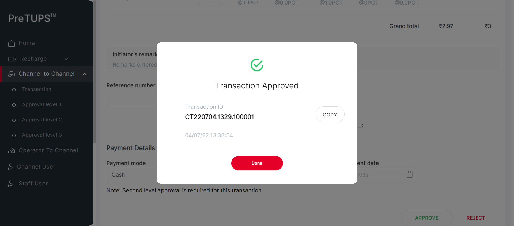
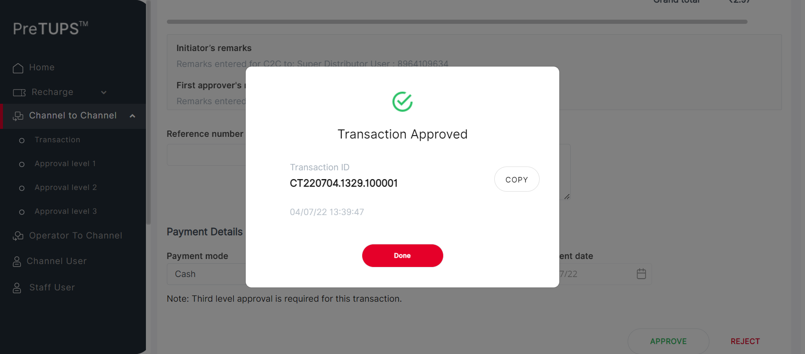
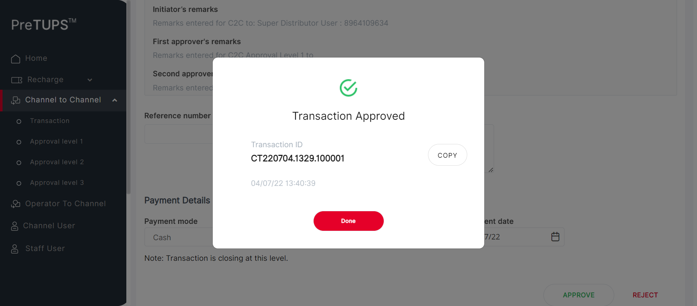
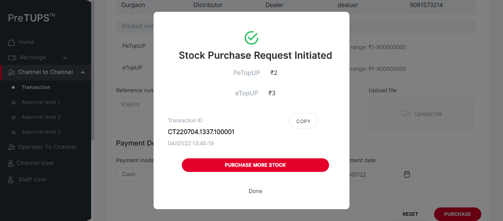
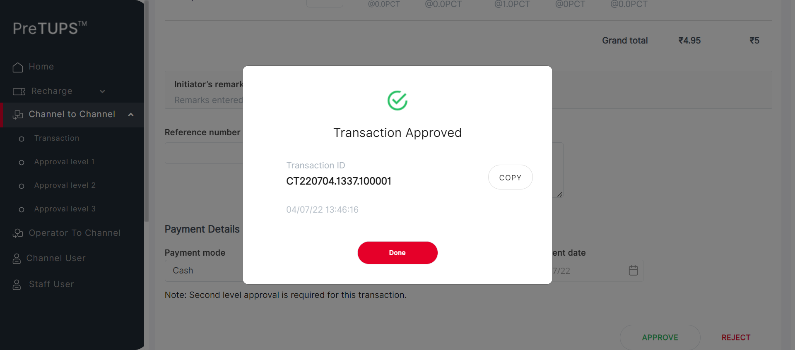
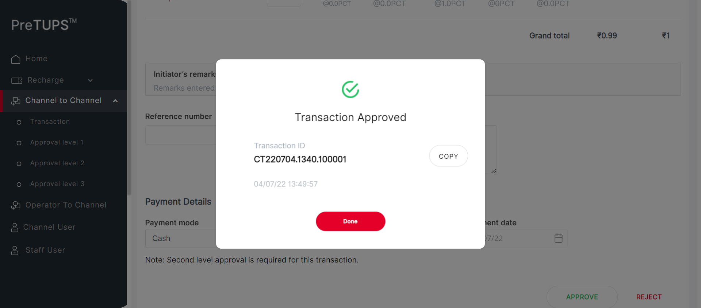
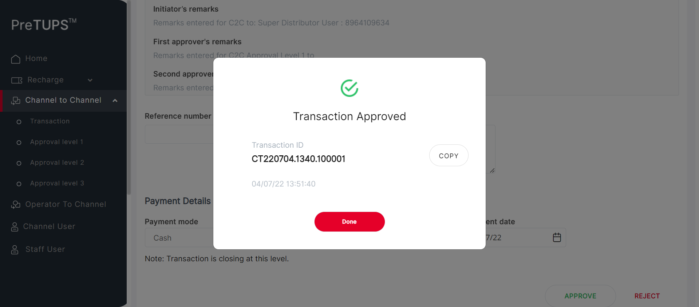
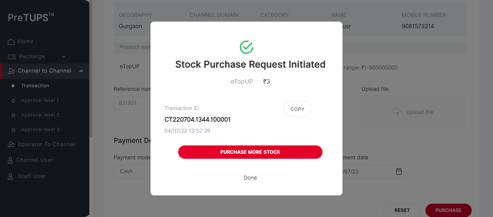
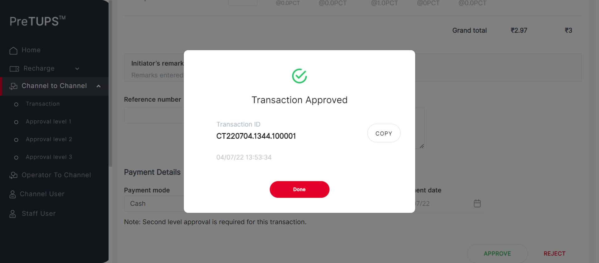
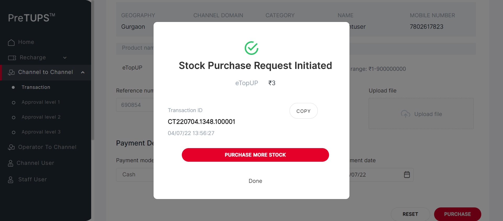

| Status | Timestamp | Details |
|---|---|---|
| info_outline | 1:37:13 PM | Entered getPreference(DIST, NG, MAX_APPROVAL_LEVEL_C2C_TRANSFER) |
| info_outline | 1:37:13 PM | Service Class Preference Not Found |
| info_outline | 1:37:13 PM | Trying to get Preference value from Control Preferences |
| info_outline | 1:37:13 PM | Query Repository Returns: DEFAULT_VALUE (3) |
| info_outline | 1:37:14 PM | Category Code for Dealer: SE |
| info_outline | 1:37:14 PM | Entered webInterface(Dealer) |
| info_outline | 1:37:14 PM | webInterface() :: select query: Select WEB_INTERFACE_ALLOWED from categories where category_name= ? |
| info_outline | 1:37:14 PM | Database Returns: WEB_INTERFACE_ALLOWED (Y) |
| info_outline | 1:37:14 PM | Exited webInterface() |
| info_outline | 1:37:14 PM | Entered performC2CBuyMobileBuyerType(Dealer, Super Distributor, 8964109634, 2468) |
| info_outline | 1:37:14 PM | Login ID Found as: newdealusrr |
| info_outline | 1:37:14 PM | Password Found as: Com@2468 |
| info_outline | 1:37:14 PM | LOGINID : newdealusrr |
| info_outline | 1:37:14 PM | LoginID found as: newdealusrr |
| info_outline | 1:37:14 PM | Password found as: Com@2468 |
| info_outline | 1:37:14 PM | Username found as: dealuser |
| info_outline | 1:37:15 PM | Trying to select Language |
| info_outline | 1:37:25 PM | Trying to enter Login ID |
| info_outline | 1:37:26 PM | Login ID entered successfully as: newdealusrr |
| info_outline | 1:37:26 PM | Trying to enter Password |
| info_outline | 1:37:26 PM | Password entered successfully as: Com@2468 |
| info_outline | 1:37:26 PM | Trying to click Login Button |
| info_outline | 1:37:26 PM | Login button clicked successfully |
| info_outline | 1:37:26 PM | Error Message Found on Login Screen: |
| info_outline | 1:37:35 PM | Trying clicking on C2C Heading |
| info_outline | 1:37:35 PM | User clicked C2C Heading Link. |
| info_outline | 1:37:35 PM | C2C Heading and Transaction Heading is clicked |
| info_outline | 1:37:35 PM | Trying clicking on C2C Single Operation Heading |
| info_outline | 1:37:38 PM | User clicked C2C Single Operation Heading. |
| info_outline | 1:37:38 PM | Trying clicking on C2C Buy Heading |
| info_outline | 1:37:38 PM | User clicked C2C Buy Heading. |
| info_outline | 1:37:38 PM | Trying clicking on Etopup |
| info_outline | 1:37:38 PM | Clicked Etopup. |
| info_outline | 1:37:38 PM | Trying to select C2C Buyer Type |
| info_outline | 1:37:38 PM | C2C Buyer Type selected : //ng-select[@id='searchBy']//ng-dropdown-panel[contains(@class,'ng-star-inserted')]//span[text()='Mobile Number'] |
| info_outline | 1:37:38 PM | Entering C2C MSISDN |
| info_outline | 1:37:38 PM | Entered C2C MSISDN : 8964109634 |
| info_outline | 1:37:48 PM | Trying clicking on PROCEED button on C2C |
| info_outline | 1:37:51 PM | Clicked PROCEED button on C2C. |
| info_outline | 1:37:51 PM | Trying to initiate C2C Topups |
| info_outline | 1:37:51 PM | rowCount of c2c topups available on screen : 2 |
| info_outline | 1:37:51 PM | sheetProductCode : eTopUP |
| info_outline | 1:37:51 PM | sheetProductCode : PeTopUP |
| info_outline | 1:37:51 PM | quantity : 2 |
| info_outline | 1:37:51 PM | String.valueOf(quantity) SEND KEYS : 2 |
| info_outline | 1:37:51 PM | rowCount of c2c topups available on screen : 2 |
| info_outline | 1:37:51 PM | sheetProductCode : eTopUP |
| info_outline | 1:37:51 PM | quantity : 1 |
| info_outline | 1:37:51 PM | String.valueOf(quantity) SEND KEYS : 1 |
| info_outline | 1:37:51 PM | sheetProductCode : PeTopUP |
| info_outline | 1:37:51 PM | Entered Quantities: |
| info_outline | 1:37:51 PM | Entered Reference Number |
| info_outline | 1:37:52 PM | User entered Remarks |
| info_outline | 1:37:52 PM | Trying to select Payment mode : Cash |
| info_outline | 1:37:52 PM | Selected Payment Mode : Cash |
| info_outline | 1:37:52 PM | Trying to select Payment Instrument Number |
| info_outline | 1:37:52 PM | User entered PaymentInstNum: 124231 |
| info_outline | 1:37:52 PM | Trying to select Date |
| info_outline | 1:37:52 PM | Trying to enter Payment Instrument Date |
| info_outline | 1:37:52 PM | User entered PaymentInstDate: 04/07/22 |
| info_outline | 1:37:52 PM | Trying clicking on C2C TRANSFER button |
| info_outline | 1:37:52 PM | Clicked C2C Transfer Button |
| info_outline | 1:37:54 PM | PIN PopUP is visible. |
| info_outline | 1:37:54 PM | Trying to Enter Channel User PIN for C2C |
| info_outline | 1:37:54 PM | User entered PIN: 2468 |
| info_outline | 1:37:54 PM | Trying clicking on C2C TRANSFER button |
| info_outline | 1:37:54 PM | Clicked C2C Transfer Button |
| info_outline | 1:37:55 PM | PIN PopUP is visible. |
| info_outline | 1:37:55 PM | Fetching C2C Buy Request Initiated Message |
| info_outline | 1:37:55 PM | C2C Transfer Buy Initiated Message : Stock Purchase Request Initiated |
| info_outline | 1:37:55 PM | Trying to get C2C Topups Done |
| info_outline | 1:37:55 PM | C2C [[ChromeDriver: chrome on WINDOWS (02585b3975bbec6a10066cd01ba59416)] -> xpath: (//label[@class='labelposPrd'])[1]] : [[ChromeDriver: chrome on WINDOWS (02585b3975bbec6a10066cd01ba59416)] -> xpath: (//label[@class='labelposPrd'])[1]/following-sibling::label] |
| info_outline | 1:37:55 PM | C2C [[ChromeDriver: chrome on WINDOWS (02585b3975bbec6a10066cd01ba59416)] -> xpath: (//label[@class='labelposPrd'])[2]] : [[ChromeDriver: chrome on WINDOWS (02585b3975bbec6a10066cd01ba59416)] -> xpath: (//label[@class='labelposPrd'])[2]/following-sibling::label] |
| info_outline | 1:37:55 PM | C2C TOPUPS Done and Info Printed Above |
| info_outline | 1:37:55 PM | C2C Purchase Initiated : Stock Purchase Request Initiated |
| info_outline | 1:38:00 PM | Fetching C2C Purchase Transaction ID |
| info_outline | 1:38:00 PM | C2C Purchase Transaction ID : CT220704.1329.100001 |
| error | 1:38:21 PM | Error while getting SSH Server Instance : com.jcraft.jsch.JSchException: java.net.ConnectException: Connection timed out: connect |
| check_circle | 1:38:21 PM | Catalina Log |
| info_outline | 1:38:22 PM | |
| info_outline | 1:38:22 PM | Trying to Click DONE button after C2C Purchase initiated |
| info_outline | 1:38:22 PM | Clicked Done for Initiated C2C |
| info_outline | 1:38:22 PM | Exited performC2CBuyMobileBuyerType() |
| info_outline | 1:38:22 PM | Entered performC2CTransferMobileBuyerType(Super Distributor, Dealer, 2468) |
| info_outline | 1:38:22 PM | Login ID Found as: suser |
| info_outline | 1:38:22 PM | Password Found as: Com@2469 |
| info_outline | 1:38:22 PM | LOGINID : suser |
| info_outline | 1:38:22 PM | LoginID found as: suser |
| info_outline | 1:38:22 PM | Password found as: Com@2469 |
| info_outline | 1:38:22 PM | Username found as: suser |
| info_outline | 1:38:22 PM | Trying to select Language |
| info_outline | 1:38:33 PM | Trying to enter Login ID |
| info_outline | 1:38:33 PM | Login ID entered successfully as: suser |
| info_outline | 1:38:33 PM | Trying to enter Password |
| info_outline | 1:38:33 PM | Password entered successfully as: Com@2469 |
| info_outline | 1:38:33 PM | Trying to click Login Button |
| info_outline | 1:38:33 PM | Login button clicked successfully |
| info_outline | 1:38:33 PM | Error Message Found on Login Screen: |
| info_outline | 1:38:43 PM | Trying clicking on C2C Heading |
| info_outline | 1:38:43 PM | User clicked C2C Heading Link. |
| info_outline | 1:38:43 PM | Trying clicking on C2C Approval Level 1 Heading |
| info_outline | 1:38:43 PM | User clicked C2C Approval Level 1 Heading Link. |
| info_outline | 1:38:43 PM | C2C Heading and Transaction Heading is clicked |
| info_outline | 1:38:43 PM | Waiting for spinner |
| info_outline | 1:38:44 PM | Waiting for spinner to stop |
| info_outline | 1:38:47 PM | Spinner stopped |
| info_outline | 1:38:47 PM | Trying clicking on C2C Single Operation Heading |
| info_outline | 1:38:47 PM | User clicked C2C Single Operation Heading. |
| info_outline | 1:38:47 PM | Trying clicking on etopUp Heading |
| info_outline | 1:38:47 PM | User clicked eTopup Heading Link. |
| info_outline | 1:38:47 PM | Trying to enter the TransactionId |
| info_outline | 1:38:48 PM | Entered the TransactionId |
| info_outline | 1:38:48 PM | Trying to Click the approve button |
| info_outline | 1:38:48 PM | User clicked Approve Button . |
| info_outline | 1:38:48 PM | Trying to enter the remarks |
| info_outline | 1:38:48 PM | Entered the TransactionId |
| info_outline | 1:38:49 PM | Trying to Click the approve button |
| info_outline | 1:38:49 PM | User clicked Approve Button . |
| info_outline | 1:38:49 PM | Trying to Click the yes button |
| info_outline | 1:38:54 PM | User clicked Yes Button. |
| info_outline | 1:38:55 PM | PopUP is visible. |
| info_outline | 1:38:55 PM | Trying to get the Success Msg |
| info_outline | 1:38:55 PM | Successfully Retrieved Success Msg |
| info_outline | 1:38:55 PM | Expected: Transaction Approved |
| info_outline | 1:38:55 PM | Message Validation Success |
| info_outline | 1:38:56 PM |  |
| info_outline | 1:38:56 PM | Transaction Approved : Transaction Approved |
| info_outline | 1:38:56 PM | Trying to get the TxndID |
| info_outline | 1:38:56 PM | Successfully retrieved TxnId |
| error | 1:39:17 PM | Error while getting SSH Server Instance : com.jcraft.jsch.JSchException: java.net.ConnectException: Connection timed out: connect |
| check_circle | 1:39:17 PM | Catalina Log |
| info_outline | 1:39:17 PM | Trying to click Done Button |
| info_outline | 1:39:17 PM | Done Button successfully clicked |
| info_outline | 1:39:17 PM | Entered performC2CTransferMobileBuyerType(Super Distributor, Dealer, 2468) |
| info_outline | 1:39:17 PM | Login ID Found as: suser |
| info_outline | 1:39:17 PM | Password Found as: Com@2469 |
| info_outline | 1:39:17 PM | LOGINID : suser |
| info_outline | 1:39:17 PM | LoginID found as: suser |
| info_outline | 1:39:17 PM | Password found as: Com@2469 |
| info_outline | 1:39:17 PM | Username found as: suser |
| info_outline | 1:39:17 PM | Trying to select Language |
| info_outline | 1:39:28 PM | Trying to enter Login ID |
| info_outline | 1:39:28 PM | Login ID entered successfully as: suser |
| info_outline | 1:39:28 PM | Trying to enter Password |
| info_outline | 1:39:28 PM | Password entered successfully as: Com@2469 |
| info_outline | 1:39:28 PM | Trying to click Login Button |
| info_outline | 1:39:28 PM | Login button clicked successfully |
| info_outline | 1:39:28 PM | Error Message Found on Login Screen: |
| info_outline | 1:39:37 PM | Trying clicking on C2C Heading |
| info_outline | 1:39:38 PM | User clicked C2C Heading Link. |
| info_outline | 1:39:38 PM | Trying clicking on C2C Approval Level 2 Heading |
| info_outline | 1:39:38 PM | User clicked C2C Approval Level 2 Heading Link. |
| info_outline | 1:39:38 PM | C2C Heading and Transaction Heading is clicked |
| info_outline | 1:39:38 PM | Waiting for spinner |
| info_outline | 1:39:38 PM | Waiting for spinner to stop |
| info_outline | 1:39:40 PM | Spinner stopped |
| info_outline | 1:39:40 PM | Trying clicking on C2C Single Operation Heading |
| info_outline | 1:39:40 PM | User clicked C2C Single Operation Heading. |
| info_outline | 1:39:40 PM | Trying clicking on etopUp Heading |
| info_outline | 1:39:40 PM | User clicked eTopup Heading Link. |
| info_outline | 1:39:40 PM | Trying to enter the TransactionId |
| info_outline | 1:39:40 PM | Entered the TransactionId |
| info_outline | 1:39:40 PM | Trying to Click the approve button |
| info_outline | 1:39:40 PM | User clicked Approve Button . |
| info_outline | 1:39:40 PM | Trying to enter the remarks |
| info_outline | 1:39:40 PM | Entered the TransactionId |
| info_outline | 1:39:41 PM | Trying to Click the approve button |
| info_outline | 1:39:42 PM | User clicked Approve Button . |
| info_outline | 1:39:42 PM | Trying to Click the yes button |
| info_outline | 1:39:47 PM | User clicked Yes Button. |
| info_outline | 1:39:48 PM | PopUP is visible. |
| info_outline | 1:39:48 PM | Trying to get the Success Msg |
| info_outline | 1:39:48 PM | Successfully Retrieved Success Msg |
| info_outline | 1:39:48 PM | Expected: Transaction Approved |
| info_outline | 1:39:48 PM | Message Validation Success |
| info_outline | 1:39:48 PM |  |
| info_outline | 1:39:48 PM | Transaction Approved : Transaction Approved |
| info_outline | 1:39:48 PM | Trying to get the TxndID |
| info_outline | 1:39:48 PM | Successfully retrieved TxnId |
| error | 1:40:09 PM | Error while getting SSH Server Instance : com.jcraft.jsch.JSchException: java.net.ConnectException: Connection timed out: connect |
| check_circle | 1:40:09 PM | Catalina Log |
| info_outline | 1:40:09 PM | Trying to click Done Button |
| info_outline | 1:40:09 PM | Done Button successfully clicked |
| info_outline | 1:40:09 PM | Entered performC2CTransferMobileBuyerType(Super Distributor, Dealer, 2468) |
| info_outline | 1:40:09 PM | Login ID Found as: suser |
| info_outline | 1:40:09 PM | Password Found as: Com@2469 |
| info_outline | 1:40:09 PM | LOGINID : suser |
| info_outline | 1:40:09 PM | LoginID found as: suser |
| info_outline | 1:40:09 PM | Password found as: Com@2469 |
| info_outline | 1:40:09 PM | Username found as: suser |
| info_outline | 1:40:10 PM | Trying to select Language |
| info_outline | 1:40:20 PM | Trying to enter Login ID |
| info_outline | 1:40:20 PM | Login ID entered successfully as: suser |
| info_outline | 1:40:20 PM | Trying to enter Password |
| info_outline | 1:40:21 PM | Password entered successfully as: Com@2469 |
| info_outline | 1:40:21 PM | Trying to click Login Button |
| info_outline | 1:40:21 PM | Login button clicked successfully |
| info_outline | 1:40:21 PM | Error Message Found on Login Screen: |
| info_outline | 1:40:30 PM | Trying clicking on C2C Heading |
| info_outline | 1:40:30 PM | User clicked C2C Heading Link. |
| info_outline | 1:40:30 PM | Trying clicking on C2C Approval Level 3 Heading |
| info_outline | 1:40:30 PM | User clicked C2C Approval Level 3 Heading Link. |
| info_outline | 1:40:30 PM | C2C Heading and Transaction Heading is clicked |
| info_outline | 1:40:30 PM | Waiting for spinner |
| info_outline | 1:40:30 PM | Waiting for spinner to stop |
| info_outline | 1:40:32 PM | Spinner stopped |
| info_outline | 1:40:32 PM | Trying clicking on C2C Single Operation Heading |
| info_outline | 1:40:32 PM | User clicked C2C Single Operation Heading. |
| info_outline | 1:40:32 PM | Trying clicking on etopUp Heading |
| info_outline | 1:40:32 PM | User clicked eTopup Heading Link. |
| info_outline | 1:40:32 PM | Trying to enter the TransactionId |
| info_outline | 1:40:32 PM | Entered the TransactionId |
| info_outline | 1:40:32 PM | Trying to Click the approve button |
| info_outline | 1:40:32 PM | User clicked Approve Button . |
| info_outline | 1:40:32 PM | Trying to enter the remarks |
| info_outline | 1:40:32 PM | Entered the TransactionId |
| info_outline | 1:40:33 PM | Trying to Click the approve button |
| info_outline | 1:40:34 PM | User clicked Approve Button . |
| info_outline | 1:40:34 PM | Trying to Click the yes button |
| info_outline | 1:40:39 PM | User clicked Yes Button. |
| info_outline | 1:40:40 PM | PopUP is visible. |
| info_outline | 1:40:40 PM | Trying to get the Success Msg |
| info_outline | 1:40:40 PM | Successfully Retrieved Success Msg |
| info_outline | 1:40:40 PM | Expected: Transaction Approved |
| info_outline | 1:40:40 PM | Message Validation Success |
| info_outline | 1:40:40 PM |  |
| info_outline | 1:40:40 PM | Transaction Approved : Transaction Approved |
| info_outline | 1:40:40 PM | Trying to get the TxndID |
| info_outline | 1:40:40 PM | Successfully retrieved TxnId |
| error | 1:41:01 PM | Error while getting SSH Server Instance : com.jcraft.jsch.JSchException: java.net.ConnectException: Connection timed out: connect |
| check_circle | 1:41:01 PM | Catalina Log |
| info_outline | 1:41:01 PM | Trying to click Done Button |
| info_outline | 1:41:01 PM | Done Button successfully clicked |
| Status | Timestamp | Details |
|---|---|---|
| info_outline | 1:41:02 PM | Entered getPreference(DIST, NG, MAX_APPROVAL_LEVEL_C2C_TRANSFER) |
| info_outline | 1:41:02 PM | Service Class Preference Not Found |
| info_outline | 1:41:02 PM | Trying to get Preference value from Control Preferences |
| info_outline | 1:41:02 PM | Query Repository Returns: DEFAULT_VALUE (3) |
| info_outline | 1:41:02 PM | Category Code for Agent: AG |
| info_outline | 1:41:02 PM | Entered webInterface(Agent) |
| info_outline | 1:41:02 PM | webInterface() :: select query: Select WEB_INTERFACE_ALLOWED from categories where category_name= ? |
| info_outline | 1:41:02 PM | Database Returns: WEB_INTERFACE_ALLOWED (Y) |
| info_outline | 1:41:02 PM | Exited webInterface() |
| info_outline | 1:41:02 PM | Entered performC2CBuyMobileBuyerType(Agent, Super Distributor, 8964109634, 2468) |
| info_outline | 1:41:03 PM | Login ID Found as: agusernew |
| info_outline | 1:41:03 PM | Password Found as: Com@2468 |
| info_outline | 1:41:03 PM | LOGINID : agusernew |
| info_outline | 1:41:03 PM | LoginID found as: agusernew |
| info_outline | 1:41:03 PM | Password found as: Com@2468 |
| info_outline | 1:41:03 PM | Username found as: agentuser |
| info_outline | 1:41:03 PM | Trying to select Language |
| info_outline | 1:41:14 PM | Trying to enter Login ID |
| info_outline | 1:41:14 PM | Login ID entered successfully as: agusernew |
| info_outline | 1:41:14 PM | Trying to enter Password |
| info_outline | 1:41:14 PM | Password entered successfully as: Com@2468 |
| info_outline | 1:41:14 PM | Trying to click Login Button |
| info_outline | 1:41:14 PM | Login button clicked successfully |
| info_outline | 1:41:14 PM | Error Message Found on Login Screen: |
| info_outline | 1:41:23 PM | Trying clicking on C2C Heading |
| info_outline | 1:41:23 PM | User clicked C2C Heading Link. |
| info_outline | 1:41:23 PM | C2C Heading and Transaction Heading is clicked |
| info_outline | 1:41:23 PM | Trying clicking on C2C Single Operation Heading |
| info_outline | 1:41:23 PM | User clicked C2C Single Operation Heading. |
| info_outline | 1:41:23 PM | Trying clicking on C2C Buy Heading |
| info_outline | 1:41:23 PM | User clicked C2C Buy Heading. |
| info_outline | 1:41:23 PM | Trying clicking on Etopup |
| info_outline | 1:41:23 PM | Clicked Etopup. |
| info_outline | 1:41:23 PM | Trying to select C2C Buyer Type |
| info_outline | 1:41:23 PM | C2C Buyer Type selected : //ng-select[@id='searchBy']//ng-dropdown-panel[contains(@class,'ng-star-inserted')]//span[text()='Mobile Number'] |
| info_outline | 1:41:23 PM | Entering C2C MSISDN |
| info_outline | 1:41:24 PM | Entered C2C MSISDN : 8964109634 |
| info_outline | 1:41:34 PM | Trying clicking on PROCEED button on C2C |
| info_outline | 1:41:36 PM | Clicked PROCEED button on C2C. |
| info_outline | 1:41:36 PM | Trying to initiate C2C Topups |
| info_outline | 1:41:36 PM | rowCount of c2c topups available on screen : 2 |
| info_outline | 1:41:36 PM | sheetProductCode : eTopUP |
| info_outline | 1:41:36 PM | sheetProductCode : PeTopUP |
| info_outline | 1:41:36 PM | quantity : 2 |
| info_outline | 1:41:36 PM | String.valueOf(quantity) SEND KEYS : 2 |
| info_outline | 1:41:36 PM | rowCount of c2c topups available on screen : 2 |
| info_outline | 1:41:36 PM | sheetProductCode : eTopUP |
| info_outline | 1:41:36 PM | quantity : 1 |
| info_outline | 1:41:36 PM | String.valueOf(quantity) SEND KEYS : 1 |
| info_outline | 1:41:36 PM | sheetProductCode : PeTopUP |
| info_outline | 1:41:36 PM | Entered Quantities: |
| info_outline | 1:41:36 PM | Entered Reference Number |
| info_outline | 1:41:37 PM | User entered Remarks |
| info_outline | 1:41:37 PM | Trying to select Payment mode : Cash |
| info_outline | 1:41:37 PM | Selected Payment Mode : Cash |
| info_outline | 1:41:37 PM | Trying to select Payment Instrument Number |
| info_outline | 1:41:37 PM | User entered PaymentInstNum: 124231 |
| info_outline | 1:41:37 PM | Trying to select Date |
| info_outline | 1:41:37 PM | Trying to enter Payment Instrument Date |
| info_outline | 1:41:37 PM | User entered PaymentInstDate: 04/07/22 |
| info_outline | 1:41:37 PM | Trying clicking on C2C TRANSFER button |
| info_outline | 1:41:37 PM | Clicked C2C Transfer Button |
| info_outline | 1:41:38 PM | PIN PopUP is visible. |
| info_outline | 1:41:38 PM | Trying to Enter Channel User PIN for C2C |
| info_outline | 1:41:38 PM | User entered PIN: 2468 |
| info_outline | 1:41:38 PM | Trying clicking on C2C TRANSFER button |
| info_outline | 1:41:38 PM | Clicked C2C Transfer Button |
| info_outline | 1:41:39 PM | PIN PopUP is visible. |
| info_outline | 1:41:39 PM | Fetching C2C Buy Request Initiated Message |
| info_outline | 1:41:40 PM | C2C Transfer Buy Initiated Message : Stock Purchase Request Initiated |
| info_outline | 1:41:40 PM | Trying to get C2C Topups Done |
| info_outline | 1:41:40 PM | C2C [[ChromeDriver: chrome on WINDOWS (02585b3975bbec6a10066cd01ba59416)] -> xpath: (//label[@class='labelposPrd'])[1]] : [[ChromeDriver: chrome on WINDOWS (02585b3975bbec6a10066cd01ba59416)] -> xpath: (//label[@class='labelposPrd'])[1]/following-sibling::label] |
| info_outline | 1:41:40 PM | C2C [[ChromeDriver: chrome on WINDOWS (02585b3975bbec6a10066cd01ba59416)] -> xpath: (//label[@class='labelposPrd'])[2]] : [[ChromeDriver: chrome on WINDOWS (02585b3975bbec6a10066cd01ba59416)] -> xpath: (//label[@class='labelposPrd'])[2]/following-sibling::label] |
| info_outline | 1:41:40 PM | C2C TOPUPS Done and Info Printed Above |
| info_outline | 1:41:40 PM | C2C Purchase Initiated : Stock Purchase Request Initiated |
| info_outline | 1:41:45 PM | Fetching C2C Purchase Transaction ID |
| info_outline | 1:41:45 PM | C2C Purchase Transaction ID : CT220704.1333.100001 |
| error | 1:42:06 PM | Error while getting SSH Server Instance : com.jcraft.jsch.JSchException: java.net.ConnectException: Connection timed out: connect |
| check_circle | 1:42:06 PM | Catalina Log |
| info_outline | 1:42:06 PM | |
| info_outline | 1:42:06 PM | Trying to Click DONE button after C2C Purchase initiated |
| info_outline | 1:42:06 PM | Clicked Done for Initiated C2C |
| info_outline | 1:42:06 PM | Exited performC2CBuyMobileBuyerType() |
| info_outline | 1:42:06 PM | Entered performC2CTransferMobileBuyerType(Super Distributor, Agent, 2468) |
| info_outline | 1:42:06 PM | Login ID Found as: suser |
| info_outline | 1:42:06 PM | Password Found as: Com@2469 |
| info_outline | 1:42:06 PM | LOGINID : suser |
| info_outline | 1:42:06 PM | LoginID found as: suser |
| info_outline | 1:42:06 PM | Password found as: Com@2469 |
| info_outline | 1:42:06 PM | Username found as: suser |
| info_outline | 1:42:06 PM | Trying to select Language |
| info_outline | 1:42:17 PM | Trying to enter Login ID |
| info_outline | 1:42:17 PM | Login ID entered successfully as: suser |
| info_outline | 1:42:17 PM | Trying to enter Password |
| info_outline | 1:42:17 PM | Password entered successfully as: Com@2469 |
| info_outline | 1:42:17 PM | Trying to click Login Button |
| info_outline | 1:42:17 PM | Login button clicked successfully |
| info_outline | 1:42:17 PM | Error Message Found on Login Screen: |
| info_outline | 1:42:26 PM | Trying clicking on C2C Heading |
| info_outline | 1:42:27 PM | User clicked C2C Heading Link. |
| info_outline | 1:42:27 PM | Trying clicking on C2C Approval Level 1 Heading |
| info_outline | 1:42:27 PM | User clicked C2C Approval Level 1 Heading Link. |
| info_outline | 1:42:27 PM | C2C Heading and Transaction Heading is clicked |
| info_outline | 1:42:27 PM | Waiting for spinner |
| info_outline | 1:42:27 PM | Waiting for spinner to stop |
| info_outline | 1:42:29 PM | Spinner stopped |
| info_outline | 1:42:29 PM | Trying clicking on C2C Single Operation Heading |
| info_outline | 1:42:29 PM | User clicked C2C Single Operation Heading. |
| info_outline | 1:42:29 PM | Trying clicking on etopUp Heading |
| info_outline | 1:42:29 PM | User clicked eTopup Heading Link. |
| info_outline | 1:42:29 PM | Trying to enter the TransactionId |
| info_outline | 1:42:30 PM | Entered the TransactionId |
| info_outline | 1:42:30 PM | Trying to Click the approve button |
| info_outline | 1:42:30 PM | User clicked Approve Button . |
| info_outline | 1:42:30 PM | Trying to enter the remarks |
| info_outline | 1:42:30 PM | Entered the TransactionId |
| info_outline | 1:42:31 PM | Trying to Click the approve button |
| info_outline | 1:42:31 PM | User clicked Approve Button . |
| info_outline | 1:42:31 PM | Trying to Click the yes button |
| info_outline | 1:42:36 PM | User clicked Yes Button. |
| info_outline | 1:42:37 PM | PopUP is visible. |
| info_outline | 1:42:37 PM | Trying to get the Success Msg |
| info_outline | 1:42:37 PM | Successfully Retrieved Success Msg |
| info_outline | 1:42:37 PM | Expected: Transaction Approved |
| info_outline | 1:42:37 PM | Message Validation Success |
| info_outline | 1:42:37 PM | |
| info_outline | 1:42:37 PM | Transaction Approved : Transaction Approved |
| info_outline | 1:42:37 PM | Trying to get the TxndID |
| info_outline | 1:42:37 PM | Successfully retrieved TxnId |
| error | 1:42:58 PM | Error while getting SSH Server Instance : com.jcraft.jsch.JSchException: java.net.ConnectException: Connection timed out: connect |
| check_circle | 1:42:58 PM | Catalina Log |
| info_outline | 1:42:58 PM | Trying to click Done Button |
| info_outline | 1:42:58 PM | Done Button successfully clicked |
| info_outline | 1:42:58 PM | Entered performC2CTransferMobileBuyerType(Super Distributor, Agent, 2468) |
| info_outline | 1:42:59 PM | Login ID Found as: suser |
| info_outline | 1:42:59 PM | Password Found as: Com@2469 |
| info_outline | 1:42:59 PM | LOGINID : suser |
| info_outline | 1:42:59 PM | LoginID found as: suser |
| info_outline | 1:42:59 PM | Password found as: Com@2469 |
| info_outline | 1:42:59 PM | Username found as: suser |
| info_outline | 1:42:59 PM | Trying to select Language |
| info_outline | 1:43:09 PM | Trying to enter Login ID |
| info_outline | 1:43:09 PM | Login ID entered successfully as: suser |
| info_outline | 1:43:09 PM | Trying to enter Password |
| info_outline | 1:43:09 PM | Password entered successfully as: Com@2469 |
| info_outline | 1:43:10 PM | Trying to click Login Button |
| info_outline | 1:43:10 PM | Login button clicked successfully |
| info_outline | 1:43:10 PM | Error Message Found on Login Screen: |
| info_outline | 1:43:19 PM | Trying clicking on C2C Heading |
| info_outline | 1:43:19 PM | User clicked C2C Heading Link. |
| info_outline | 1:43:19 PM | Trying clicking on C2C Approval Level 2 Heading |
| info_outline | 1:43:20 PM | User clicked C2C Approval Level 2 Heading Link. |
| info_outline | 1:43:20 PM | C2C Heading and Transaction Heading is clicked |
| info_outline | 1:43:20 PM | Waiting for spinner |
| info_outline | 1:43:20 PM | Waiting for spinner to stop |
| info_outline | 1:43:21 PM | Spinner stopped |
| info_outline | 1:43:21 PM | Trying clicking on C2C Single Operation Heading |
| info_outline | 1:43:21 PM | User clicked C2C Single Operation Heading. |
| info_outline | 1:43:21 PM | Trying clicking on etopUp Heading |
| info_outline | 1:43:21 PM | User clicked eTopup Heading Link. |
| info_outline | 1:43:21 PM | Trying to enter the TransactionId |
| info_outline | 1:43:22 PM | Entered the TransactionId |
| info_outline | 1:43:22 PM | Trying to Click the approve button |
| info_outline | 1:43:22 PM | User clicked Approve Button . |
| info_outline | 1:43:22 PM | Trying to enter the remarks |
| info_outline | 1:43:22 PM | Entered the TransactionId |
| info_outline | 1:43:23 PM | Trying to Click the approve button |
| info_outline | 1:43:23 PM | User clicked Approve Button . |
| info_outline | 1:43:23 PM | Trying to Click the yes button |
| info_outline | 1:43:28 PM | User clicked Yes Button. |
| info_outline | 1:43:30 PM | PopUP is visible. |
| info_outline | 1:43:30 PM | Trying to get the Success Msg |
| info_outline | 1:43:30 PM | Successfully Retrieved Success Msg |
| info_outline | 1:43:30 PM | Expected: Transaction Approved |
| info_outline | 1:43:30 PM | Message Validation Success |
| info_outline | 1:43:30 PM | |
| info_outline | 1:43:30 PM | Transaction Approved : Transaction Approved |
| info_outline | 1:43:30 PM | Trying to get the TxndID |
| info_outline | 1:43:30 PM | Successfully retrieved TxnId |
| error | 1:43:51 PM | Error while getting SSH Server Instance : com.jcraft.jsch.JSchException: java.net.ConnectException: Connection timed out: connect |
| check_circle | 1:43:51 PM | Catalina Log |
| info_outline | 1:43:51 PM | Trying to click Done Button |
| info_outline | 1:43:51 PM | Done Button successfully clicked |
| info_outline | 1:43:51 PM | Entered performC2CTransferMobileBuyerType(Super Distributor, Agent, 2468) |
| info_outline | 1:43:51 PM | Login ID Found as: suser |
| info_outline | 1:43:51 PM | Password Found as: Com@2469 |
| info_outline | 1:43:51 PM | LOGINID : suser |
| info_outline | 1:43:51 PM | LoginID found as: suser |
| info_outline | 1:43:51 PM | Password found as: Com@2469 |
| info_outline | 1:43:51 PM | Username found as: suser |
| info_outline | 1:43:51 PM | Trying to select Language |
| info_outline | 1:44:02 PM | Trying to enter Login ID |
| info_outline | 1:44:02 PM | Login ID entered successfully as: suser |
| info_outline | 1:44:02 PM | Trying to enter Password |
| info_outline | 1:44:02 PM | Password entered successfully as: Com@2469 |
| info_outline | 1:44:02 PM | Trying to click Login Button |
| info_outline | 1:44:02 PM | Login button clicked successfully |
| info_outline | 1:44:02 PM | Error Message Found on Login Screen: |
| info_outline | 1:44:12 PM | Trying clicking on C2C Heading |
| info_outline | 1:44:12 PM | User clicked C2C Heading Link. |
| info_outline | 1:44:12 PM | Trying clicking on C2C Approval Level 3 Heading |
| info_outline | 1:44:12 PM | User clicked C2C Approval Level 3 Heading Link. |
| info_outline | 1:44:12 PM | C2C Heading and Transaction Heading is clicked |
| info_outline | 1:44:12 PM | Waiting for spinner |
| info_outline | 1:44:12 PM | Waiting for spinner to stop |
| info_outline | 1:44:14 PM | Spinner stopped |
| info_outline | 1:44:14 PM | Trying clicking on C2C Single Operation Heading |
| info_outline | 1:44:14 PM | User clicked C2C Single Operation Heading. |
| info_outline | 1:44:14 PM | Trying clicking on etopUp Heading |
| info_outline | 1:44:14 PM | User clicked eTopup Heading Link. |
| info_outline | 1:44:14 PM | Trying to enter the TransactionId |
| info_outline | 1:44:14 PM | Entered the TransactionId |
| info_outline | 1:44:14 PM | Trying to Click the approve button |
| info_outline | 1:44:14 PM | User clicked Approve Button . |
| info_outline | 1:44:14 PM | Trying to enter the remarks |
| info_outline | 1:44:15 PM | Entered the TransactionId |
| info_outline | 1:44:16 PM | Trying to Click the approve button |
| info_outline | 1:44:16 PM | User clicked Approve Button . |
| info_outline | 1:44:16 PM | Trying to Click the yes button |
| info_outline | 1:44:21 PM | User clicked Yes Button. |
| info_outline | 1:44:22 PM | PopUP is visible. |
| info_outline | 1:44:22 PM | Trying to get the Success Msg |
| info_outline | 1:44:22 PM | Successfully Retrieved Success Msg |
| info_outline | 1:44:22 PM | Expected: Transaction Approved |
| info_outline | 1:44:22 PM | Message Validation Success |
| info_outline | 1:44:23 PM | |
| info_outline | 1:44:23 PM | Transaction Approved : Transaction Approved |
| info_outline | 1:44:23 PM | Trying to get the TxndID |
| info_outline | 1:44:23 PM | Successfully retrieved TxnId |
| error | 1:44:44 PM | Error while getting SSH Server Instance : com.jcraft.jsch.JSchException: java.net.ConnectException: Connection timed out: connect |
| check_circle | 1:44:44 PM | Catalina Log |
| info_outline | 1:44:44 PM | Trying to click Done Button |
| info_outline | 1:44:44 PM | Done Button successfully clicked |
| Status | Timestamp | Details |
|---|---|---|
| info_outline | 1:44:44 PM | Entered getPreference(SE, NG, MAX_APPROVAL_LEVEL_C2C_TRANSFER) |
| info_outline | 1:44:44 PM | Service Class Preference Not Found |
| info_outline | 1:44:44 PM | Trying to get Preference value from Control Preferences |
| info_outline | 1:44:44 PM | Query Repository Returns: DEFAULT_VALUE (3) |
| info_outline | 1:44:44 PM | Category Code for Agent: AG |
| info_outline | 1:44:44 PM | Entered webInterface(Agent) |
| info_outline | 1:44:44 PM | webInterface() :: select query: Select WEB_INTERFACE_ALLOWED from categories where category_name= ? |
| info_outline | 1:44:44 PM | Database Returns: WEB_INTERFACE_ALLOWED (Y) |
| info_outline | 1:44:44 PM | Exited webInterface() |
| info_outline | 1:44:44 PM | Entered performC2CBuyMobileBuyerType(Agent, Dealer, 9081573214, 2468) |
| info_outline | 1:44:44 PM | Login ID Found as: agusernew |
| info_outline | 1:44:44 PM | Password Found as: Com@2468 |
| info_outline | 1:44:44 PM | LOGINID : agusernew |
| info_outline | 1:44:44 PM | LoginID found as: agusernew |
| info_outline | 1:44:44 PM | Password found as: Com@2468 |
| info_outline | 1:44:44 PM | Username found as: agentuser |
| info_outline | 1:44:45 PM | Trying to select Language |
| info_outline | 1:44:55 PM | Trying to enter Login ID |
| info_outline | 1:44:55 PM | Login ID entered successfully as: agusernew |
| info_outline | 1:44:55 PM | Trying to enter Password |
| info_outline | 1:44:56 PM | Password entered successfully as: Com@2468 |
| info_outline | 1:44:56 PM | Trying to click Login Button |
| info_outline | 1:44:56 PM | Login button clicked successfully |
| info_outline | 1:44:56 PM | Error Message Found on Login Screen: |
| info_outline | 1:45:04 PM | Trying clicking on C2C Heading |
| info_outline | 1:45:04 PM | User clicked C2C Heading Link. |
| info_outline | 1:45:04 PM | C2C Heading and Transaction Heading is clicked |
| info_outline | 1:45:04 PM | Trying clicking on C2C Single Operation Heading |
| info_outline | 1:45:04 PM | User clicked C2C Single Operation Heading. |
| info_outline | 1:45:04 PM | Trying clicking on C2C Buy Heading |
| info_outline | 1:45:04 PM | User clicked C2C Buy Heading. |
| info_outline | 1:45:04 PM | Trying clicking on Etopup |
| info_outline | 1:45:04 PM | Clicked Etopup. |
| info_outline | 1:45:04 PM | Trying to select C2C Buyer Type |
| info_outline | 1:45:04 PM | C2C Buyer Type selected : //ng-select[@id='searchBy']//ng-dropdown-panel[contains(@class,'ng-star-inserted')]//span[text()='Mobile Number'] |
| info_outline | 1:45:04 PM | Entering C2C MSISDN |
| info_outline | 1:45:05 PM | Entered C2C MSISDN : 9081573214 |
| info_outline | 1:45:15 PM | Trying clicking on PROCEED button on C2C |
| info_outline | 1:45:17 PM | Clicked PROCEED button on C2C. |
| info_outline | 1:45:17 PM | Trying to initiate C2C Topups |
| info_outline | 1:45:17 PM | rowCount of c2c topups available on screen : 2 |
| info_outline | 1:45:17 PM | sheetProductCode : eTopUP |
| info_outline | 1:45:17 PM | sheetProductCode : PeTopUP |
| info_outline | 1:45:17 PM | quantity : 2 |
| info_outline | 1:45:17 PM | String.valueOf(quantity) SEND KEYS : 2 |
| info_outline | 1:45:17 PM | rowCount of c2c topups available on screen : 2 |
| info_outline | 1:45:17 PM | sheetProductCode : eTopUP |
| info_outline | 1:45:17 PM | quantity : 3 |
| info_outline | 1:45:17 PM | String.valueOf(quantity) SEND KEYS : 3 |
| info_outline | 1:45:17 PM | sheetProductCode : PeTopUP |
| info_outline | 1:45:17 PM | Entered Quantities: |
| info_outline | 1:45:17 PM | Entered Reference Number |
| info_outline | 1:45:17 PM | User entered Remarks |
| info_outline | 1:45:17 PM | Trying to select Payment mode : Cash |
| info_outline | 1:45:18 PM | Selected Payment Mode : Cash |
| info_outline | 1:45:18 PM | Trying to select Payment Instrument Number |
| info_outline | 1:45:18 PM | User entered PaymentInstNum: 124231 |
| info_outline | 1:45:18 PM | Trying to select Date |
| info_outline | 1:45:18 PM | Trying to enter Payment Instrument Date |
| info_outline | 1:45:18 PM | User entered PaymentInstDate: 04/07/22 |
| info_outline | 1:45:18 PM | Trying clicking on C2C TRANSFER button |
| info_outline | 1:45:18 PM | Clicked C2C Transfer Button |
| info_outline | 1:45:19 PM | PIN PopUP is visible. |
| info_outline | 1:45:19 PM | Trying to Enter Channel User PIN for C2C |
| info_outline | 1:45:19 PM | User entered PIN: 2468 |
| info_outline | 1:45:19 PM | Trying clicking on C2C TRANSFER button |
| info_outline | 1:45:19 PM | Clicked C2C Transfer Button |
| info_outline | 1:45:20 PM | PIN PopUP is visible. |
| info_outline | 1:45:20 PM | Fetching C2C Buy Request Initiated Message |
| info_outline | 1:45:20 PM | C2C Transfer Buy Initiated Message : Stock Purchase Request Initiated |
| info_outline | 1:45:20 PM | Trying to get C2C Topups Done |
| info_outline | 1:45:20 PM | C2C [[ChromeDriver: chrome on WINDOWS (02585b3975bbec6a10066cd01ba59416)] -> xpath: (//label[@class='labelposPrd'])[1]] : [[ChromeDriver: chrome on WINDOWS (02585b3975bbec6a10066cd01ba59416)] -> xpath: (//label[@class='labelposPrd'])[1]/following-sibling::label] |
| info_outline | 1:45:20 PM | C2C [[ChromeDriver: chrome on WINDOWS (02585b3975bbec6a10066cd01ba59416)] -> xpath: (//label[@class='labelposPrd'])[2]] : [[ChromeDriver: chrome on WINDOWS (02585b3975bbec6a10066cd01ba59416)] -> xpath: (//label[@class='labelposPrd'])[2]/following-sibling::label] |
| info_outline | 1:45:20 PM | C2C TOPUPS Done and Info Printed Above |
| info_outline | 1:45:20 PM | C2C Purchase Initiated : Stock Purchase Request Initiated |
| info_outline | 1:45:25 PM | Fetching C2C Purchase Transaction ID |
| info_outline | 1:45:25 PM | C2C Purchase Transaction ID : CT220704.1337.100001 |
| error | 1:45:46 PM | Error while getting SSH Server Instance : com.jcraft.jsch.JSchException: java.net.ConnectException: Connection timed out: connect |
| check_circle | 1:45:46 PM | Catalina Log |
| info_outline | 1:45:46 PM |  |
| info_outline | 1:45:46 PM | Trying to Click DONE button after C2C Purchase initiated |
| info_outline | 1:45:46 PM | Clicked Done for Initiated C2C |
| info_outline | 1:45:46 PM | Exited performC2CBuyMobileBuyerType() |
| info_outline | 1:45:46 PM | Entered performC2CTransferMobileBuyerType(Dealer, Agent, 2468) |
| info_outline | 1:45:47 PM | Login ID Found as: newdealusrr |
| info_outline | 1:45:47 PM | Password Found as: Com@2468 |
| info_outline | 1:45:47 PM | LOGINID : newdealusrr |
| info_outline | 1:45:47 PM | LoginID found as: newdealusrr |
| info_outline | 1:45:47 PM | Password found as: Com@2468 |
| info_outline | 1:45:47 PM | Username found as: dealuser |
| info_outline | 1:45:47 PM | Trying to select Language |
| info_outline | 1:45:57 PM | Trying to enter Login ID |
| info_outline | 1:45:57 PM | Login ID entered successfully as: newdealusrr |
| info_outline | 1:45:57 PM | Trying to enter Password |
| info_outline | 1:45:57 PM | Password entered successfully as: Com@2468 |
| info_outline | 1:45:57 PM | Trying to click Login Button |
| info_outline | 1:45:58 PM | Login button clicked successfully |
| info_outline | 1:45:58 PM | Error Message Found on Login Screen: |
| info_outline | 1:46:06 PM | Trying clicking on C2C Heading |
| info_outline | 1:46:06 PM | User clicked C2C Heading Link. |
| info_outline | 1:46:06 PM | Trying clicking on C2C Approval Level 1 Heading |
| info_outline | 1:46:07 PM | User clicked C2C Approval Level 1 Heading Link. |
| info_outline | 1:46:07 PM | C2C Heading and Transaction Heading is clicked |
| info_outline | 1:46:07 PM | Waiting for spinner |
| info_outline | 1:46:07 PM | Waiting for spinner to stop |
| info_outline | 1:46:09 PM | Spinner stopped |
| info_outline | 1:46:09 PM | Trying clicking on C2C Single Operation Heading |
| info_outline | 1:46:09 PM | User clicked C2C Single Operation Heading. |
| info_outline | 1:46:09 PM | Trying clicking on etopUp Heading |
| info_outline | 1:46:09 PM | User clicked eTopup Heading Link. |
| info_outline | 1:46:09 PM | Trying to enter the TransactionId |
| info_outline | 1:46:09 PM | Entered the TransactionId |
| info_outline | 1:46:09 PM | Trying to Click the approve button |
| info_outline | 1:46:10 PM | User clicked Approve Button . |
| info_outline | 1:46:10 PM | Trying to enter the remarks |
| info_outline | 1:46:10 PM | Entered the TransactionId |
| info_outline | 1:46:11 PM | Trying to Click the approve button |
| info_outline | 1:46:11 PM | User clicked Approve Button . |
| info_outline | 1:46:11 PM | Trying to Click the yes button |
| info_outline | 1:46:16 PM | User clicked Yes Button. |
| info_outline | 1:46:17 PM | PopUP is visible. |
| info_outline | 1:46:17 PM | Trying to get the Success Msg |
| info_outline | 1:46:17 PM | Successfully Retrieved Success Msg |
| info_outline | 1:46:17 PM | Expected: Transaction Approved |
| info_outline | 1:46:17 PM | Message Validation Success |
| info_outline | 1:46:17 PM |  |
| info_outline | 1:46:17 PM | Transaction Approved : Transaction Approved |
| info_outline | 1:46:17 PM | Trying to get the TxndID |
| info_outline | 1:46:17 PM | Successfully retrieved TxnId |
| error | 1:46:38 PM | Error while getting SSH Server Instance : com.jcraft.jsch.JSchException: java.net.ConnectException: Connection timed out: connect |
| check_circle | 1:46:38 PM | Catalina Log |
| info_outline | 1:46:39 PM | Trying to click Done Button |
| info_outline | 1:46:39 PM | Done Button successfully clicked |
| info_outline | 1:46:39 PM | Entered performC2CTransferMobileBuyerType(Dealer, Agent, 2468) |
| info_outline | 1:46:39 PM | Login ID Found as: newdealusrr |
| info_outline | 1:46:39 PM | Password Found as: Com@2468 |
| info_outline | 1:46:39 PM | LOGINID : newdealusrr |
| info_outline | 1:46:39 PM | LoginID found as: newdealusrr |
| info_outline | 1:46:39 PM | Password found as: Com@2468 |
| info_outline | 1:46:39 PM | Username found as: dealuser |
| info_outline | 1:46:39 PM | Trying to select Language |
| info_outline | 1:46:50 PM | Trying to enter Login ID |
| info_outline | 1:46:50 PM | Login ID entered successfully as: newdealusrr |
| info_outline | 1:46:50 PM | Trying to enter Password |
| info_outline | 1:46:50 PM | Password entered successfully as: Com@2468 |
| info_outline | 1:46:50 PM | Trying to click Login Button |
| info_outline | 1:46:50 PM | Login button clicked successfully |
| info_outline | 1:46:50 PM | Error Message Found on Login Screen: |
| info_outline | 1:46:59 PM | Trying clicking on C2C Heading |
| info_outline | 1:46:59 PM | User clicked C2C Heading Link. |
| info_outline | 1:46:59 PM | Trying clicking on C2C Approval Level 2 Heading |
| info_outline | 1:46:59 PM | User clicked C2C Approval Level 2 Heading Link. |
| info_outline | 1:46:59 PM | C2C Heading and Transaction Heading is clicked |
| info_outline | 1:46:59 PM | Waiting for spinner |
| info_outline | 1:46:59 PM | Waiting for spinner to stop |
| info_outline | 1:47:01 PM | Spinner stopped |
| info_outline | 1:47:01 PM | Trying clicking on C2C Single Operation Heading |
| info_outline | 1:47:01 PM | User clicked C2C Single Operation Heading. |
| info_outline | 1:47:01 PM | Trying clicking on etopUp Heading |
| info_outline | 1:47:01 PM | User clicked eTopup Heading Link. |
| info_outline | 1:47:01 PM | Trying to enter the TransactionId |
| info_outline | 1:47:01 PM | Entered the TransactionId |
| info_outline | 1:47:01 PM | Trying to Click the approve button |
| info_outline | 1:47:01 PM | User clicked Approve Button . |
| info_outline | 1:47:01 PM | Trying to enter the remarks |
| info_outline | 1:47:02 PM | Entered the TransactionId |
| info_outline | 1:47:03 PM | Trying to Click the approve button |
| info_outline | 1:47:03 PM | User clicked Approve Button . |
| info_outline | 1:47:03 PM | Trying to Click the yes button |
| info_outline | 1:47:08 PM | User clicked Yes Button. |
| info_outline | 1:47:09 PM | PopUP is visible. |
| info_outline | 1:47:09 PM | Trying to get the Success Msg |
| info_outline | 1:47:09 PM | Successfully Retrieved Success Msg |
| info_outline | 1:47:09 PM | Expected: Transaction Approved |
| info_outline | 1:47:09 PM | Message Validation Success |
| info_outline | 1:47:09 PM | |
| info_outline | 1:47:09 PM | Transaction Approved : Transaction Approved |
| info_outline | 1:47:09 PM | Trying to get the TxndID |
| info_outline | 1:47:09 PM | Successfully retrieved TxnId |
| error | 1:47:30 PM | Error while getting SSH Server Instance : com.jcraft.jsch.JSchException: java.net.ConnectException: Connection timed out: connect |
| check_circle | 1:47:30 PM | Catalina Log |
| info_outline | 1:47:30 PM | Trying to click Done Button |
| info_outline | 1:47:30 PM | Done Button successfully clicked |
| info_outline | 1:47:30 PM | Entered performC2CTransferMobileBuyerType(Dealer, Agent, 2468) |
| info_outline | 1:47:31 PM | Login ID Found as: newdealusrr |
| info_outline | 1:47:31 PM | Password Found as: Com@2468 |
| info_outline | 1:47:31 PM | LOGINID : newdealusrr |
| info_outline | 1:47:31 PM | LoginID found as: newdealusrr |
| info_outline | 1:47:31 PM | Password found as: Com@2468 |
| info_outline | 1:47:31 PM | Username found as: dealuser |
| info_outline | 1:47:31 PM | Trying to select Language |
| info_outline | 1:47:41 PM | Trying to enter Login ID |
| info_outline | 1:47:42 PM | Login ID entered successfully as: newdealusrr |
| info_outline | 1:47:42 PM | Trying to enter Password |
| info_outline | 1:47:42 PM | Password entered successfully as: Com@2468 |
| info_outline | 1:47:42 PM | Trying to click Login Button |
| info_outline | 1:47:42 PM | Login button clicked successfully |
| info_outline | 1:47:42 PM | Error Message Found on Login Screen: |
| info_outline | 1:47:50 PM | Trying clicking on C2C Heading |
| info_outline | 1:47:50 PM | User clicked C2C Heading Link. |
| info_outline | 1:47:50 PM | Trying clicking on C2C Approval Level 3 Heading |
| info_outline | 1:47:50 PM | User clicked C2C Approval Level 3 Heading Link. |
| info_outline | 1:47:50 PM | C2C Heading and Transaction Heading is clicked |
| info_outline | 1:47:50 PM | Waiting for spinner |
| info_outline | 1:47:50 PM | Waiting for spinner to stop |
| info_outline | 1:47:52 PM | Spinner stopped |
| info_outline | 1:47:52 PM | Trying clicking on C2C Single Operation Heading |
| info_outline | 1:47:52 PM | User clicked C2C Single Operation Heading. |
| info_outline | 1:47:52 PM | Trying clicking on etopUp Heading |
| info_outline | 1:47:52 PM | User clicked eTopup Heading Link. |
| info_outline | 1:47:52 PM | Trying to enter the TransactionId |
| info_outline | 1:47:53 PM | Entered the TransactionId |
| info_outline | 1:47:53 PM | Trying to Click the approve button |
| info_outline | 1:47:53 PM | User clicked Approve Button . |
| info_outline | 1:47:53 PM | Trying to enter the remarks |
| info_outline | 1:47:53 PM | Entered the TransactionId |
| info_outline | 1:47:54 PM | Trying to Click the approve button |
| info_outline | 1:47:54 PM | User clicked Approve Button . |
| info_outline | 1:47:54 PM | Trying to Click the yes button |
| info_outline | 1:47:59 PM | User clicked Yes Button. |
| info_outline | 1:48:01 PM | PopUP is visible. |
| info_outline | 1:48:01 PM | Trying to get the Success Msg |
| info_outline | 1:48:01 PM | Successfully Retrieved Success Msg |
| info_outline | 1:48:01 PM | Expected: Transaction Approved |
| info_outline | 1:48:01 PM | Message Validation Success |
| info_outline | 1:48:01 PM | |
| info_outline | 1:48:01 PM | Transaction Approved : Transaction Approved |
| info_outline | 1:48:01 PM | Trying to get the TxndID |
| info_outline | 1:48:01 PM | Successfully retrieved TxnId |
| error | 1:48:22 PM | Error while getting SSH Server Instance : com.jcraft.jsch.JSchException: java.net.ConnectException: Connection timed out: connect |
| check_circle | 1:48:22 PM | Catalina Log |
| info_outline | 1:48:22 PM | Trying to click Done Button |
| info_outline | 1:48:22 PM | Done Button successfully clicked |
| Status | Timestamp | Details |
|---|---|---|
| info_outline | 1:48:22 PM | Entered getPreference(DIST, NG, MAX_APPROVAL_LEVEL_C2C_TRANSFER) |
| info_outline | 1:48:22 PM | Service Class Preference Not Found |
| info_outline | 1:48:22 PM | Trying to get Preference value from Control Preferences |
| info_outline | 1:48:23 PM | Query Repository Returns: DEFAULT_VALUE (3) |
| info_outline | 1:48:23 PM | Category Code for Retailer: RET |
| info_outline | 1:48:23 PM | Entered webInterface(Retailer) |
| info_outline | 1:48:23 PM | webInterface() :: select query: Select WEB_INTERFACE_ALLOWED from categories where category_name= ? |
| info_outline | 1:48:23 PM | Database Returns: WEB_INTERFACE_ALLOWED (Y) |
| info_outline | 1:48:23 PM | Exited webInterface() |
| info_outline | 1:48:23 PM | Entered performC2CBuyMobileBuyerType(Retailer, Super Distributor, 8964109634, 2468) |
| info_outline | 1:48:23 PM | Login ID Found as: sourabhretailer |
| info_outline | 1:48:23 PM | Password Found as: Com@2468 |
| info_outline | 1:48:23 PM | LOGINID : sourabhretailer |
| info_outline | 1:48:23 PM | LoginID found as: sourabhretailer |
| info_outline | 1:48:23 PM | Password found as: Com@2468 |
| info_outline | 1:48:23 PM | Username found as: userretnew |
| info_outline | 1:48:23 PM | Trying to select Language |
| info_outline | 1:48:34 PM | Trying to enter Login ID |
| info_outline | 1:48:34 PM | Login ID entered successfully as: sourabhretailer |
| info_outline | 1:48:34 PM | Trying to enter Password |
| info_outline | 1:48:34 PM | Password entered successfully as: Com@2468 |
| info_outline | 1:48:34 PM | Trying to click Login Button |
| info_outline | 1:48:34 PM | Login button clicked successfully |
| info_outline | 1:48:34 PM | Error Message Found on Login Screen: |
| info_outline | 1:48:42 PM | Trying clicking on C2C Heading |
| info_outline | 1:48:43 PM | User clicked C2C Heading Link. |
| info_outline | 1:48:43 PM | C2C Heading and Transaction Heading is clicked |
| info_outline | 1:48:43 PM | Trying clicking on C2C Single Operation Heading |
| info_outline | 1:48:43 PM | User clicked C2C Single Operation Heading. |
| info_outline | 1:48:43 PM | Trying clicking on C2C Buy Heading |
| info_outline | 1:48:43 PM | User clicked C2C Buy Heading. |
| info_outline | 1:48:43 PM | Trying clicking on Etopup |
| info_outline | 1:48:43 PM | Clicked Etopup. |
| info_outline | 1:48:43 PM | Trying to select C2C Buyer Type |
| info_outline | 1:48:43 PM | C2C Buyer Type selected : //ng-select[@id='searchBy']//ng-dropdown-panel[contains(@class,'ng-star-inserted')]//span[text()='Mobile Number'] |
| info_outline | 1:48:43 PM | Entering C2C MSISDN |
| info_outline | 1:48:43 PM | Entered C2C MSISDN : 8964109634 |
| info_outline | 1:48:53 PM | Trying clicking on PROCEED button on C2C |
| info_outline | 1:48:56 PM | Clicked PROCEED button on C2C. |
| info_outline | 1:48:56 PM | Trying to initiate C2C Topups |
| info_outline | 1:48:56 PM | rowCount of c2c topups available on screen : 2 |
| info_outline | 1:48:56 PM | sheetProductCode : eTopUP |
| info_outline | 1:48:56 PM | quantity : 1 |
| info_outline | 1:48:56 PM | String.valueOf(quantity) SEND KEYS : 1 |
| info_outline | 1:48:56 PM | sheetProductCode : PeTopUP |
| info_outline | 1:48:56 PM | Entered Quantities: |
| info_outline | 1:48:56 PM | Entered Reference Number |
| info_outline | 1:48:56 PM | User entered Remarks |
| info_outline | 1:48:56 PM | Trying to select Payment mode : Cash |
| info_outline | 1:48:57 PM | Selected Payment Mode : Cash |
| info_outline | 1:48:57 PM | Trying to select Payment Instrument Number |
| info_outline | 1:48:57 PM | User entered PaymentInstNum: 124231 |
| info_outline | 1:48:57 PM | Trying to select Date |
| info_outline | 1:48:57 PM | Trying to enter Payment Instrument Date |
| info_outline | 1:48:57 PM | User entered PaymentInstDate: 04/07/22 |
| info_outline | 1:48:57 PM | Trying clicking on C2C TRANSFER button |
| info_outline | 1:48:57 PM | Clicked C2C Transfer Button |
| info_outline | 1:48:58 PM | PIN PopUP is visible. |
| info_outline | 1:48:58 PM | Trying to Enter Channel User PIN for C2C |
| info_outline | 1:48:58 PM | User entered PIN: 2468 |
| info_outline | 1:48:58 PM | Trying clicking on C2C TRANSFER button |
| info_outline | 1:48:58 PM | Clicked C2C Transfer Button |
| info_outline | 1:49:00 PM | PIN PopUP is visible. |
| info_outline | 1:49:00 PM | Fetching C2C Buy Request Initiated Message |
| info_outline | 1:49:00 PM | C2C Transfer Buy Initiated Message : Stock Purchase Request Initiated |
| info_outline | 1:49:00 PM | Trying to get C2C Topups Done |
| info_outline | 1:49:00 PM | C2C [[ChromeDriver: chrome on WINDOWS (02585b3975bbec6a10066cd01ba59416)] -> xpath: (//label[@class='labelposPrd'])[1]] : [[ChromeDriver: chrome on WINDOWS (02585b3975bbec6a10066cd01ba59416)] -> xpath: (//label[@class='labelposPrd'])[1]/following-sibling::label] |
| info_outline | 1:49:00 PM | C2C TOPUPS Done and Info Printed Above |
| info_outline | 1:49:00 PM | C2C Purchase Initiated : Stock Purchase Request Initiated |
| info_outline | 1:49:05 PM | Fetching C2C Purchase Transaction ID |
| info_outline | 1:49:05 PM | C2C Purchase Transaction ID : CT220704.1340.100001 |
| error | 1:49:26 PM | Error while getting SSH Server Instance : com.jcraft.jsch.JSchException: java.net.ConnectException: Connection timed out: connect |
| check_circle | 1:49:26 PM | Catalina Log |
| info_outline | 1:49:26 PM | |
| info_outline | 1:49:26 PM | Trying to Click DONE button after C2C Purchase initiated |
| info_outline | 1:49:26 PM | Clicked Done for Initiated C2C |
| info_outline | 1:49:26 PM | Exited performC2CBuyMobileBuyerType() |
| info_outline | 1:49:26 PM | Entered performC2CTransferMobileBuyerType(Super Distributor, Retailer, 2468) |
| info_outline | 1:49:26 PM | Login ID Found as: suser |
| info_outline | 1:49:26 PM | Password Found as: Com@2469 |
| info_outline | 1:49:26 PM | LOGINID : suser |
| info_outline | 1:49:26 PM | LoginID found as: suser |
| info_outline | 1:49:26 PM | Password found as: Com@2469 |
| info_outline | 1:49:26 PM | Username found as: suser |
| info_outline | 1:49:27 PM | Trying to select Language |
| info_outline | 1:49:37 PM | Trying to enter Login ID |
| info_outline | 1:49:37 PM | Login ID entered successfully as: suser |
| info_outline | 1:49:37 PM | Trying to enter Password |
| info_outline | 1:49:38 PM | Password entered successfully as: Com@2469 |
| info_outline | 1:49:38 PM | Trying to click Login Button |
| info_outline | 1:49:38 PM | Login button clicked successfully |
| info_outline | 1:49:38 PM | Error Message Found on Login Screen: |
| info_outline | 1:49:47 PM | Trying clicking on C2C Heading |
| info_outline | 1:49:47 PM | User clicked C2C Heading Link. |
| info_outline | 1:49:47 PM | Trying clicking on C2C Approval Level 1 Heading |
| info_outline | 1:49:48 PM | User clicked C2C Approval Level 1 Heading Link. |
| info_outline | 1:49:48 PM | C2C Heading and Transaction Heading is clicked |
| info_outline | 1:49:48 PM | Waiting for spinner |
| info_outline | 1:49:48 PM | Waiting for spinner to stop |
| info_outline | 1:49:50 PM | Spinner stopped |
| info_outline | 1:49:50 PM | Trying clicking on C2C Single Operation Heading |
| info_outline | 1:49:50 PM | User clicked C2C Single Operation Heading. |
| info_outline | 1:49:50 PM | Trying clicking on etopUp Heading |
| info_outline | 1:49:50 PM | User clicked eTopup Heading Link. |
| info_outline | 1:49:50 PM | Trying to enter the TransactionId |
| info_outline | 1:49:50 PM | Entered the TransactionId |
| info_outline | 1:49:50 PM | Trying to Click the approve button |
| info_outline | 1:49:51 PM | User clicked Approve Button . |
| info_outline | 1:49:51 PM | Trying to enter the remarks |
| info_outline | 1:49:51 PM | Entered the TransactionId |
| info_outline | 1:49:52 PM | Trying to Click the approve button |
| info_outline | 1:49:52 PM | User clicked Approve Button . |
| info_outline | 1:49:52 PM | Trying to Click the yes button |
| info_outline | 1:49:57 PM | User clicked Yes Button. |
| info_outline | 1:49:58 PM | PopUP is visible. |
| info_outline | 1:49:58 PM | Trying to get the Success Msg |
| info_outline | 1:49:58 PM | Successfully Retrieved Success Msg |
| info_outline | 1:49:58 PM | Expected: Transaction Approved |
| info_outline | 1:49:58 PM | Message Validation Success |
| info_outline | 1:49:58 PM |  |
| info_outline | 1:49:58 PM | Transaction Approved : Transaction Approved |
| info_outline | 1:49:58 PM | Trying to get the TxndID |
| info_outline | 1:49:58 PM | Successfully retrieved TxnId |
| error | 1:50:19 PM | Error while getting SSH Server Instance : com.jcraft.jsch.JSchException: java.net.ConnectException: Connection timed out: connect |
| check_circle | 1:50:19 PM | Catalina Log |
| info_outline | 1:50:19 PM | Trying to click Done Button |
| info_outline | 1:50:19 PM | Done Button successfully clicked |
| info_outline | 1:50:19 PM | Entered performC2CTransferMobileBuyerType(Super Distributor, Retailer, 2468) |
| info_outline | 1:50:19 PM | Login ID Found as: suser |
| info_outline | 1:50:19 PM | Password Found as: Com@2469 |
| info_outline | 1:50:19 PM | LOGINID : suser |
| info_outline | 1:50:19 PM | LoginID found as: suser |
| info_outline | 1:50:19 PM | Password found as: Com@2469 |
| info_outline | 1:50:19 PM | Username found as: suser |
| info_outline | 1:50:20 PM | Trying to select Language |
| info_outline | 1:50:30 PM | Trying to enter Login ID |
| info_outline | 1:50:30 PM | Login ID entered successfully as: suser |
| info_outline | 1:50:30 PM | Trying to enter Password |
| info_outline | 1:50:30 PM | Password entered successfully as: Com@2469 |
| info_outline | 1:50:30 PM | Trying to click Login Button |
| info_outline | 1:50:31 PM | Login button clicked successfully |
| info_outline | 1:50:31 PM | Error Message Found on Login Screen: |
| info_outline | 1:50:39 PM | Trying clicking on C2C Heading |
| info_outline | 1:50:39 PM | User clicked C2C Heading Link. |
| info_outline | 1:50:39 PM | Trying clicking on C2C Approval Level 2 Heading |
| info_outline | 1:50:40 PM | User clicked C2C Approval Level 2 Heading Link. |
| info_outline | 1:50:40 PM | C2C Heading and Transaction Heading is clicked |
| info_outline | 1:50:40 PM | Waiting for spinner |
| info_outline | 1:50:40 PM | Waiting for spinner to stop |
| info_outline | 1:50:41 PM | Spinner stopped |
| info_outline | 1:50:41 PM | Trying clicking on C2C Single Operation Heading |
| info_outline | 1:50:41 PM | User clicked C2C Single Operation Heading. |
| info_outline | 1:50:41 PM | Trying clicking on etopUp Heading |
| info_outline | 1:50:42 PM | User clicked eTopup Heading Link. |
| info_outline | 1:50:42 PM | Trying to enter the TransactionId |
| info_outline | 1:50:42 PM | Entered the TransactionId |
| info_outline | 1:50:42 PM | Trying to Click the approve button |
| info_outline | 1:50:42 PM | User clicked Approve Button . |
| info_outline | 1:50:42 PM | Trying to enter the remarks |
| info_outline | 1:50:42 PM | Entered the TransactionId |
| info_outline | 1:50:43 PM | Trying to Click the approve button |
| info_outline | 1:50:43 PM | User clicked Approve Button . |
| info_outline | 1:50:43 PM | Trying to Click the yes button |
| info_outline | 1:50:48 PM | User clicked Yes Button. |
| info_outline | 1:50:50 PM | PopUP is visible. |
| info_outline | 1:50:50 PM | Trying to get the Success Msg |
| info_outline | 1:50:50 PM | Successfully Retrieved Success Msg |
| info_outline | 1:50:50 PM | Expected: Transaction Approved |
| info_outline | 1:50:50 PM | Message Validation Success |
| info_outline | 1:50:50 PM | |
| info_outline | 1:50:50 PM | Transaction Approved : Transaction Approved |
| info_outline | 1:50:50 PM | Trying to get the TxndID |
| info_outline | 1:50:50 PM | Successfully retrieved TxnId |
| error | 1:51:11 PM | Error while getting SSH Server Instance : com.jcraft.jsch.JSchException: java.net.ConnectException: Connection timed out: connect |
| check_circle | 1:51:11 PM | Catalina Log |
| info_outline | 1:51:11 PM | Trying to click Done Button |
| info_outline | 1:51:11 PM | Done Button successfully clicked |
| info_outline | 1:51:11 PM | Entered performC2CTransferMobileBuyerType(Super Distributor, Retailer, 2468) |
| info_outline | 1:51:11 PM | Login ID Found as: suser |
| info_outline | 1:51:11 PM | Password Found as: Com@2469 |
| info_outline | 1:51:11 PM | LOGINID : suser |
| info_outline | 1:51:11 PM | LoginID found as: suser |
| info_outline | 1:51:11 PM | Password found as: Com@2469 |
| info_outline | 1:51:11 PM | Username found as: suser |
| info_outline | 1:51:11 PM | Trying to select Language |
| info_outline | 1:51:22 PM | Trying to enter Login ID |
| info_outline | 1:51:22 PM | Login ID entered successfully as: suser |
| info_outline | 1:51:22 PM | Trying to enter Password |
| info_outline | 1:51:22 PM | Password entered successfully as: Com@2469 |
| info_outline | 1:51:22 PM | Trying to click Login Button |
| info_outline | 1:51:22 PM | Login button clicked successfully |
| info_outline | 1:51:22 PM | Error Message Found on Login Screen: |
| info_outline | 1:51:31 PM | Trying clicking on C2C Heading |
| info_outline | 1:51:32 PM | User clicked C2C Heading Link. |
| info_outline | 1:51:32 PM | Trying clicking on C2C Approval Level 3 Heading |
| info_outline | 1:51:32 PM | User clicked C2C Approval Level 3 Heading Link. |
| info_outline | 1:51:32 PM | C2C Heading and Transaction Heading is clicked |
| info_outline | 1:51:32 PM | Waiting for spinner |
| info_outline | 1:51:32 PM | Waiting for spinner to stop |
| info_outline | 1:51:33 PM | Spinner stopped |
| info_outline | 1:51:33 PM | Trying clicking on C2C Single Operation Heading |
| info_outline | 1:51:33 PM | User clicked C2C Single Operation Heading. |
| info_outline | 1:51:33 PM | Trying clicking on etopUp Heading |
| info_outline | 1:51:33 PM | User clicked eTopup Heading Link. |
| info_outline | 1:51:33 PM | Trying to enter the TransactionId |
| info_outline | 1:51:34 PM | Entered the TransactionId |
| info_outline | 1:51:34 PM | Trying to Click the approve button |
| info_outline | 1:51:34 PM | User clicked Approve Button . |
| info_outline | 1:51:34 PM | Trying to enter the remarks |
| info_outline | 1:51:34 PM | Entered the TransactionId |
| info_outline | 1:51:35 PM | Trying to Click the approve button |
| info_outline | 1:51:35 PM | User clicked Approve Button . |
| info_outline | 1:51:35 PM | Trying to Click the yes button |
| info_outline | 1:51:40 PM | User clicked Yes Button. |
| info_outline | 1:51:41 PM | PopUP is visible. |
| info_outline | 1:51:41 PM | Trying to get the Success Msg |
| info_outline | 1:51:41 PM | Successfully Retrieved Success Msg |
| info_outline | 1:51:41 PM | Expected: Transaction Approved |
| info_outline | 1:51:41 PM | Message Validation Success |
| info_outline | 1:51:41 PM |  |
| info_outline | 1:51:41 PM | Transaction Approved : Transaction Approved |
| info_outline | 1:51:41 PM | Trying to get the TxndID |
| info_outline | 1:51:41 PM | Successfully retrieved TxnId |
| error | 1:52:02 PM | Error while getting SSH Server Instance : com.jcraft.jsch.JSchException: java.net.ConnectException: Connection timed out: connect |
| check_circle | 1:52:02 PM | Catalina Log |
| info_outline | 1:52:03 PM | Trying to click Done Button |
| info_outline | 1:52:03 PM | Done Button successfully clicked |
| Status | Timestamp | Details |
|---|---|---|
| info_outline | 1:52:03 PM | Entered getPreference(SE, NG, MAX_APPROVAL_LEVEL_C2C_TRANSFER) |
| info_outline | 1:52:03 PM | Service Class Preference Not Found |
| info_outline | 1:52:03 PM | Trying to get Preference value from Control Preferences |
| info_outline | 1:52:03 PM | Query Repository Returns: DEFAULT_VALUE (3) |
| info_outline | 1:52:03 PM | Category Code for Retailer: RET |
| info_outline | 1:52:03 PM | Entered webInterface(Retailer) |
| info_outline | 1:52:03 PM | webInterface() :: select query: Select WEB_INTERFACE_ALLOWED from categories where category_name= ? |
| info_outline | 1:52:03 PM | Database Returns: WEB_INTERFACE_ALLOWED (Y) |
| info_outline | 1:52:03 PM | Exited webInterface() |
| info_outline | 1:52:03 PM | Entered performC2CBuyMobileBuyerType(Retailer, Dealer, 9081573214, 2468) |
| info_outline | 1:52:03 PM | Login ID Found as: sourabhretailer |
| info_outline | 1:52:03 PM | Password Found as: Com@2468 |
| info_outline | 1:52:03 PM | LOGINID : sourabhretailer |
| info_outline | 1:52:03 PM | LoginID found as: sourabhretailer |
| info_outline | 1:52:03 PM | Password found as: Com@2468 |
| info_outline | 1:52:03 PM | Username found as: userretnew |
| info_outline | 1:52:04 PM | Trying to select Language |
| info_outline | 1:52:14 PM | Trying to enter Login ID |
| info_outline | 1:52:14 PM | Login ID entered successfully as: sourabhretailer |
| info_outline | 1:52:14 PM | Trying to enter Password |
| info_outline | 1:52:15 PM | Password entered successfully as: Com@2468 |
| info_outline | 1:52:15 PM | Trying to click Login Button |
| info_outline | 1:52:15 PM | Login button clicked successfully |
| info_outline | 1:52:15 PM | Error Message Found on Login Screen: |
| info_outline | 1:52:22 PM | Trying clicking on C2C Heading |
| info_outline | 1:52:22 PM | User clicked C2C Heading Link. |
| info_outline | 1:52:22 PM | C2C Heading and Transaction Heading is clicked |
| info_outline | 1:52:22 PM | Trying clicking on C2C Single Operation Heading |
| info_outline | 1:52:23 PM | User clicked C2C Single Operation Heading. |
| info_outline | 1:52:23 PM | Trying clicking on C2C Buy Heading |
| info_outline | 1:52:23 PM | User clicked C2C Buy Heading. |
| info_outline | 1:52:23 PM | Trying clicking on Etopup |
| info_outline | 1:52:23 PM | Clicked Etopup. |
| info_outline | 1:52:23 PM | Trying to select C2C Buyer Type |
| info_outline | 1:52:23 PM | C2C Buyer Type selected : //ng-select[@id='searchBy']//ng-dropdown-panel[contains(@class,'ng-star-inserted')]//span[text()='Mobile Number'] |
| info_outline | 1:52:23 PM | Entering C2C MSISDN |
| info_outline | 1:52:23 PM | Entered C2C MSISDN : 9081573214 |
| info_outline | 1:52:33 PM | Trying clicking on PROCEED button on C2C |
| info_outline | 1:52:36 PM | Clicked PROCEED button on C2C. |
| info_outline | 1:52:36 PM | Trying to initiate C2C Topups |
| info_outline | 1:52:36 PM | rowCount of c2c topups available on screen : 2 |
| info_outline | 1:52:36 PM | sheetProductCode : eTopUP |
| info_outline | 1:52:36 PM | quantity : 3 |
| info_outline | 1:52:36 PM | String.valueOf(quantity) SEND KEYS : 3 |
| info_outline | 1:52:36 PM | sheetProductCode : PeTopUP |
| info_outline | 1:52:36 PM | Entered Quantities: |
| info_outline | 1:52:36 PM | Entered Reference Number |
| info_outline | 1:52:36 PM | User entered Remarks |
| info_outline | 1:52:36 PM | Trying to select Payment mode : Cash |
| info_outline | 1:52:37 PM | Selected Payment Mode : Cash |
| info_outline | 1:52:37 PM | Trying to select Payment Instrument Number |
| info_outline | 1:52:37 PM | User entered PaymentInstNum: 124231 |
| info_outline | 1:52:37 PM | Trying to select Date |
| info_outline | 1:52:37 PM | Trying to enter Payment Instrument Date |
| info_outline | 1:52:37 PM | User entered PaymentInstDate: 04/07/22 |
| info_outline | 1:52:37 PM | Trying clicking on C2C TRANSFER button |
| info_outline | 1:52:37 PM | Clicked C2C Transfer Button |
| info_outline | 1:52:38 PM | PIN PopUP is visible. |
| info_outline | 1:52:38 PM | Trying to Enter Channel User PIN for C2C |
| info_outline | 1:52:38 PM | User entered PIN: 2468 |
| info_outline | 1:52:38 PM | Trying clicking on C2C TRANSFER button |
| info_outline | 1:52:38 PM | Clicked C2C Transfer Button |
| info_outline | 1:52:39 PM | PIN PopUP is visible. |
| info_outline | 1:52:39 PM | Fetching C2C Buy Request Initiated Message |
| info_outline | 1:52:39 PM | C2C Transfer Buy Initiated Message : Stock Purchase Request Initiated |
| info_outline | 1:52:39 PM | Trying to get C2C Topups Done |
| info_outline | 1:52:39 PM | C2C [[ChromeDriver: chrome on WINDOWS (02585b3975bbec6a10066cd01ba59416)] -> xpath: (//label[@class='labelposPrd'])[1]] : [[ChromeDriver: chrome on WINDOWS (02585b3975bbec6a10066cd01ba59416)] -> xpath: (//label[@class='labelposPrd'])[1]/following-sibling::label] |
| info_outline | 1:52:39 PM | C2C TOPUPS Done and Info Printed Above |
| info_outline | 1:52:39 PM | C2C Purchase Initiated : Stock Purchase Request Initiated |
| info_outline | 1:52:44 PM | Fetching C2C Purchase Transaction ID |
| info_outline | 1:52:44 PM | C2C Purchase Transaction ID : CT220704.1344.100001 |
| error | 1:53:05 PM | Error while getting SSH Server Instance : com.jcraft.jsch.JSchException: java.net.ConnectException: Connection timed out: connect |
| check_circle | 1:53:05 PM | Catalina Log |
| info_outline | 1:53:06 PM |  |
| info_outline | 1:53:06 PM | Trying to Click DONE button after C2C Purchase initiated |
| info_outline | 1:53:06 PM | Clicked Done for Initiated C2C |
| info_outline | 1:53:06 PM | Exited performC2CBuyMobileBuyerType() |
| info_outline | 1:53:06 PM | Entered performC2CTransferMobileBuyerType(Dealer, Retailer, 2468) |
| info_outline | 1:53:06 PM | Login ID Found as: newdealusrr |
| info_outline | 1:53:06 PM | Password Found as: Com@2468 |
| info_outline | 1:53:06 PM | LOGINID : newdealusrr |
| info_outline | 1:53:06 PM | LoginID found as: newdealusrr |
| info_outline | 1:53:06 PM | Password found as: Com@2468 |
| info_outline | 1:53:06 PM | Username found as: dealuser |
| info_outline | 1:53:06 PM | Trying to select Language |
| info_outline | 1:53:17 PM | Trying to enter Login ID |
| info_outline | 1:53:17 PM | Login ID entered successfully as: newdealusrr |
| info_outline | 1:53:17 PM | Trying to enter Password |
| info_outline | 1:53:17 PM | Password entered successfully as: Com@2468 |
| info_outline | 1:53:17 PM | Trying to click Login Button |
| info_outline | 1:53:17 PM | Login button clicked successfully |
| info_outline | 1:53:17 PM | Error Message Found on Login Screen: |
| info_outline | 1:53:25 PM | Trying clicking on C2C Heading |
| info_outline | 1:53:25 PM | User clicked C2C Heading Link. |
| info_outline | 1:53:25 PM | Trying clicking on C2C Approval Level 1 Heading |
| info_outline | 1:53:25 PM | User clicked C2C Approval Level 1 Heading Link. |
| info_outline | 1:53:25 PM | C2C Heading and Transaction Heading is clicked |
| info_outline | 1:53:25 PM | Waiting for spinner |
| info_outline | 1:53:25 PM | Waiting for spinner to stop |
| info_outline | 1:53:27 PM | Spinner stopped |
| info_outline | 1:53:27 PM | Trying clicking on C2C Single Operation Heading |
| info_outline | 1:53:27 PM | User clicked C2C Single Operation Heading. |
| info_outline | 1:53:27 PM | Trying clicking on etopUp Heading |
| info_outline | 1:53:27 PM | User clicked eTopup Heading Link. |
| info_outline | 1:53:27 PM | Trying to enter the TransactionId |
| info_outline | 1:53:28 PM | Entered the TransactionId |
| info_outline | 1:53:28 PM | Trying to Click the approve button |
| info_outline | 1:53:28 PM | User clicked Approve Button . |
| info_outline | 1:53:28 PM | Trying to enter the remarks |
| info_outline | 1:53:28 PM | Entered the TransactionId |
| info_outline | 1:53:29 PM | Trying to Click the approve button |
| info_outline | 1:53:29 PM | User clicked Approve Button . |
| info_outline | 1:53:29 PM | Trying to Click the yes button |
| info_outline | 1:53:34 PM | User clicked Yes Button. |
| info_outline | 1:53:35 PM | PopUP is visible. |
| info_outline | 1:53:35 PM | Trying to get the Success Msg |
| info_outline | 1:53:35 PM | Successfully Retrieved Success Msg |
| info_outline | 1:53:35 PM | Expected: Transaction Approved |
| info_outline | 1:53:35 PM | Message Validation Success |
| info_outline | 1:53:35 PM |  |
| info_outline | 1:53:35 PM | Transaction Approved : Transaction Approved |
| info_outline | 1:53:35 PM | Trying to get the TxndID |
| info_outline | 1:53:35 PM | Successfully retrieved TxnId |
| error | 1:53:56 PM | Error while getting SSH Server Instance : com.jcraft.jsch.JSchException: java.net.ConnectException: Connection timed out: connect |
| check_circle | 1:53:56 PM | Catalina Log |
| info_outline | 1:53:56 PM | Trying to click Done Button |
| info_outline | 1:53:57 PM | Done Button successfully clicked |
| info_outline | 1:53:57 PM | Entered performC2CTransferMobileBuyerType(Dealer, Retailer, 2468) |
| info_outline | 1:53:57 PM | Login ID Found as: newdealusrr |
| info_outline | 1:53:57 PM | Password Found as: Com@2468 |
| info_outline | 1:53:57 PM | LOGINID : newdealusrr |
| info_outline | 1:53:57 PM | LoginID found as: newdealusrr |
| info_outline | 1:53:57 PM | Password found as: Com@2468 |
| info_outline | 1:53:57 PM | Username found as: dealuser |
| info_outline | 1:53:57 PM | Trying to select Language |
| info_outline | 1:54:08 PM | Trying to enter Login ID |
| info_outline | 1:54:08 PM | Login ID entered successfully as: newdealusrr |
| info_outline | 1:54:08 PM | Trying to enter Password |
| info_outline | 1:54:08 PM | Password entered successfully as: Com@2468 |
| info_outline | 1:54:08 PM | Trying to click Login Button |
| info_outline | 1:54:08 PM | Login button clicked successfully |
| info_outline | 1:54:08 PM | Error Message Found on Login Screen: |
| info_outline | 1:54:16 PM | Trying clicking on C2C Heading |
| info_outline | 1:54:16 PM | User clicked C2C Heading Link. |
| info_outline | 1:54:16 PM | Trying clicking on C2C Approval Level 2 Heading |
| info_outline | 1:54:17 PM | User clicked C2C Approval Level 2 Heading Link. |
| info_outline | 1:54:17 PM | C2C Heading and Transaction Heading is clicked |
| info_outline | 1:54:17 PM | Waiting for spinner |
| info_outline | 1:54:17 PM | Waiting for spinner to stop |
| info_outline | 1:54:18 PM | Spinner stopped |
| info_outline | 1:54:18 PM | Trying clicking on C2C Single Operation Heading |
| info_outline | 1:54:18 PM | User clicked C2C Single Operation Heading. |
| info_outline | 1:54:18 PM | Trying clicking on etopUp Heading |
| info_outline | 1:54:18 PM | User clicked eTopup Heading Link. |
| info_outline | 1:54:18 PM | Trying to enter the TransactionId |
| info_outline | 1:54:19 PM | Entered the TransactionId |
| info_outline | 1:54:19 PM | Trying to Click the approve button |
| info_outline | 1:54:19 PM | User clicked Approve Button . |
| info_outline | 1:54:19 PM | Trying to enter the remarks |
| info_outline | 1:54:19 PM | Entered the TransactionId |
| info_outline | 1:54:20 PM | Trying to Click the approve button |
| info_outline | 1:54:20 PM | User clicked Approve Button . |
| info_outline | 1:54:20 PM | Trying to Click the yes button |
| info_outline | 1:54:25 PM | User clicked Yes Button. |
| info_outline | 1:54:26 PM | PopUP is visible. |
| info_outline | 1:54:26 PM | Trying to get the Success Msg |
| info_outline | 1:54:26 PM | Successfully Retrieved Success Msg |
| info_outline | 1:54:26 PM | Expected: Transaction Approved |
| info_outline | 1:54:26 PM | Message Validation Success |
| info_outline | 1:54:27 PM | |
| info_outline | 1:54:27 PM | Transaction Approved : Transaction Approved |
| info_outline | 1:54:27 PM | Trying to get the TxndID |
| info_outline | 1:54:27 PM | Successfully retrieved TxnId |
| error | 1:54:48 PM | Error while getting SSH Server Instance : com.jcraft.jsch.JSchException: java.net.ConnectException: Connection timed out: connect |
| check_circle | 1:54:48 PM | Catalina Log |
| info_outline | 1:54:48 PM | Trying to click Done Button |
| info_outline | 1:54:48 PM | Done Button successfully clicked |
| info_outline | 1:54:48 PM | Entered performC2CTransferMobileBuyerType(Dealer, Retailer, 2468) |
| info_outline | 1:54:48 PM | Login ID Found as: newdealusrr |
| info_outline | 1:54:48 PM | Password Found as: Com@2468 |
| info_outline | 1:54:48 PM | LOGINID : newdealusrr |
| info_outline | 1:54:48 PM | LoginID found as: newdealusrr |
| info_outline | 1:54:48 PM | Password found as: Com@2468 |
| info_outline | 1:54:48 PM | Username found as: dealuser |
| info_outline | 1:54:49 PM | Trying to select Language |
| info_outline | 1:54:59 PM | Trying to enter Login ID |
| info_outline | 1:54:59 PM | Login ID entered successfully as: newdealusrr |
| info_outline | 1:54:59 PM | Trying to enter Password |
| info_outline | 1:54:59 PM | Password entered successfully as: Com@2468 |
| info_outline | 1:54:59 PM | Trying to click Login Button |
| info_outline | 1:54:59 PM | Login button clicked successfully |
| info_outline | 1:54:59 PM | Error Message Found on Login Screen: |
| info_outline | 1:55:07 PM | Trying clicking on C2C Heading |
| info_outline | 1:55:08 PM | User clicked C2C Heading Link. |
| info_outline | 1:55:08 PM | Trying clicking on C2C Approval Level 3 Heading |
| info_outline | 1:55:08 PM | User clicked C2C Approval Level 3 Heading Link. |
| info_outline | 1:55:08 PM | C2C Heading and Transaction Heading is clicked |
| info_outline | 1:55:08 PM | Waiting for spinner |
| info_outline | 1:55:08 PM | Waiting for spinner to stop |
| info_outline | 1:55:09 PM | Spinner stopped |
| info_outline | 1:55:09 PM | Trying clicking on C2C Single Operation Heading |
| info_outline | 1:55:10 PM | User clicked C2C Single Operation Heading. |
| info_outline | 1:55:10 PM | Trying clicking on etopUp Heading |
| info_outline | 1:55:10 PM | User clicked eTopup Heading Link. |
| info_outline | 1:55:10 PM | Trying to enter the TransactionId |
| cancel | 1:55:30 PM | org.openqa.selenium.TimeoutException: Expected condition failed: waiting for visibility of element located by By.xpath: //input[@aria-controls='parentTable'] (tried for 20 second(s) with 500 milliseconds interval) at org.openqa.selenium.support.ui.WebDriverWait.timeoutException(WebDriverWait.java:82) at org.openqa.selenium.support.ui.FluentWait.until(FluentWait.java:272) at angular.pageobjects.c2capproval.C2CApproval.enterTxnId(C2CApproval.java:92) at angular.feature.C2CBuyRevamp.performingLevel3Approval(C2CBuyRevamp.java:1005) at angular.testscripts.prereuisitesangular.PreRequisite_C2CBuy_Revamp.A_01_Test_C2CBuyMobileBuyerType(PreRequisite_C2CBuy_Revamp.java:68) at sun.reflect.NativeMethodAccessorImpl.invoke0(Native Method) at sun.reflect.NativeMethodAccessorImpl.invoke(Unknown Source) at sun.reflect.DelegatingMethodAccessorImpl.invoke(Unknown Source) at java.lang.reflect.Method.invoke(Unknown Source) at org.testng.internal.MethodInvocationHelper.invokeMethod(MethodInvocationHelper.java:124) at org.testng.internal.Invoker.invokeMethod(Invoker.java:580) at org.testng.internal.Invoker.invokeTestMethod(Invoker.java:716) at org.testng.internal.Invoker.invokeTestMethods(Invoker.java:988) at org.testng.internal.TestMethodWorker.invokeTestMethods(TestMethodWorker.java:125) at org.testng.internal.TestMethodWorker.run(TestMethodWorker.java:109) at org.testng.TestRunner.privateRun(TestRunner.java:648) at org.testng.TestRunner.run(TestRunner.java:505) at org.testng.SuiteRunner.runTest(SuiteRunner.java:455) at org.testng.SuiteRunner.runSequentially(SuiteRunner.java:450) at org.testng.SuiteRunner.privateRun(SuiteRunner.java:415) at org.testng.SuiteRunner.run(SuiteRunner.java:364) at org.testng.SuiteRunnerWorker.runSuite(SuiteRunnerWorker.java:52) at org.testng.SuiteRunnerWorker.run(SuiteRunnerWorker.java:84) at org.testng.TestNG.runSuitesSequentially(TestNG.java:1208) at org.testng.TestNG.runSuitesLocally(TestNG.java:1137) at org.testng.TestNG.runSuites(TestNG.java:1049) at org.testng.TestNG.run(TestNG.java:1017) at org.testng.remote.AbstractRemoteTestNG.run(AbstractRemoteTestNG.java:115) at org.testng.remote.RemoteTestNG.initAndRun(RemoteTestNG.java:251) at org.testng.remote.RemoteTestNG.main(RemoteTestNG.java:77) Caused by: org.openqa.selenium.NoSuchElementException: Cannot locate an element using By.xpath: //input[@aria-controls='parentTable'] For documentation on this error, please visit: http://seleniumhq.org/exceptions/no_such_element.html Build info: version: '3.10.0', revision: '176b4a9', time: '2018-03-02T19:03:16.397Z' System info: host: 'MCKL-20005142', ip: '192.168.1.40', os.name: 'Windows 10', os.arch: 'amd64', os.version: '10.0', java.version: '1.8.0_291' Driver info: driver.version: unknown at org.openqa.selenium.support.ui.ExpectedConditions.lambda$findElement$0(ExpectedConditions.java:896) at java.util.Optional.orElseThrow(Unknown Source) at org.openqa.selenium.support.ui.ExpectedConditions.findElement(ExpectedConditions.java:895) at org.openqa.selenium.support.ui.ExpectedConditions.access$000(ExpectedConditions.java:44) at org.openqa.selenium.support.ui.ExpectedConditions$7.apply(ExpectedConditions.java:206) at org.openqa.selenium.support.ui.ExpectedConditions$7.apply(ExpectedConditions.java:202) at org.openqa.selenium.support.ui.FluentWait.until(FluentWait.java:249) ... 28 more |
| error | 1:55:51 PM | Error while getting SSH Server Instance : com.jcraft.jsch.JSchException: java.net.ConnectException: Connection timed out: connect |
| cancel | 1:55:51 PM | Catalina Log |
| Status | Timestamp | Details |
|---|---|---|
| info_outline | 1:55:51 PM | Entered getPreference(AG, NG, MAX_APPROVAL_LEVEL_C2C_TRANSFER) |
| info_outline | 1:55:52 PM | Service Class Preference Not Found |
| info_outline | 1:55:52 PM | Trying to get Preference value from Control Preferences |
| info_outline | 1:55:52 PM | Query Repository Returns: DEFAULT_VALUE (0) |
| info_outline | 1:55:52 PM | Category Code for Retailer: RET |
| info_outline | 1:55:52 PM | Entered webInterface(Retailer) |
| info_outline | 1:55:52 PM | webInterface() :: select query: Select WEB_INTERFACE_ALLOWED from categories where category_name= ? |
| info_outline | 1:55:52 PM | Database Returns: WEB_INTERFACE_ALLOWED (Y) |
| info_outline | 1:55:52 PM | Exited webInterface() |
| info_outline | 1:55:52 PM | Entered performC2CBuyMobileBuyerType(Retailer, Agent, 7802617823, 2468) |
| info_outline | 1:55:52 PM | Login ID Found as: sourabhretailer |
| info_outline | 1:55:52 PM | Password Found as: Com@2468 |
| info_outline | 1:55:52 PM | LOGINID : sourabhretailer |
| info_outline | 1:55:52 PM | LoginID found as: sourabhretailer |
| info_outline | 1:55:52 PM | Password found as: Com@2468 |
| info_outline | 1:55:52 PM | Username found as: userretnew |
| info_outline | 1:55:53 PM | Trying to select Language |
| info_outline | 1:56:03 PM | Trying to enter Login ID |
| info_outline | 1:56:03 PM | Login ID entered successfully as: sourabhretailer |
| info_outline | 1:56:03 PM | Trying to enter Password |
| info_outline | 1:56:03 PM | Password entered successfully as: Com@2468 |
| info_outline | 1:56:03 PM | Trying to click Login Button |
| info_outline | 1:56:04 PM | Login button clicked successfully |
| info_outline | 1:56:04 PM | Error Message Found on Login Screen: |
| info_outline | 1:56:12 PM | Trying clicking on C2C Heading |
| info_outline | 1:56:12 PM | User clicked C2C Heading Link. |
| info_outline | 1:56:12 PM | C2C Heading and Transaction Heading is clicked |
| info_outline | 1:56:12 PM | Trying clicking on C2C Single Operation Heading |
| info_outline | 1:56:12 PM | User clicked C2C Single Operation Heading. |
| info_outline | 1:56:12 PM | Trying clicking on C2C Buy Heading |
| info_outline | 1:56:12 PM | User clicked C2C Buy Heading. |
| info_outline | 1:56:12 PM | Trying clicking on Etopup |
| info_outline | 1:56:12 PM | Clicked Etopup. |
| info_outline | 1:56:12 PM | Trying to select C2C Buyer Type |
| info_outline | 1:56:12 PM | C2C Buyer Type selected : //ng-select[@id='searchBy']//ng-dropdown-panel[contains(@class,'ng-star-inserted')]//span[text()='Mobile Number'] |
| info_outline | 1:56:12 PM | Entering C2C MSISDN |
| info_outline | 1:56:13 PM | Entered C2C MSISDN : 7802617823 |
| info_outline | 1:56:23 PM | Trying clicking on PROCEED button on C2C |
| info_outline | 1:56:25 PM | Clicked PROCEED button on C2C. |
| info_outline | 1:56:25 PM | Trying to initiate C2C Topups |
| info_outline | 1:56:25 PM | rowCount of c2c topups available on screen : 2 |
| info_outline | 1:56:25 PM | sheetProductCode : eTopUP |
| info_outline | 1:56:25 PM | quantity : 3 |
| info_outline | 1:56:25 PM | String.valueOf(quantity) SEND KEYS : 3 |
| info_outline | 1:56:25 PM | sheetProductCode : PeTopUP |
| info_outline | 1:56:25 PM | Entered Quantities: |
| info_outline | 1:56:25 PM | Entered Reference Number |
| info_outline | 1:56:25 PM | User entered Remarks |
| info_outline | 1:56:25 PM | Trying to select Payment mode : Cash |
| info_outline | 1:56:25 PM | Selected Payment Mode : Cash |
| info_outline | 1:56:25 PM | Trying to select Payment Instrument Number |
| info_outline | 1:56:25 PM | User entered PaymentInstNum: 124231 |
| info_outline | 1:56:26 PM | Trying to select Date |
| info_outline | 1:56:26 PM | Trying to enter Payment Instrument Date |
| info_outline | 1:56:26 PM | User entered PaymentInstDate: 04/07/22 |
| info_outline | 1:56:26 PM | Trying clicking on C2C TRANSFER button |
| info_outline | 1:56:26 PM | Clicked C2C Transfer Button |
| info_outline | 1:56:26 PM | PIN PopUP is visible. |
| info_outline | 1:56:26 PM | Trying to Enter Channel User PIN for C2C |
| info_outline | 1:56:27 PM | User entered PIN: 2468 |
| info_outline | 1:56:27 PM | Trying clicking on C2C TRANSFER button |
| info_outline | 1:56:27 PM | Clicked C2C Transfer Button |
| info_outline | 1:56:28 PM | PIN PopUP is visible. |
| info_outline | 1:56:28 PM | Fetching C2C Buy Request Initiated Message |
| info_outline | 1:56:28 PM | C2C Transfer Buy Initiated Message : Stock Purchase Request Initiated |
| info_outline | 1:56:28 PM | Trying to get C2C Topups Done |
| info_outline | 1:56:28 PM | C2C [[ChromeDriver: chrome on WINDOWS (02585b3975bbec6a10066cd01ba59416)] -> xpath: (//label[@class='labelposPrd'])[1]] : [[ChromeDriver: chrome on WINDOWS (02585b3975bbec6a10066cd01ba59416)] -> xpath: (//label[@class='labelposPrd'])[1]/following-sibling::label] |
| info_outline | 1:56:28 PM | C2C TOPUPS Done and Info Printed Above |
| info_outline | 1:56:28 PM | C2C Purchase Initiated : Stock Purchase Request Initiated |
| info_outline | 1:56:33 PM | Fetching C2C Purchase Transaction ID |
| info_outline | 1:56:33 PM | C2C Purchase Transaction ID : CT220704.1348.100001 |
| error | 1:56:54 PM | Error while getting SSH Server Instance : com.jcraft.jsch.JSchException: java.net.ConnectException: Connection timed out: connect |
| check_circle | 1:56:54 PM | Catalina Log |
| info_outline | 1:56:54 PM |  |
| info_outline | 1:56:54 PM | Trying to Click DONE button after C2C Purchase initiated |
| info_outline | 1:56:54 PM | Clicked Done for Initiated C2C |
| info_outline | 1:56:54 PM | Exited performC2CBuyMobileBuyerType() |
| info_outline | 1:56:54 PM | C2C vocuher transfer Approval is perform at c2c transfer itself |
| Status | Timestamp | Details |
|---|---|---|
| info_outline | 1:56:55 PM | Entered getPreference(AG, NG, MAX_APPROVAL_LEVEL_C2C_TRANSFER) |
| info_outline | 1:56:55 PM | Service Class Preference Not Found |
| info_outline | 1:56:55 PM | Trying to get Preference value from Control Preferences |
| info_outline | 1:56:55 PM | Query Repository Returns: DEFAULT_VALUE (0) |
| info_outline | 1:56:55 PM | Category Code for Retailer: RET |
| info_outline | 1:56:55 PM | Entered webInterface(Retailer) |
| info_outline | 1:56:55 PM | webInterface() :: select query: Select WEB_INTERFACE_ALLOWED from categories where category_name= ? |
| info_outline | 1:56:55 PM | Database Returns: WEB_INTERFACE_ALLOWED (Y) |
| info_outline | 1:56:55 PM | Exited webInterface() |
| info_outline | 1:56:55 PM | Entered performC2CBuyMobileBuyerType(Retailer, Agent, 8905169743, 2468) |
| info_outline | 1:56:55 PM | Login ID Found as: sourabhretailer |
| info_outline | 1:56:55 PM | Password Found as: Com@2468 |
| info_outline | 1:56:55 PM | LOGINID : sourabhretailer |
| info_outline | 1:56:55 PM | LoginID found as: sourabhretailer |
| info_outline | 1:56:55 PM | Password found as: Com@2468 |
| info_outline | 1:56:55 PM | Username found as: userretnew |
| info_outline | 1:56:56 PM | Trying to select Language |
| info_outline | 1:57:06 PM | Trying to enter Login ID |
| info_outline | 1:57:06 PM | Login ID entered successfully as: sourabhretailer |
| info_outline | 1:57:06 PM | Trying to enter Password |
| info_outline | 1:57:06 PM | Password entered successfully as: Com@2468 |
| info_outline | 1:57:06 PM | Trying to click Login Button |
| info_outline | 1:57:06 PM | Login button clicked successfully |
| info_outline | 1:57:07 PM | Error Message Found on Login Screen: |
| info_outline | 1:57:15 PM | Trying clicking on C2C Heading |
| info_outline | 1:57:15 PM | User clicked C2C Heading Link. |
| info_outline | 1:57:15 PM | C2C Heading and Transaction Heading is clicked |
| info_outline | 1:57:15 PM | Trying clicking on C2C Single Operation Heading |
| info_outline | 1:57:15 PM | User clicked C2C Single Operation Heading. |
| info_outline | 1:57:15 PM | Trying clicking on C2C Buy Heading |
| info_outline | 1:57:15 PM | User clicked C2C Buy Heading. |
| info_outline | 1:57:15 PM | Trying clicking on Etopup |
| info_outline | 1:57:15 PM | Clicked Etopup. |
| info_outline | 1:57:15 PM | Trying to select C2C Buyer Type |
| info_outline | 1:57:15 PM | C2C Buyer Type selected : //ng-select[@id='searchBy']//ng-dropdown-panel[contains(@class,'ng-star-inserted')]//span[text()='Mobile Number'] |
| info_outline | 1:57:15 PM | Entering C2C MSISDN |
| info_outline | 1:57:16 PM | Entered C2C MSISDN : 8905169743 |
| info_outline | 1:57:26 PM | Trying clicking on PROCEED button on C2C |
| info_outline | 1:57:28 PM | Clicked PROCEED button on C2C. |
| info_outline | 1:57:28 PM | Trying to initiate C2C Topups |
| info_outline | 1:57:28 PM | rowCount of c2c topups available on screen : 2 |
| info_outline | 1:57:28 PM | sheetProductCode : eTopUP |
| info_outline | 1:57:28 PM | quantity : 3 |
| info_outline | 1:57:28 PM | String.valueOf(quantity) SEND KEYS : 3 |
| info_outline | 1:57:28 PM | sheetProductCode : PeTopUP |
| info_outline | 1:57:28 PM | Entered Quantities: |
| info_outline | 1:57:28 PM | Entered Reference Number |
| info_outline | 1:57:28 PM | User entered Remarks |
| info_outline | 1:57:28 PM | Trying to select Payment mode : Cash |
| info_outline | 1:57:29 PM | Selected Payment Mode : Cash |
| info_outline | 1:57:29 PM | Trying to select Payment Instrument Number |
| info_outline | 1:57:29 PM | User entered PaymentInstNum: 124231 |
| info_outline | 1:57:29 PM | Trying to select Date |
| info_outline | 1:57:29 PM | Trying to enter Payment Instrument Date |
| info_outline | 1:57:29 PM | User entered PaymentInstDate: 04/07/22 |
| info_outline | 1:57:29 PM | Trying clicking on C2C TRANSFER button |
| info_outline | 1:57:29 PM | Clicked C2C Transfer Button |
| info_outline | 1:57:30 PM | PIN PopUP is visible. |
| info_outline | 1:57:30 PM | Trying to Enter Channel User PIN for C2C |
| info_outline | 1:57:30 PM | User entered PIN: 2468 |
| info_outline | 1:57:30 PM | Trying clicking on C2C TRANSFER button |
| info_outline | 1:57:30 PM | Clicked C2C Transfer Button |
| info_outline | 1:57:31 PM | PIN PopUP is visible. |
| info_outline | 1:57:31 PM | Fetching C2C Buy Request Initiated Message |
| info_outline | 1:57:31 PM | C2C Transfer Buy Initiated Message : Stock Purchase Request Initiated |
| info_outline | 1:57:31 PM | Trying to get C2C Topups Done |
| info_outline | 1:57:31 PM | C2C [[ChromeDriver: chrome on WINDOWS (02585b3975bbec6a10066cd01ba59416)] -> xpath: (//label[@class='labelposPrd'])[1]] : [[ChromeDriver: chrome on WINDOWS (02585b3975bbec6a10066cd01ba59416)] -> xpath: (//label[@class='labelposPrd'])[1]/following-sibling::label] |
| info_outline | 1:57:31 PM | C2C TOPUPS Done and Info Printed Above |
| info_outline | 1:57:31 PM | C2C Purchase Initiated : Stock Purchase Request Initiated |
| info_outline | 1:57:36 PM | Fetching C2C Purchase Transaction ID |
| info_outline | 1:57:36 PM | C2C Purchase Transaction ID : CT220704.1349.100001 |
| error | 1:57:58 PM | Error while getting SSH Server Instance : com.jcraft.jsch.JSchException: java.net.ConnectException: Connection timed out: connect |
| check_circle | 1:57:58 PM | Catalina Log |
| info_outline | 1:57:58 PM | |
| info_outline | 1:57:58 PM | Trying to Click DONE button after C2C Purchase initiated |
| info_outline | 1:57:58 PM | Clicked Done for Initiated C2C |
| info_outline | 1:57:58 PM | Exited performC2CBuyMobileBuyerType() |
| info_outline | 1:57:58 PM | C2C vocuher transfer Approval is perform at c2c transfer itself |
| low_priority | 1:57:58 PM | java.lang.NullPointerException |
| low_priority | 1:57:59 PM | java.lang.NullPointerException |
| low_priority | 1:57:59 PM | java.lang.NullPointerException |
| low_priority | 1:57:59 PM | java.lang.NullPointerException |
| low_priority | 1:57:59 PM | java.lang.NullPointerException |
| low_priority | 1:57:59 PM | java.lang.NullPointerException |
| info_outline | 1:58:00 PM | Entered getSystemPreference(TRF_RULE_USER_LEVEL_ALLOW) |
| info_outline | 1:58:00 PM | getSystemPreference() :: select query: select DEFAULT_VALUE from system_preferences where PREFERENCE_CODE = ? |
| info_outline | 1:58:00 PM | Database Returns: DEFAULT_VALUE (true) |
| info_outline | 1:58:00 PM | Exiting getSystemPreference() |
| Status | Timestamp | Details |
|---|---|---|
| info_outline | 1:58:00 PM | Entered getPreference(DIST, NG, MAX_APPROVAL_LEVEL_C2C_TRANSFER) |
| info_outline | 1:58:00 PM | Service Class Preference Not Found |
| info_outline | 1:58:00 PM | Trying to get Preference value from Control Preferences |
| info_outline | 1:58:00 PM | Query Repository Returns: DEFAULT_VALUE (3) |
| info_outline | 1:58:00 PM | Category Code for Dealer: SE |
| info_outline | 1:58:00 PM | Entered webInterface(Dealer) |
| info_outline | 1:58:00 PM | webInterface() :: select query: Select WEB_INTERFACE_ALLOWED from categories where category_name= ? |
| info_outline | 1:58:00 PM | Database Returns: WEB_INTERFACE_ALLOWED (Y) |
| info_outline | 1:58:00 PM | Exited webInterface() |
| info_outline | 1:58:00 PM | Entered performC2CTransfer(Dealer, Super Distributor, 8964109634, 2468) |
| info_outline | 1:58:00 PM | Login ID Found as: newdealusrr |
| info_outline | 1:58:00 PM | Password Found as: Com@2468 |
| info_outline | 1:58:00 PM | LOGINID : newdealusrr |
| info_outline | 1:58:00 PM | LoginID found as: newdealusrr |
| info_outline | 1:58:00 PM | Password found as: Com@2468 |
| info_outline | 1:58:00 PM | Username found as: dealuser |
| info_outline | 1:58:01 PM | Trying to select Language |
| info_outline | 1:58:11 PM | Trying to enter Login ID |
| info_outline | 1:58:11 PM | Login ID entered successfully as: newdealusrr |
| info_outline | 1:58:11 PM | Trying to enter Password |
| info_outline | 1:58:11 PM | Password entered successfully as: Com@2468 |
| info_outline | 1:58:11 PM | Trying to click Login Button |
| info_outline | 1:58:12 PM | Login button clicked successfully |
| info_outline | 1:58:12 PM | Error Message Found on Login Screen: |
| info_outline | 1:58:20 PM | Trying clicking on C2C Heading |
| info_outline | 1:58:20 PM | User clicked C2C Heading Link. |
| info_outline | 1:58:20 PM | Trying clicking on C2C Transaction Heading |
| info_outline | 1:58:20 PM | User clicked C2C Transaction Heading Link. |
| info_outline | 1:58:20 PM | C2C Heading and Transaction Heading is clicked |
| info_outline | 1:58:20 PM | Trying clicking on C2C Single Operation Heading |
| info_outline | 1:58:20 PM | User clicked C2C Single Operation Heading. |
| info_outline | 1:58:20 PM | Trying clicking on C2C Buy Heading |
| info_outline | 1:58:20 PM | User clicked C2C Buy Heading. |
| info_outline | 1:58:20 PM | Trying clicking on Etopup |
| info_outline | 1:58:20 PM | Clicked Etopup. |
| info_outline | 1:58:20 PM | Trying to select C2C Buyer Type |
| info_outline | 1:58:21 PM | C2C Buyer Type selected : //ng-select[@id='searchBy']//ng-dropdown-panel[contains(@class,'ng-star-inserted')]//span[text()='Login Id'] |
| info_outline | 1:58:21 PM | Trying to select Category for C2C |
| cancel | 1:58:21 PM | org.openqa.selenium.NoSuchElementException: no such element: Unable to locate element: {"method":"xpath","selector":"//ng-select[@id='categorySelect']//ng-dropdown-panel//span[contains(text(),'Super Distributor')]"}
(Session info: chrome=103.0.5060.66)
For documentation on this error, please visit: http://seleniumhq.org/exceptions/no_such_element.html
Build info: version: '3.10.0', revision: '176b4a9', time: '2018-03-02T19:03:16.397Z'
System info: host: 'MCKL-20005142', ip: '192.168.1.40', os.name: 'Windows 10', os.arch: 'amd64', os.version: '10.0', java.version: '1.8.0_291'
Driver info: org.openqa.selenium.chrome.ChromeDriver
Capabilities {acceptInsecureCerts: false, browserName: chrome, browserVersion: 103.0.5060.66, chrome: {chromedriverVersion: 103.0.5060.53 (a1711811edd7..., userDataDir: C:\Users\SOURAB~1.AWA\AppDa...}, goog:chromeOptions: {debuggerAddress: localhost:53737}, javascriptEnabled: true, networkConnectionEnabled: false, pageLoadStrategy: normal, platform: WINDOWS, platformName: WINDOWS, proxy: Proxy(), setWindowRect: true, strictFileInteractability: false, timeouts: {implicit: 0, pageLoad: 300000, script: 30000}, unhandledPromptBehavior: dismiss and notify, webauthn:extension:credBlob: true, webauthn:extension:largeBlob: true, webauthn:virtualAuthenticators: true}
Session ID: 02585b3975bbec6a10066cd01ba59416
*** Element info: {Using=xpath, value=//ng-select[@id='categorySelect']//ng-dropdown-panel//span[contains(text(),'Super Distributor')]}
at sun.reflect.GeneratedConstructorAccessor83.newInstance(Unknown Source)
at sun.reflect.DelegatingConstructorAccessorImpl.newInstance(Unknown Source)
at java.lang.reflect.Constructor.newInstance(Unknown Source)
at org.openqa.selenium.remote.http.W3CHttpResponseCodec.createException(W3CHttpResponseCodec.java:187)
at org.openqa.selenium.remote.http.W3CHttpResponseCodec.decode(W3CHttpResponseCodec.java:122)
at org.openqa.selenium.remote.http.W3CHttpResponseCodec.decode(W3CHttpResponseCodec.java:49)
at org.openqa.selenium.remote.HttpCommandExecutor.execute(HttpCommandExecutor.java:160)
at org.openqa.selenium.remote.service.DriverCommandExecutor.execute(DriverCommandExecutor.java:83)
at org.openqa.selenium.remote.RemoteWebDriver.execute(RemoteWebDriver.java:601)
at org.openqa.selenium.remote.RemoteWebDriver.findElement(RemoteWebDriver.java:371)
at org.openqa.selenium.remote.RemoteWebDriver.findElementByXPath(RemoteWebDriver.java:473)
at org.openqa.selenium.By$ByXPath.findElement(By.java:361)
at org.openqa.selenium.remote.RemoteWebDriver.findElement(RemoteWebDriver.java:363)
at angular.pageobjects.c2ctransfer.C2CTransfers.c2cSelectCategoryforLoginIDBuyerType(C2CTransfers.java:384)
at angular.feature.C2CBuyRevamp.performC2CBuyLoginBuyerType(C2CBuyRevamp.java:136)
at angular.testscripts.prereuisitesangular.PreRequisite_C2CBuy_Revamp.A_02_Test_C2CBuyLoginBuyerType(PreRequisite_C2CBuy_Revamp.java:98)
at sun.reflect.NativeMethodAccessorImpl.invoke0(Native Method)
at sun.reflect.NativeMethodAccessorImpl.invoke(Unknown Source)
at sun.reflect.DelegatingMethodAccessorImpl.invoke(Unknown Source)
at java.lang.reflect.Method.invoke(Unknown Source)
at org.testng.internal.MethodInvocationHelper.invokeMethod(MethodInvocationHelper.java:124)
at org.testng.internal.Invoker.invokeMethod(Invoker.java:580)
at org.testng.internal.Invoker.invokeTestMethod(Invoker.java:716)
at org.testng.internal.Invoker.invokeTestMethods(Invoker.java:988)
at org.testng.internal.TestMethodWorker.invokeTestMethods(TestMethodWorker.java:125)
at org.testng.internal.TestMethodWorker.run(TestMethodWorker.java:109)
at org.testng.TestRunner.privateRun(TestRunner.java:648)
at org.testng.TestRunner.run(TestRunner.java:505)
at org.testng.SuiteRunner.runTest(SuiteRunner.java:455)
at org.testng.SuiteRunner.runSequentially(SuiteRunner.java:450)
at org.testng.SuiteRunner.privateRun(SuiteRunner.java:415)
at org.testng.SuiteRunner.run(SuiteRunner.java:364)
at org.testng.SuiteRunnerWorker.runSuite(SuiteRunnerWorker.java:52)
at org.testng.SuiteRunnerWorker.run(SuiteRunnerWorker.java:84)
at org.testng.TestNG.runSuitesSequentially(TestNG.java:1208)
at org.testng.TestNG.runSuitesLocally(TestNG.java:1137)
at org.testng.TestNG.runSuites(TestNG.java:1049)
at org.testng.TestNG.run(TestNG.java:1017)
at org.testng.remote.AbstractRemoteTestNG.run(AbstractRemoteTestNG.java:115)
at org.testng.remote.RemoteTestNG.initAndRun(RemoteTestNG.java:251)
at org.testng.remote.RemoteTestNG.main(RemoteTestNG.java:77)
|
| error | 1:58:42 PM | Error while getting SSH Server Instance : com.jcraft.jsch.JSchException: java.net.ConnectException: Connection timed out: connect |
| cancel | 1:58:42 PM | Catalina Log |
| Status | Timestamp | Details |
|---|---|---|
| info_outline | 1:58:42 PM | Entered getPreference(DIST, NG, MAX_APPROVAL_LEVEL_C2C_TRANSFER) |
| info_outline | 1:58:42 PM | Service Class Preference Not Found |
| info_outline | 1:58:42 PM | Trying to get Preference value from Control Preferences |
| info_outline | 1:58:42 PM | Query Repository Returns: DEFAULT_VALUE (3) |
| info_outline | 1:58:42 PM | Category Code for Agent: AG |
| info_outline | 1:58:43 PM | Entered webInterface(Agent) |
| info_outline | 1:58:43 PM | webInterface() :: select query: Select WEB_INTERFACE_ALLOWED from categories where category_name= ? |
| info_outline | 1:58:43 PM | Database Returns: WEB_INTERFACE_ALLOWED (Y) |
| info_outline | 1:58:43 PM | Exited webInterface() |
| info_outline | 1:58:43 PM | Entered performC2CTransfer(Agent, Super Distributor, 8964109634, 2468) |
| info_outline | 1:58:43 PM | Login ID Found as: agusernew |
| info_outline | 1:58:43 PM | Password Found as: Com@2468 |
| info_outline | 1:58:43 PM | LOGINID : agusernew |
| info_outline | 1:58:43 PM | LoginID found as: agusernew |
| info_outline | 1:58:43 PM | Password found as: Com@2468 |
| info_outline | 1:58:43 PM | Username found as: agentuser |
| info_outline | 1:58:43 PM | Trying to select Language |
| info_outline | 1:58:54 PM | Trying to enter Login ID |
| info_outline | 1:58:54 PM | Login ID entered successfully as: agusernew |
| info_outline | 1:58:54 PM | Trying to enter Password |
| info_outline | 1:58:54 PM | Password entered successfully as: Com@2468 |
| info_outline | 1:58:54 PM | Trying to click Login Button |
| info_outline | 1:58:54 PM | Login button clicked successfully |
| info_outline | 1:58:54 PM | Error Message Found on Login Screen: |
| info_outline | 1:59:02 PM | Trying clicking on C2C Heading |
| info_outline | 1:59:02 PM | User clicked C2C Heading Link. |
| info_outline | 1:59:02 PM | Trying clicking on C2C Transaction Heading |
| info_outline | 1:59:03 PM | User clicked C2C Transaction Heading Link. |
| info_outline | 1:59:03 PM | C2C Heading and Transaction Heading is clicked |
| info_outline | 1:59:03 PM | Trying clicking on C2C Single Operation Heading |
| info_outline | 1:59:03 PM | User clicked C2C Single Operation Heading. |
| info_outline | 1:59:03 PM | Trying clicking on C2C Buy Heading |
| info_outline | 1:59:03 PM | User clicked C2C Buy Heading. |
| info_outline | 1:59:03 PM | Trying clicking on Etopup |
| info_outline | 1:59:03 PM | Clicked Etopup. |
| info_outline | 1:59:03 PM | Trying to select C2C Buyer Type |
| info_outline | 1:59:03 PM | C2C Buyer Type selected : //ng-select[@id='searchBy']//ng-dropdown-panel[contains(@class,'ng-star-inserted')]//span[text()='Login Id'] |
| info_outline | 1:59:03 PM | Trying to select Category for C2C |
| cancel | 1:59:03 PM | org.openqa.selenium.NoSuchElementException: no such element: Unable to locate element: {"method":"xpath","selector":"//ng-select[@id='categorySelect']//ng-dropdown-panel//span[contains(text(),'Super Distributor')]"}
(Session info: chrome=103.0.5060.66)
For documentation on this error, please visit: http://seleniumhq.org/exceptions/no_such_element.html
Build info: version: '3.10.0', revision: '176b4a9', time: '2018-03-02T19:03:16.397Z'
System info: host: 'MCKL-20005142', ip: '192.168.1.40', os.name: 'Windows 10', os.arch: 'amd64', os.version: '10.0', java.version: '1.8.0_291'
Driver info: org.openqa.selenium.chrome.ChromeDriver
Capabilities {acceptInsecureCerts: false, browserName: chrome, browserVersion: 103.0.5060.66, chrome: {chromedriverVersion: 103.0.5060.53 (a1711811edd7..., userDataDir: C:\Users\SOURAB~1.AWA\AppDa...}, goog:chromeOptions: {debuggerAddress: localhost:53737}, javascriptEnabled: true, networkConnectionEnabled: false, pageLoadStrategy: normal, platform: WINDOWS, platformName: WINDOWS, proxy: Proxy(), setWindowRect: true, strictFileInteractability: false, timeouts: {implicit: 0, pageLoad: 300000, script: 30000}, unhandledPromptBehavior: dismiss and notify, webauthn:extension:credBlob: true, webauthn:extension:largeBlob: true, webauthn:virtualAuthenticators: true}
Session ID: 02585b3975bbec6a10066cd01ba59416
*** Element info: {Using=xpath, value=//ng-select[@id='categorySelect']//ng-dropdown-panel//span[contains(text(),'Super Distributor')]}
at sun.reflect.GeneratedConstructorAccessor83.newInstance(Unknown Source)
at sun.reflect.DelegatingConstructorAccessorImpl.newInstance(Unknown Source)
at java.lang.reflect.Constructor.newInstance(Unknown Source)
at org.openqa.selenium.remote.http.W3CHttpResponseCodec.createException(W3CHttpResponseCodec.java:187)
at org.openqa.selenium.remote.http.W3CHttpResponseCodec.decode(W3CHttpResponseCodec.java:122)
at org.openqa.selenium.remote.http.W3CHttpResponseCodec.decode(W3CHttpResponseCodec.java:49)
at org.openqa.selenium.remote.HttpCommandExecutor.execute(HttpCommandExecutor.java:160)
at org.openqa.selenium.remote.service.DriverCommandExecutor.execute(DriverCommandExecutor.java:83)
at org.openqa.selenium.remote.RemoteWebDriver.execute(RemoteWebDriver.java:601)
at org.openqa.selenium.remote.RemoteWebDriver.findElement(RemoteWebDriver.java:371)
at org.openqa.selenium.remote.RemoteWebDriver.findElementByXPath(RemoteWebDriver.java:473)
at org.openqa.selenium.By$ByXPath.findElement(By.java:361)
at org.openqa.selenium.remote.RemoteWebDriver.findElement(RemoteWebDriver.java:363)
at angular.pageobjects.c2ctransfer.C2CTransfers.c2cSelectCategoryforLoginIDBuyerType(C2CTransfers.java:384)
at angular.feature.C2CBuyRevamp.performC2CBuyLoginBuyerType(C2CBuyRevamp.java:136)
at angular.testscripts.prereuisitesangular.PreRequisite_C2CBuy_Revamp.A_02_Test_C2CBuyLoginBuyerType(PreRequisite_C2CBuy_Revamp.java:98)
at sun.reflect.NativeMethodAccessorImpl.invoke0(Native Method)
at sun.reflect.NativeMethodAccessorImpl.invoke(Unknown Source)
at sun.reflect.DelegatingMethodAccessorImpl.invoke(Unknown Source)
at java.lang.reflect.Method.invoke(Unknown Source)
at org.testng.internal.MethodInvocationHelper.invokeMethod(MethodInvocationHelper.java:124)
at org.testng.internal.Invoker.invokeMethod(Invoker.java:580)
at org.testng.internal.Invoker.invokeTestMethod(Invoker.java:716)
at org.testng.internal.Invoker.invokeTestMethods(Invoker.java:988)
at org.testng.internal.TestMethodWorker.invokeTestMethods(TestMethodWorker.java:125)
at org.testng.internal.TestMethodWorker.run(TestMethodWorker.java:109)
at org.testng.TestRunner.privateRun(TestRunner.java:648)
at org.testng.TestRunner.run(TestRunner.java:505)
at org.testng.SuiteRunner.runTest(SuiteRunner.java:455)
at org.testng.SuiteRunner.runSequentially(SuiteRunner.java:450)
at org.testng.SuiteRunner.privateRun(SuiteRunner.java:415)
at org.testng.SuiteRunner.run(SuiteRunner.java:364)
at org.testng.SuiteRunnerWorker.runSuite(SuiteRunnerWorker.java:52)
at org.testng.SuiteRunnerWorker.run(SuiteRunnerWorker.java:84)
at org.testng.TestNG.runSuitesSequentially(TestNG.java:1208)
at org.testng.TestNG.runSuitesLocally(TestNG.java:1137)
at org.testng.TestNG.runSuites(TestNG.java:1049)
at org.testng.TestNG.run(TestNG.java:1017)
at org.testng.remote.AbstractRemoteTestNG.run(AbstractRemoteTestNG.java:115)
at org.testng.remote.RemoteTestNG.initAndRun(RemoteTestNG.java:251)
at org.testng.remote.RemoteTestNG.main(RemoteTestNG.java:77)
|
| error | 1:59:24 PM | Error while getting SSH Server Instance : com.jcraft.jsch.JSchException: java.net.ConnectException: Connection timed out: connect |
| cancel | 1:59:24 PM | Catalina Log |
| Status | Timestamp | Details |
|---|---|---|
| info_outline | 1:59:25 PM | Entered getPreference(SE, NG, MAX_APPROVAL_LEVEL_C2C_TRANSFER) |
| info_outline | 1:59:25 PM | Service Class Preference Not Found |
| info_outline | 1:59:25 PM | Trying to get Preference value from Control Preferences |
| info_outline | 1:59:25 PM | Query Repository Returns: DEFAULT_VALUE (3) |
| info_outline | 1:59:25 PM | Category Code for Agent: AG |
| info_outline | 1:59:25 PM | Entered webInterface(Agent) |
| info_outline | 1:59:25 PM | webInterface() :: select query: Select WEB_INTERFACE_ALLOWED from categories where category_name= ? |
| info_outline | 1:59:25 PM | Database Returns: WEB_INTERFACE_ALLOWED (Y) |
| info_outline | 1:59:25 PM | Exited webInterface() |
| info_outline | 1:59:25 PM | Entered performC2CTransfer(Agent, Dealer, 9081573214, 2468) |
| info_outline | 1:59:25 PM | Login ID Found as: agusernew |
| info_outline | 1:59:25 PM | Password Found as: Com@2468 |
| info_outline | 1:59:25 PM | LOGINID : agusernew |
| info_outline | 1:59:25 PM | LoginID found as: agusernew |
| info_outline | 1:59:25 PM | Password found as: Com@2468 |
| info_outline | 1:59:25 PM | Username found as: agentuser |
| info_outline | 1:59:26 PM | Trying to select Language |
| info_outline | 1:59:36 PM | Trying to enter Login ID |
| info_outline | 1:59:36 PM | Login ID entered successfully as: agusernew |
| info_outline | 1:59:36 PM | Trying to enter Password |
| info_outline | 1:59:36 PM | Password entered successfully as: Com@2468 |
| info_outline | 1:59:36 PM | Trying to click Login Button |
| info_outline | 1:59:37 PM | Login button clicked successfully |
| info_outline | 1:59:37 PM | Error Message Found on Login Screen: |
| info_outline | 1:59:45 PM | Trying clicking on C2C Heading |
| info_outline | 1:59:45 PM | User clicked C2C Heading Link. |
| info_outline | 1:59:45 PM | Trying clicking on C2C Transaction Heading |
| info_outline | 1:59:45 PM | User clicked C2C Transaction Heading Link. |
| info_outline | 1:59:45 PM | C2C Heading and Transaction Heading is clicked |
| info_outline | 1:59:45 PM | Trying clicking on C2C Single Operation Heading |
| info_outline | 1:59:45 PM | User clicked C2C Single Operation Heading. |
| info_outline | 1:59:45 PM | Trying clicking on C2C Buy Heading |
| info_outline | 1:59:45 PM | User clicked C2C Buy Heading. |
| info_outline | 1:59:45 PM | Trying clicking on Etopup |
| info_outline | 1:59:45 PM | Clicked Etopup. |
| info_outline | 1:59:45 PM | Trying to select C2C Buyer Type |
| info_outline | 1:59:46 PM | C2C Buyer Type selected : //ng-select[@id='searchBy']//ng-dropdown-panel[contains(@class,'ng-star-inserted')]//span[text()='Login Id'] |
| info_outline | 1:59:46 PM | Trying to select Category for C2C |
| info_outline | 1:59:46 PM | Selected category : Dealer |
| info_outline | 1:59:46 PM | Entered getLoginidFromMsisdn(9081573214) |
| info_outline | 1:59:46 PM | getLoginidFromMsisdn() :: select query: select LOGIN_ID from USERS where MSISDN = ? |
| info_outline | 1:59:46 PM | Database Returns: user_Name (9081573214) |
| info_outline | 1:59:46 PM | Exiting getLoginidFromMsisdn() |
| info_outline | 1:59:46 PM | Trying to enter Loginid for LOGINID Buyer Type |
| info_outline | 1:59:46 PM | Enter Loginid for LOGINID Buyer Type |
| info_outline | 1:59:47 PM | Trying clicking on PROCEED button on C2C |
| info_outline | 1:59:49 PM | Clicked PROCEED button on C2C. |
| info_outline | 1:59:50 PM | Trying to initiate C2C Topups |
| cancel | 2:00:10 PM | org.openqa.selenium.TimeoutException: Expected condition failed: waiting for visibility of element located by By.xpath: //form[@id='control']//label[@class='transfer-e-top-up-to-b'] (tried for 20 second(s) with 500 milliseconds interval) at org.openqa.selenium.support.ui.WebDriverWait.timeoutException(WebDriverWait.java:82) at org.openqa.selenium.support.ui.FluentWait.until(FluentWait.java:272) at angular.pageobjects.c2ctransfer.C2CTransfers.enterQuantityforC2CBuyRevamp(C2CTransfers.java:1043) at angular.feature.C2CBuyRevamp.performC2CBuyLoginBuyerType(C2CBuyRevamp.java:144) at angular.testscripts.prereuisitesangular.PreRequisite_C2CBuy_Revamp.A_02_Test_C2CBuyLoginBuyerType(PreRequisite_C2CBuy_Revamp.java:98) at sun.reflect.NativeMethodAccessorImpl.invoke0(Native Method) at sun.reflect.NativeMethodAccessorImpl.invoke(Unknown Source) at sun.reflect.DelegatingMethodAccessorImpl.invoke(Unknown Source) at java.lang.reflect.Method.invoke(Unknown Source) at org.testng.internal.MethodInvocationHelper.invokeMethod(MethodInvocationHelper.java:124) at org.testng.internal.Invoker.invokeMethod(Invoker.java:580) at org.testng.internal.Invoker.invokeTestMethod(Invoker.java:716) at org.testng.internal.Invoker.invokeTestMethods(Invoker.java:988) at org.testng.internal.TestMethodWorker.invokeTestMethods(TestMethodWorker.java:125) at org.testng.internal.TestMethodWorker.run(TestMethodWorker.java:109) at org.testng.TestRunner.privateRun(TestRunner.java:648) at org.testng.TestRunner.run(TestRunner.java:505) at org.testng.SuiteRunner.runTest(SuiteRunner.java:455) at org.testng.SuiteRunner.runSequentially(SuiteRunner.java:450) at org.testng.SuiteRunner.privateRun(SuiteRunner.java:415) at org.testng.SuiteRunner.run(SuiteRunner.java:364) at org.testng.SuiteRunnerWorker.runSuite(SuiteRunnerWorker.java:52) at org.testng.SuiteRunnerWorker.run(SuiteRunnerWorker.java:84) at org.testng.TestNG.runSuitesSequentially(TestNG.java:1208) at org.testng.TestNG.runSuitesLocally(TestNG.java:1137) at org.testng.TestNG.runSuites(TestNG.java:1049) at org.testng.TestNG.run(TestNG.java:1017) at org.testng.remote.AbstractRemoteTestNG.run(AbstractRemoteTestNG.java:115) at org.testng.remote.RemoteTestNG.initAndRun(RemoteTestNG.java:251) at org.testng.remote.RemoteTestNG.main(RemoteTestNG.java:77) Caused by: org.openqa.selenium.NoSuchElementException: Cannot locate an element using By.xpath: //form[@id='control']//label[@class='transfer-e-top-up-to-b'] For documentation on this error, please visit: http://seleniumhq.org/exceptions/no_such_element.html Build info: version: '3.10.0', revision: '176b4a9', time: '2018-03-02T19:03:16.397Z' System info: host: 'MCKL-20005142', ip: '192.168.1.40', os.name: 'Windows 10', os.arch: 'amd64', os.version: '10.0', java.version: '1.8.0_291' Driver info: driver.version: unknown at org.openqa.selenium.support.ui.ExpectedConditions.lambda$findElement$0(ExpectedConditions.java:896) at java.util.Optional.orElseThrow(Unknown Source) at org.openqa.selenium.support.ui.ExpectedConditions.findElement(ExpectedConditions.java:895) at org.openqa.selenium.support.ui.ExpectedConditions.access$000(ExpectedConditions.java:44) at org.openqa.selenium.support.ui.ExpectedConditions$7.apply(ExpectedConditions.java:206) at org.openqa.selenium.support.ui.ExpectedConditions$7.apply(ExpectedConditions.java:202) at org.openqa.selenium.support.ui.FluentWait.until(FluentWait.java:249) ... 28 more |
| error | 2:00:31 PM | Error while getting SSH Server Instance : com.jcraft.jsch.JSchException: java.net.ConnectException: Connection timed out: connect |
| cancel | 2:00:31 PM | Catalina Log |
| Status | Timestamp | Details |
|---|---|---|
| info_outline | 2:00:31 PM | Entered getPreference(DIST, NG, MAX_APPROVAL_LEVEL_C2C_TRANSFER) |
| info_outline | 2:00:31 PM | Service Class Preference Not Found |
| info_outline | 2:00:31 PM | Trying to get Preference value from Control Preferences |
| info_outline | 2:00:31 PM | Query Repository Returns: DEFAULT_VALUE (3) |
| info_outline | 2:00:31 PM | Category Code for Retailer: RET |
| info_outline | 2:00:32 PM | Entered webInterface(Retailer) |
| info_outline | 2:00:32 PM | webInterface() :: select query: Select WEB_INTERFACE_ALLOWED from categories where category_name= ? |
| info_outline | 2:00:32 PM | Database Returns: WEB_INTERFACE_ALLOWED (Y) |
| info_outline | 2:00:32 PM | Exited webInterface() |
| info_outline | 2:00:32 PM | Entered performC2CTransfer(Retailer, Super Distributor, 8964109634, 2468) |
| info_outline | 2:00:32 PM | Login ID Found as: sourabhretailer |
| info_outline | 2:00:32 PM | Password Found as: Com@2468 |
| info_outline | 2:00:32 PM | LOGINID : sourabhretailer |
| info_outline | 2:00:32 PM | LoginID found as: sourabhretailer |
| info_outline | 2:00:32 PM | Password found as: Com@2468 |
| info_outline | 2:00:32 PM | Username found as: userretnew |
| info_outline | 2:00:32 PM | Trying to select Language |
| info_outline | 2:00:43 PM | Trying to enter Login ID |
| info_outline | 2:00:43 PM | Login ID entered successfully as: sourabhretailer |
| info_outline | 2:00:43 PM | Trying to enter Password |
| info_outline | 2:00:43 PM | Password entered successfully as: Com@2468 |
| info_outline | 2:00:43 PM | Trying to click Login Button |
| info_outline | 2:00:43 PM | Login button clicked successfully |
| info_outline | 2:00:43 PM | Error Message Found on Login Screen: |
| info_outline | 2:00:51 PM | Trying clicking on C2C Heading |
| info_outline | 2:00:51 PM | User clicked C2C Heading Link. |
| info_outline | 2:00:51 PM | Trying clicking on C2C Transaction Heading |
| info_outline | 2:00:52 PM | User clicked C2C Transaction Heading Link. |
| info_outline | 2:00:52 PM | C2C Heading and Transaction Heading is clicked |
| info_outline | 2:00:52 PM | Trying clicking on C2C Single Operation Heading |
| info_outline | 2:00:52 PM | User clicked C2C Single Operation Heading. |
| info_outline | 2:00:52 PM | Trying clicking on C2C Buy Heading |
| info_outline | 2:00:52 PM | User clicked C2C Buy Heading. |
| info_outline | 2:00:52 PM | Trying clicking on Etopup |
| info_outline | 2:00:52 PM | Clicked Etopup. |
| info_outline | 2:00:52 PM | Trying to select C2C Buyer Type |
| info_outline | 2:00:52 PM | C2C Buyer Type selected : //ng-select[@id='searchBy']//ng-dropdown-panel[contains(@class,'ng-star-inserted')]//span[text()='Login Id'] |
| info_outline | 2:00:52 PM | Trying to select Category for C2C |
| cancel | 2:00:52 PM | org.openqa.selenium.NoSuchElementException: no such element: Unable to locate element: {"method":"xpath","selector":"//ng-select[@id='categorySelect']//ng-dropdown-panel//span[contains(text(),'Super Distributor')]"}
(Session info: chrome=103.0.5060.66)
For documentation on this error, please visit: http://seleniumhq.org/exceptions/no_such_element.html
Build info: version: '3.10.0', revision: '176b4a9', time: '2018-03-02T19:03:16.397Z'
System info: host: 'MCKL-20005142', ip: '192.168.1.40', os.name: 'Windows 10', os.arch: 'amd64', os.version: '10.0', java.version: '1.8.0_291'
Driver info: org.openqa.selenium.chrome.ChromeDriver
Capabilities {acceptInsecureCerts: false, browserName: chrome, browserVersion: 103.0.5060.66, chrome: {chromedriverVersion: 103.0.5060.53 (a1711811edd7..., userDataDir: C:\Users\SOURAB~1.AWA\AppDa...}, goog:chromeOptions: {debuggerAddress: localhost:53737}, javascriptEnabled: true, networkConnectionEnabled: false, pageLoadStrategy: normal, platform: WINDOWS, platformName: WINDOWS, proxy: Proxy(), setWindowRect: true, strictFileInteractability: false, timeouts: {implicit: 0, pageLoad: 300000, script: 30000}, unhandledPromptBehavior: dismiss and notify, webauthn:extension:credBlob: true, webauthn:extension:largeBlob: true, webauthn:virtualAuthenticators: true}
Session ID: 02585b3975bbec6a10066cd01ba59416
*** Element info: {Using=xpath, value=//ng-select[@id='categorySelect']//ng-dropdown-panel//span[contains(text(),'Super Distributor')]}
at sun.reflect.GeneratedConstructorAccessor83.newInstance(Unknown Source)
at sun.reflect.DelegatingConstructorAccessorImpl.newInstance(Unknown Source)
at java.lang.reflect.Constructor.newInstance(Unknown Source)
at org.openqa.selenium.remote.http.W3CHttpResponseCodec.createException(W3CHttpResponseCodec.java:187)
at org.openqa.selenium.remote.http.W3CHttpResponseCodec.decode(W3CHttpResponseCodec.java:122)
at org.openqa.selenium.remote.http.W3CHttpResponseCodec.decode(W3CHttpResponseCodec.java:49)
at org.openqa.selenium.remote.HttpCommandExecutor.execute(HttpCommandExecutor.java:160)
at org.openqa.selenium.remote.service.DriverCommandExecutor.execute(DriverCommandExecutor.java:83)
at org.openqa.selenium.remote.RemoteWebDriver.execute(RemoteWebDriver.java:601)
at org.openqa.selenium.remote.RemoteWebDriver.findElement(RemoteWebDriver.java:371)
at org.openqa.selenium.remote.RemoteWebDriver.findElementByXPath(RemoteWebDriver.java:473)
at org.openqa.selenium.By$ByXPath.findElement(By.java:361)
at org.openqa.selenium.remote.RemoteWebDriver.findElement(RemoteWebDriver.java:363)
at angular.pageobjects.c2ctransfer.C2CTransfers.c2cSelectCategoryforLoginIDBuyerType(C2CTransfers.java:384)
at angular.feature.C2CBuyRevamp.performC2CBuyLoginBuyerType(C2CBuyRevamp.java:136)
at angular.testscripts.prereuisitesangular.PreRequisite_C2CBuy_Revamp.A_02_Test_C2CBuyLoginBuyerType(PreRequisite_C2CBuy_Revamp.java:98)
at sun.reflect.NativeMethodAccessorImpl.invoke0(Native Method)
at sun.reflect.NativeMethodAccessorImpl.invoke(Unknown Source)
at sun.reflect.DelegatingMethodAccessorImpl.invoke(Unknown Source)
at java.lang.reflect.Method.invoke(Unknown Source)
at org.testng.internal.MethodInvocationHelper.invokeMethod(MethodInvocationHelper.java:124)
at org.testng.internal.Invoker.invokeMethod(Invoker.java:580)
at org.testng.internal.Invoker.invokeTestMethod(Invoker.java:716)
at org.testng.internal.Invoker.invokeTestMethods(Invoker.java:988)
at org.testng.internal.TestMethodWorker.invokeTestMethods(TestMethodWorker.java:125)
at org.testng.internal.TestMethodWorker.run(TestMethodWorker.java:109)
at org.testng.TestRunner.privateRun(TestRunner.java:648)
at org.testng.TestRunner.run(TestRunner.java:505)
at org.testng.SuiteRunner.runTest(SuiteRunner.java:455)
at org.testng.SuiteRunner.runSequentially(SuiteRunner.java:450)
at org.testng.SuiteRunner.privateRun(SuiteRunner.java:415)
at org.testng.SuiteRunner.run(SuiteRunner.java:364)
at org.testng.SuiteRunnerWorker.runSuite(SuiteRunnerWorker.java:52)
at org.testng.SuiteRunnerWorker.run(SuiteRunnerWorker.java:84)
at org.testng.TestNG.runSuitesSequentially(TestNG.java:1208)
at org.testng.TestNG.runSuitesLocally(TestNG.java:1137)
at org.testng.TestNG.runSuites(TestNG.java:1049)
at org.testng.TestNG.run(TestNG.java:1017)
at org.testng.remote.AbstractRemoteTestNG.run(AbstractRemoteTestNG.java:115)
at org.testng.remote.RemoteTestNG.initAndRun(RemoteTestNG.java:251)
at org.testng.remote.RemoteTestNG.main(RemoteTestNG.java:77)
|
| error | 2:01:13 PM | Error while getting SSH Server Instance : com.jcraft.jsch.JSchException: java.net.ConnectException: Connection timed out: connect |
| cancel | 2:01:13 PM | Catalina Log |
| Status | Timestamp | Details |
|---|---|---|
| info_outline | 2:01:14 PM | Entered getPreference(SE, NG, MAX_APPROVAL_LEVEL_C2C_TRANSFER) |
| info_outline | 2:01:14 PM | Service Class Preference Not Found |
| info_outline | 2:01:14 PM | Trying to get Preference value from Control Preferences |
| info_outline | 2:01:14 PM | Query Repository Returns: DEFAULT_VALUE (3) |
| info_outline | 2:01:14 PM | Category Code for Retailer: RET |
| info_outline | 2:01:14 PM | Entered webInterface(Retailer) |
| info_outline | 2:01:14 PM | webInterface() :: select query: Select WEB_INTERFACE_ALLOWED from categories where category_name= ? |
| info_outline | 2:01:14 PM | Database Returns: WEB_INTERFACE_ALLOWED (Y) |
| info_outline | 2:01:14 PM | Exited webInterface() |
| info_outline | 2:01:14 PM | Entered performC2CTransfer(Retailer, Dealer, 9081573214, 2468) |
| info_outline | 2:01:14 PM | Login ID Found as: sourabhretailer |
| info_outline | 2:01:14 PM | Password Found as: Com@2468 |
| info_outline | 2:01:14 PM | LOGINID : sourabhretailer |
| info_outline | 2:01:14 PM | LoginID found as: sourabhretailer |
| info_outline | 2:01:14 PM | Password found as: Com@2468 |
| info_outline | 2:01:14 PM | Username found as: userretnew |
| info_outline | 2:01:15 PM | Trying to select Language |
| info_outline | 2:01:25 PM | Trying to enter Login ID |
| info_outline | 2:01:25 PM | Login ID entered successfully as: sourabhretailer |
| info_outline | 2:01:25 PM | Trying to enter Password |
| info_outline | 2:01:25 PM | Password entered successfully as: Com@2468 |
| info_outline | 2:01:25 PM | Trying to click Login Button |
| info_outline | 2:01:25 PM | Login button clicked successfully |
| info_outline | 2:01:26 PM | Error Message Found on Login Screen: |
| info_outline | 2:01:34 PM | Trying clicking on C2C Heading |
| info_outline | 2:01:34 PM | User clicked C2C Heading Link. |
| info_outline | 2:01:34 PM | Trying clicking on C2C Transaction Heading |
| info_outline | 2:01:34 PM | User clicked C2C Transaction Heading Link. |
| info_outline | 2:01:34 PM | C2C Heading and Transaction Heading is clicked |
| info_outline | 2:01:34 PM | Trying clicking on C2C Single Operation Heading |
| info_outline | 2:01:34 PM | User clicked C2C Single Operation Heading. |
| info_outline | 2:01:34 PM | Trying clicking on C2C Buy Heading |
| info_outline | 2:01:34 PM | User clicked C2C Buy Heading. |
| info_outline | 2:01:34 PM | Trying clicking on Etopup |
| info_outline | 2:01:34 PM | Clicked Etopup. |
| info_outline | 2:01:34 PM | Trying to select C2C Buyer Type |
| info_outline | 2:01:34 PM | C2C Buyer Type selected : //ng-select[@id='searchBy']//ng-dropdown-panel[contains(@class,'ng-star-inserted')]//span[text()='Login Id'] |
| info_outline | 2:01:34 PM | Trying to select Category for C2C |
| cancel | 2:01:35 PM | org.openqa.selenium.NoSuchElementException: no such element: Unable to locate element: {"method":"xpath","selector":"//ng-select[@id='categorySelect']//ng-dropdown-panel//span[contains(text(),'Dealer')]"}
(Session info: chrome=103.0.5060.66)
For documentation on this error, please visit: http://seleniumhq.org/exceptions/no_such_element.html
Build info: version: '3.10.0', revision: '176b4a9', time: '2018-03-02T19:03:16.397Z'
System info: host: 'MCKL-20005142', ip: '192.168.1.40', os.name: 'Windows 10', os.arch: 'amd64', os.version: '10.0', java.version: '1.8.0_291'
Driver info: org.openqa.selenium.chrome.ChromeDriver
Capabilities {acceptInsecureCerts: false, browserName: chrome, browserVersion: 103.0.5060.66, chrome: {chromedriverVersion: 103.0.5060.53 (a1711811edd7..., userDataDir: C:\Users\SOURAB~1.AWA\AppDa...}, goog:chromeOptions: {debuggerAddress: localhost:53737}, javascriptEnabled: true, networkConnectionEnabled: false, pageLoadStrategy: normal, platform: WINDOWS, platformName: WINDOWS, proxy: Proxy(), setWindowRect: true, strictFileInteractability: false, timeouts: {implicit: 0, pageLoad: 300000, script: 30000}, unhandledPromptBehavior: dismiss and notify, webauthn:extension:credBlob: true, webauthn:extension:largeBlob: true, webauthn:virtualAuthenticators: true}
Session ID: 02585b3975bbec6a10066cd01ba59416
*** Element info: {Using=xpath, value=//ng-select[@id='categorySelect']//ng-dropdown-panel//span[contains(text(),'Dealer')]}
at sun.reflect.GeneratedConstructorAccessor83.newInstance(Unknown Source)
at sun.reflect.DelegatingConstructorAccessorImpl.newInstance(Unknown Source)
at java.lang.reflect.Constructor.newInstance(Unknown Source)
at org.openqa.selenium.remote.http.W3CHttpResponseCodec.createException(W3CHttpResponseCodec.java:187)
at org.openqa.selenium.remote.http.W3CHttpResponseCodec.decode(W3CHttpResponseCodec.java:122)
at org.openqa.selenium.remote.http.W3CHttpResponseCodec.decode(W3CHttpResponseCodec.java:49)
at org.openqa.selenium.remote.HttpCommandExecutor.execute(HttpCommandExecutor.java:160)
at org.openqa.selenium.remote.service.DriverCommandExecutor.execute(DriverCommandExecutor.java:83)
at org.openqa.selenium.remote.RemoteWebDriver.execute(RemoteWebDriver.java:601)
at org.openqa.selenium.remote.RemoteWebDriver.findElement(RemoteWebDriver.java:371)
at org.openqa.selenium.remote.RemoteWebDriver.findElementByXPath(RemoteWebDriver.java:473)
at org.openqa.selenium.By$ByXPath.findElement(By.java:361)
at org.openqa.selenium.remote.RemoteWebDriver.findElement(RemoteWebDriver.java:363)
at angular.pageobjects.c2ctransfer.C2CTransfers.c2cSelectCategoryforLoginIDBuyerType(C2CTransfers.java:384)
at angular.feature.C2CBuyRevamp.performC2CBuyLoginBuyerType(C2CBuyRevamp.java:136)
at angular.testscripts.prereuisitesangular.PreRequisite_C2CBuy_Revamp.A_02_Test_C2CBuyLoginBuyerType(PreRequisite_C2CBuy_Revamp.java:98)
at sun.reflect.NativeMethodAccessorImpl.invoke0(Native Method)
at sun.reflect.NativeMethodAccessorImpl.invoke(Unknown Source)
at sun.reflect.DelegatingMethodAccessorImpl.invoke(Unknown Source)
at java.lang.reflect.Method.invoke(Unknown Source)
at org.testng.internal.MethodInvocationHelper.invokeMethod(MethodInvocationHelper.java:124)
at org.testng.internal.Invoker.invokeMethod(Invoker.java:580)
at org.testng.internal.Invoker.invokeTestMethod(Invoker.java:716)
at org.testng.internal.Invoker.invokeTestMethods(Invoker.java:988)
at org.testng.internal.TestMethodWorker.invokeTestMethods(TestMethodWorker.java:125)
at org.testng.internal.TestMethodWorker.run(TestMethodWorker.java:109)
at org.testng.TestRunner.privateRun(TestRunner.java:648)
at org.testng.TestRunner.run(TestRunner.java:505)
at org.testng.SuiteRunner.runTest(SuiteRunner.java:455)
at org.testng.SuiteRunner.runSequentially(SuiteRunner.java:450)
at org.testng.SuiteRunner.privateRun(SuiteRunner.java:415)
at org.testng.SuiteRunner.run(SuiteRunner.java:364)
at org.testng.SuiteRunnerWorker.runSuite(SuiteRunnerWorker.java:52)
at org.testng.SuiteRunnerWorker.run(SuiteRunnerWorker.java:84)
at org.testng.TestNG.runSuitesSequentially(TestNG.java:1208)
at org.testng.TestNG.runSuitesLocally(TestNG.java:1137)
at org.testng.TestNG.runSuites(TestNG.java:1049)
at org.testng.TestNG.run(TestNG.java:1017)
at org.testng.remote.AbstractRemoteTestNG.run(AbstractRemoteTestNG.java:115)
at org.testng.remote.RemoteTestNG.initAndRun(RemoteTestNG.java:251)
at org.testng.remote.RemoteTestNG.main(RemoteTestNG.java:77)
|
| error | 2:01:56 PM | Error while getting SSH Server Instance : com.jcraft.jsch.JSchException: java.net.ConnectException: Connection timed out: connect |
| cancel | 2:01:56 PM | Catalina Log |
| Status | Timestamp | Details |
|---|---|---|
| info_outline | 2:01:56 PM | Entered getPreference(AG, NG, MAX_APPROVAL_LEVEL_C2C_TRANSFER) |
| info_outline | 2:01:56 PM | Service Class Preference Not Found |
| info_outline | 2:01:56 PM | Trying to get Preference value from Control Preferences |
| info_outline | 2:01:56 PM | Query Repository Returns: DEFAULT_VALUE (0) |
| info_outline | 2:01:56 PM | Category Code for Retailer: RET |
| info_outline | 2:01:56 PM | Entered webInterface(Retailer) |
| info_outline | 2:01:56 PM | webInterface() :: select query: Select WEB_INTERFACE_ALLOWED from categories where category_name= ? |
| info_outline | 2:01:56 PM | Database Returns: WEB_INTERFACE_ALLOWED (Y) |
| info_outline | 2:01:56 PM | Exited webInterface() |
| info_outline | 2:01:56 PM | Entered performC2CTransfer(Retailer, Agent, 7802617823, 2468) |
| info_outline | 2:01:57 PM | Login ID Found as: sourabhretailer |
| info_outline | 2:01:57 PM | Password Found as: Com@2468 |
| info_outline | 2:01:57 PM | LOGINID : sourabhretailer |
| info_outline | 2:01:57 PM | LoginID found as: sourabhretailer |
| info_outline | 2:01:57 PM | Password found as: Com@2468 |
| info_outline | 2:01:57 PM | Username found as: userretnew |
| info_outline | 2:01:57 PM | Trying to select Language |
| info_outline | 2:02:07 PM | Trying to enter Login ID |
| info_outline | 2:02:07 PM | Login ID entered successfully as: sourabhretailer |
| info_outline | 2:02:07 PM | Trying to enter Password |
| info_outline | 2:02:08 PM | Password entered successfully as: Com@2468 |
| info_outline | 2:02:08 PM | Trying to click Login Button |
| info_outline | 2:02:08 PM | Login button clicked successfully |
| info_outline | 2:02:08 PM | Error Message Found on Login Screen: |
| info_outline | 2:02:16 PM | Trying clicking on C2C Heading |
| info_outline | 2:02:16 PM | User clicked C2C Heading Link. |
| info_outline | 2:02:16 PM | Trying clicking on C2C Transaction Heading |
| info_outline | 2:02:16 PM | User clicked C2C Transaction Heading Link. |
| info_outline | 2:02:16 PM | C2C Heading and Transaction Heading is clicked |
| info_outline | 2:02:16 PM | Trying clicking on C2C Single Operation Heading |
| info_outline | 2:02:16 PM | User clicked C2C Single Operation Heading. |
| info_outline | 2:02:16 PM | Trying clicking on C2C Buy Heading |
| info_outline | 2:02:16 PM | User clicked C2C Buy Heading. |
| info_outline | 2:02:16 PM | Trying clicking on Etopup |
| info_outline | 2:02:17 PM | Clicked Etopup. |
| info_outline | 2:02:17 PM | Trying to select C2C Buyer Type |
| info_outline | 2:02:17 PM | C2C Buyer Type selected : //ng-select[@id='searchBy']//ng-dropdown-panel[contains(@class,'ng-star-inserted')]//span[text()='Login Id'] |
| info_outline | 2:02:17 PM | Trying to select Category for C2C |
| cancel | 2:02:17 PM | org.openqa.selenium.NoSuchElementException: no such element: Unable to locate element: {"method":"xpath","selector":"//ng-select[@id='categorySelect']//ng-dropdown-panel//span[contains(text(),'Agent')]"}
(Session info: chrome=103.0.5060.66)
For documentation on this error, please visit: http://seleniumhq.org/exceptions/no_such_element.html
Build info: version: '3.10.0', revision: '176b4a9', time: '2018-03-02T19:03:16.397Z'
System info: host: 'MCKL-20005142', ip: '192.168.1.40', os.name: 'Windows 10', os.arch: 'amd64', os.version: '10.0', java.version: '1.8.0_291'
Driver info: org.openqa.selenium.chrome.ChromeDriver
Capabilities {acceptInsecureCerts: false, browserName: chrome, browserVersion: 103.0.5060.66, chrome: {chromedriverVersion: 103.0.5060.53 (a1711811edd7..., userDataDir: C:\Users\SOURAB~1.AWA\AppDa...}, goog:chromeOptions: {debuggerAddress: localhost:53737}, javascriptEnabled: true, networkConnectionEnabled: false, pageLoadStrategy: normal, platform: WINDOWS, platformName: WINDOWS, proxy: Proxy(), setWindowRect: true, strictFileInteractability: false, timeouts: {implicit: 0, pageLoad: 300000, script: 30000}, unhandledPromptBehavior: dismiss and notify, webauthn:extension:credBlob: true, webauthn:extension:largeBlob: true, webauthn:virtualAuthenticators: true}
Session ID: 02585b3975bbec6a10066cd01ba59416
*** Element info: {Using=xpath, value=//ng-select[@id='categorySelect']//ng-dropdown-panel//span[contains(text(),'Agent')]}
at sun.reflect.GeneratedConstructorAccessor83.newInstance(Unknown Source)
at sun.reflect.DelegatingConstructorAccessorImpl.newInstance(Unknown Source)
at java.lang.reflect.Constructor.newInstance(Unknown Source)
at org.openqa.selenium.remote.http.W3CHttpResponseCodec.createException(W3CHttpResponseCodec.java:187)
at org.openqa.selenium.remote.http.W3CHttpResponseCodec.decode(W3CHttpResponseCodec.java:122)
at org.openqa.selenium.remote.http.W3CHttpResponseCodec.decode(W3CHttpResponseCodec.java:49)
at org.openqa.selenium.remote.HttpCommandExecutor.execute(HttpCommandExecutor.java:160)
at org.openqa.selenium.remote.service.DriverCommandExecutor.execute(DriverCommandExecutor.java:83)
at org.openqa.selenium.remote.RemoteWebDriver.execute(RemoteWebDriver.java:601)
at org.openqa.selenium.remote.RemoteWebDriver.findElement(RemoteWebDriver.java:371)
at org.openqa.selenium.remote.RemoteWebDriver.findElementByXPath(RemoteWebDriver.java:473)
at org.openqa.selenium.By$ByXPath.findElement(By.java:361)
at org.openqa.selenium.remote.RemoteWebDriver.findElement(RemoteWebDriver.java:363)
at angular.pageobjects.c2ctransfer.C2CTransfers.c2cSelectCategoryforLoginIDBuyerType(C2CTransfers.java:384)
at angular.feature.C2CBuyRevamp.performC2CBuyLoginBuyerType(C2CBuyRevamp.java:136)
at angular.testscripts.prereuisitesangular.PreRequisite_C2CBuy_Revamp.A_02_Test_C2CBuyLoginBuyerType(PreRequisite_C2CBuy_Revamp.java:98)
at sun.reflect.NativeMethodAccessorImpl.invoke0(Native Method)
at sun.reflect.NativeMethodAccessorImpl.invoke(Unknown Source)
at sun.reflect.DelegatingMethodAccessorImpl.invoke(Unknown Source)
at java.lang.reflect.Method.invoke(Unknown Source)
at org.testng.internal.MethodInvocationHelper.invokeMethod(MethodInvocationHelper.java:124)
at org.testng.internal.Invoker.invokeMethod(Invoker.java:580)
at org.testng.internal.Invoker.invokeTestMethod(Invoker.java:716)
at org.testng.internal.Invoker.invokeTestMethods(Invoker.java:988)
at org.testng.internal.TestMethodWorker.invokeTestMethods(TestMethodWorker.java:125)
at org.testng.internal.TestMethodWorker.run(TestMethodWorker.java:109)
at org.testng.TestRunner.privateRun(TestRunner.java:648)
at org.testng.TestRunner.run(TestRunner.java:505)
at org.testng.SuiteRunner.runTest(SuiteRunner.java:455)
at org.testng.SuiteRunner.runSequentially(SuiteRunner.java:450)
at org.testng.SuiteRunner.privateRun(SuiteRunner.java:415)
at org.testng.SuiteRunner.run(SuiteRunner.java:364)
at org.testng.SuiteRunnerWorker.runSuite(SuiteRunnerWorker.java:52)
at org.testng.SuiteRunnerWorker.run(SuiteRunnerWorker.java:84)
at org.testng.TestNG.runSuitesSequentially(TestNG.java:1208)
at org.testng.TestNG.runSuitesLocally(TestNG.java:1137)
at org.testng.TestNG.runSuites(TestNG.java:1049)
at org.testng.TestNG.run(TestNG.java:1017)
at org.testng.remote.AbstractRemoteTestNG.run(AbstractRemoteTestNG.java:115)
at org.testng.remote.RemoteTestNG.initAndRun(RemoteTestNG.java:251)
at org.testng.remote.RemoteTestNG.main(RemoteTestNG.java:77)
|
| error | 2:02:38 PM | Error while getting SSH Server Instance : com.jcraft.jsch.JSchException: java.net.ConnectException: Connection timed out: connect |
| cancel | 2:02:38 PM | Catalina Log |
| Status | Timestamp | Details |
|---|---|---|
| info_outline | 2:02:38 PM | Entered getPreference(AG, NG, MAX_APPROVAL_LEVEL_C2C_TRANSFER) |
| info_outline | 2:02:39 PM | Service Class Preference Not Found |
| info_outline | 2:02:39 PM | Trying to get Preference value from Control Preferences |
| info_outline | 2:02:39 PM | Query Repository Returns: DEFAULT_VALUE (0) |
| info_outline | 2:02:39 PM | Category Code for Retailer: RET |
| info_outline | 2:02:39 PM | Entered webInterface(Retailer) |
| info_outline | 2:02:39 PM | webInterface() :: select query: Select WEB_INTERFACE_ALLOWED from categories where category_name= ? |
| info_outline | 2:02:39 PM | Database Returns: WEB_INTERFACE_ALLOWED (Y) |
| info_outline | 2:02:39 PM | Exited webInterface() |
| info_outline | 2:02:39 PM | Entered performC2CTransfer(Retailer, Agent, 8905169743, 2468) |
| info_outline | 2:02:39 PM | Login ID Found as: sourabhretailer |
| info_outline | 2:02:39 PM | Password Found as: Com@2468 |
| info_outline | 2:02:39 PM | LOGINID : sourabhretailer |
| info_outline | 2:02:39 PM | LoginID found as: sourabhretailer |
| info_outline | 2:02:39 PM | Password found as: Com@2468 |
| info_outline | 2:02:39 PM | Username found as: userretnew |
| info_outline | 2:02:39 PM | Trying to select Language |
| info_outline | 2:02:50 PM | Trying to enter Login ID |
| info_outline | 2:02:50 PM | Login ID entered successfully as: sourabhretailer |
| info_outline | 2:02:50 PM | Trying to enter Password |
| info_outline | 2:02:50 PM | Password entered successfully as: Com@2468 |
| info_outline | 2:02:50 PM | Trying to click Login Button |
| info_outline | 2:02:50 PM | Login button clicked successfully |
| info_outline | 2:02:50 PM | Error Message Found on Login Screen: |
| info_outline | 2:02:57 PM | Trying clicking on C2C Heading |
| info_outline | 2:02:58 PM | User clicked C2C Heading Link. |
| info_outline | 2:02:58 PM | Trying clicking on C2C Transaction Heading |
| info_outline | 2:02:58 PM | User clicked C2C Transaction Heading Link. |
| info_outline | 2:02:58 PM | C2C Heading and Transaction Heading is clicked |
| info_outline | 2:02:58 PM | Trying clicking on C2C Single Operation Heading |
| info_outline | 2:02:58 PM | User clicked C2C Single Operation Heading. |
| info_outline | 2:02:58 PM | Trying clicking on C2C Buy Heading |
| info_outline | 2:02:58 PM | User clicked C2C Buy Heading. |
| info_outline | 2:02:58 PM | Trying clicking on Etopup |
| info_outline | 2:02:58 PM | Clicked Etopup. |
| info_outline | 2:02:58 PM | Trying to select C2C Buyer Type |
| info_outline | 2:02:58 PM | C2C Buyer Type selected : //ng-select[@id='searchBy']//ng-dropdown-panel[contains(@class,'ng-star-inserted')]//span[text()='Login Id'] |
| info_outline | 2:02:58 PM | Trying to select Category for C2C |
| cancel | 2:02:59 PM | org.openqa.selenium.NoSuchElementException: no such element: Unable to locate element: {"method":"xpath","selector":"//ng-select[@id='categorySelect']//ng-dropdown-panel//span[contains(text(),'Agent')]"}
(Session info: chrome=103.0.5060.66)
For documentation on this error, please visit: http://seleniumhq.org/exceptions/no_such_element.html
Build info: version: '3.10.0', revision: '176b4a9', time: '2018-03-02T19:03:16.397Z'
System info: host: 'MCKL-20005142', ip: '192.168.1.40', os.name: 'Windows 10', os.arch: 'amd64', os.version: '10.0', java.version: '1.8.0_291'
Driver info: org.openqa.selenium.chrome.ChromeDriver
Capabilities {acceptInsecureCerts: false, browserName: chrome, browserVersion: 103.0.5060.66, chrome: {chromedriverVersion: 103.0.5060.53 (a1711811edd7..., userDataDir: C:\Users\SOURAB~1.AWA\AppDa...}, goog:chromeOptions: {debuggerAddress: localhost:53737}, javascriptEnabled: true, networkConnectionEnabled: false, pageLoadStrategy: normal, platform: WINDOWS, platformName: WINDOWS, proxy: Proxy(), setWindowRect: true, strictFileInteractability: false, timeouts: {implicit: 0, pageLoad: 300000, script: 30000}, unhandledPromptBehavior: dismiss and notify, webauthn:extension:credBlob: true, webauthn:extension:largeBlob: true, webauthn:virtualAuthenticators: true}
Session ID: 02585b3975bbec6a10066cd01ba59416
*** Element info: {Using=xpath, value=//ng-select[@id='categorySelect']//ng-dropdown-panel//span[contains(text(),'Agent')]}
at sun.reflect.GeneratedConstructorAccessor83.newInstance(Unknown Source)
at sun.reflect.DelegatingConstructorAccessorImpl.newInstance(Unknown Source)
at java.lang.reflect.Constructor.newInstance(Unknown Source)
at org.openqa.selenium.remote.http.W3CHttpResponseCodec.createException(W3CHttpResponseCodec.java:187)
at org.openqa.selenium.remote.http.W3CHttpResponseCodec.decode(W3CHttpResponseCodec.java:122)
at org.openqa.selenium.remote.http.W3CHttpResponseCodec.decode(W3CHttpResponseCodec.java:49)
at org.openqa.selenium.remote.HttpCommandExecutor.execute(HttpCommandExecutor.java:160)
at org.openqa.selenium.remote.service.DriverCommandExecutor.execute(DriverCommandExecutor.java:83)
at org.openqa.selenium.remote.RemoteWebDriver.execute(RemoteWebDriver.java:601)
at org.openqa.selenium.remote.RemoteWebDriver.findElement(RemoteWebDriver.java:371)
at org.openqa.selenium.remote.RemoteWebDriver.findElementByXPath(RemoteWebDriver.java:473)
at org.openqa.selenium.By$ByXPath.findElement(By.java:361)
at org.openqa.selenium.remote.RemoteWebDriver.findElement(RemoteWebDriver.java:363)
at angular.pageobjects.c2ctransfer.C2CTransfers.c2cSelectCategoryforLoginIDBuyerType(C2CTransfers.java:384)
at angular.feature.C2CBuyRevamp.performC2CBuyLoginBuyerType(C2CBuyRevamp.java:136)
at angular.testscripts.prereuisitesangular.PreRequisite_C2CBuy_Revamp.A_02_Test_C2CBuyLoginBuyerType(PreRequisite_C2CBuy_Revamp.java:98)
at sun.reflect.NativeMethodAccessorImpl.invoke0(Native Method)
at sun.reflect.NativeMethodAccessorImpl.invoke(Unknown Source)
at sun.reflect.DelegatingMethodAccessorImpl.invoke(Unknown Source)
at java.lang.reflect.Method.invoke(Unknown Source)
at org.testng.internal.MethodInvocationHelper.invokeMethod(MethodInvocationHelper.java:124)
at org.testng.internal.Invoker.invokeMethod(Invoker.java:580)
at org.testng.internal.Invoker.invokeTestMethod(Invoker.java:716)
at org.testng.internal.Invoker.invokeTestMethods(Invoker.java:988)
at org.testng.internal.TestMethodWorker.invokeTestMethods(TestMethodWorker.java:125)
at org.testng.internal.TestMethodWorker.run(TestMethodWorker.java:109)
at org.testng.TestRunner.privateRun(TestRunner.java:648)
at org.testng.TestRunner.run(TestRunner.java:505)
at org.testng.SuiteRunner.runTest(SuiteRunner.java:455)
at org.testng.SuiteRunner.runSequentially(SuiteRunner.java:450)
at org.testng.SuiteRunner.privateRun(SuiteRunner.java:415)
at org.testng.SuiteRunner.run(SuiteRunner.java:364)
at org.testng.SuiteRunnerWorker.runSuite(SuiteRunnerWorker.java:52)
at org.testng.SuiteRunnerWorker.run(SuiteRunnerWorker.java:84)
at org.testng.TestNG.runSuitesSequentially(TestNG.java:1208)
at org.testng.TestNG.runSuitesLocally(TestNG.java:1137)
at org.testng.TestNG.runSuites(TestNG.java:1049)
at org.testng.TestNG.run(TestNG.java:1017)
at org.testng.remote.AbstractRemoteTestNG.run(AbstractRemoteTestNG.java:115)
at org.testng.remote.RemoteTestNG.initAndRun(RemoteTestNG.java:251)
at org.testng.remote.RemoteTestNG.main(RemoteTestNG.java:77)
|
| error | 2:03:20 PM | Error while getting SSH Server Instance : com.jcraft.jsch.JSchException: java.net.ConnectException: Connection timed out: connect |
| cancel | 2:03:20 PM | Catalina Log |
| low_priority | 2:03:20 PM | java.lang.NullPointerException |
| low_priority | 2:03:20 PM | java.lang.NullPointerException |
| low_priority | 2:03:21 PM | java.lang.NullPointerException |
| low_priority | 2:03:21 PM | java.lang.NullPointerException |
| low_priority | 2:03:21 PM | java.lang.NullPointerException |
| low_priority | 2:03:21 PM | java.lang.NullPointerException |
| info_outline | 2:03:21 PM | Entered getSystemPreference(TRF_RULE_USER_LEVEL_ALLOW) |
| info_outline | 2:03:21 PM | getSystemPreference() :: select query: select DEFAULT_VALUE from system_preferences where PREFERENCE_CODE = ? |
| info_outline | 2:03:22 PM | Database Returns: DEFAULT_VALUE (true) |
| info_outline | 2:03:22 PM | Exiting getSystemPreference() |
| Status | Timestamp | Details |
|---|---|---|
| info_outline | 2:03:22 PM | Entered getPreference(DIST, NG, MAX_APPROVAL_LEVEL_C2C_TRANSFER) |
| info_outline | 2:03:22 PM | Service Class Preference Not Found |
| info_outline | 2:03:22 PM | Trying to get Preference value from Control Preferences |
| info_outline | 2:03:22 PM | Query Repository Returns: DEFAULT_VALUE (3) |
| info_outline | 2:03:22 PM | Category Code for Dealer: SE |
| info_outline | 2:03:22 PM | Entered webInterface(Dealer) |
| info_outline | 2:03:22 PM | webInterface() :: select query: Select WEB_INTERFACE_ALLOWED from categories where category_name= ? |
| info_outline | 2:03:22 PM | Database Returns: WEB_INTERFACE_ALLOWED (Y) |
| info_outline | 2:03:22 PM | Exited webInterface() |
| info_outline | 2:03:22 PM | Entered performC2CBuyUsernameBuyerType(Dealer, Super Distributor, 8964109634, 2468) |
| info_outline | 2:03:22 PM | Login ID Found as: newdealusrr |
| info_outline | 2:03:22 PM | Password Found as: Com@2468 |
| info_outline | 2:03:22 PM | LOGINID : newdealusrr |
| low_priority | 2:03:22 PM | java.lang.NullPointerException at com.utils.ExcelUtility.getCellData(ExcelUtility.java:305) at angular.classes.LoginRevamp.getUsernameofUser(LoginRevamp.java:33) at angular.feature.C2CBuyRevamp.performC2CBuyUsernameBuyerType(C2CBuyRevamp.java:200) at angular.testscripts.prereuisitesangular.PreRequisite_C2CBuy_Revamp.A_03_Test_C2CBuyUsernameBuyerType(PreRequisite_C2CBuy_Revamp.java:148) at sun.reflect.NativeMethodAccessorImpl.invoke0(Native Method) at sun.reflect.NativeMethodAccessorImpl.invoke(Unknown Source) at sun.reflect.DelegatingMethodAccessorImpl.invoke(Unknown Source) at java.lang.reflect.Method.invoke(Unknown Source) at org.testng.internal.MethodInvocationHelper.invokeMethod(MethodInvocationHelper.java:124) at org.testng.internal.Invoker.invokeMethod(Invoker.java:580) at org.testng.internal.Invoker.invokeTestMethod(Invoker.java:716) at org.testng.internal.Invoker.invokeTestMethods(Invoker.java:988) at org.testng.internal.TestMethodWorker.invokeTestMethods(TestMethodWorker.java:125) at org.testng.internal.TestMethodWorker.run(TestMethodWorker.java:109) at org.testng.TestRunner.privateRun(TestRunner.java:648) at org.testng.TestRunner.run(TestRunner.java:505) at org.testng.SuiteRunner.runTest(SuiteRunner.java:455) at org.testng.SuiteRunner.runSequentially(SuiteRunner.java:450) at org.testng.SuiteRunner.privateRun(SuiteRunner.java:415) at org.testng.SuiteRunner.run(SuiteRunner.java:364) at org.testng.SuiteRunnerWorker.runSuite(SuiteRunnerWorker.java:52) at org.testng.SuiteRunnerWorker.run(SuiteRunnerWorker.java:84) at org.testng.TestNG.runSuitesSequentially(TestNG.java:1208) at org.testng.TestNG.runSuitesLocally(TestNG.java:1137) at org.testng.TestNG.runSuites(TestNG.java:1049) at org.testng.TestNG.run(TestNG.java:1017) at org.testng.remote.AbstractRemoteTestNG.run(AbstractRemoteTestNG.java:115) at org.testng.remote.RemoteTestNG.initAndRun(RemoteTestNG.java:251) at org.testng.remote.RemoteTestNG.main(RemoteTestNG.java:77) |
| low_priority | 2:03:22 PM | java.lang.NullPointerException at com.utils.ExcelUtility.getCellData(ExcelUtility.java:305) at angular.classes.LoginRevamp.getUsernameofUser(LoginRevamp.java:33) at angular.feature.C2CBuyRevamp.performC2CBuyUsernameBuyerType(C2CBuyRevamp.java:200) at angular.testscripts.prereuisitesangular.PreRequisite_C2CBuy_Revamp.A_03_Test_C2CBuyUsernameBuyerType(PreRequisite_C2CBuy_Revamp.java:148) at sun.reflect.NativeMethodAccessorImpl.invoke0(Native Method) at sun.reflect.NativeMethodAccessorImpl.invoke(Unknown Source) at sun.reflect.DelegatingMethodAccessorImpl.invoke(Unknown Source) at java.lang.reflect.Method.invoke(Unknown Source) at org.testng.internal.MethodInvocationHelper.invokeMethod(MethodInvocationHelper.java:124) at org.testng.internal.Invoker.invokeMethod(Invoker.java:580) at org.testng.internal.Invoker.invokeTestMethod(Invoker.java:716) at org.testng.internal.Invoker.invokeTestMethods(Invoker.java:988) at org.testng.internal.TestMethodWorker.invokeTestMethods(TestMethodWorker.java:125) at org.testng.internal.TestMethodWorker.run(TestMethodWorker.java:109) at org.testng.TestRunner.privateRun(TestRunner.java:648) at org.testng.TestRunner.run(TestRunner.java:505) at org.testng.SuiteRunner.runTest(SuiteRunner.java:455) at org.testng.SuiteRunner.runSequentially(SuiteRunner.java:450) at org.testng.SuiteRunner.privateRun(SuiteRunner.java:415) at org.testng.SuiteRunner.run(SuiteRunner.java:364) at org.testng.SuiteRunnerWorker.runSuite(SuiteRunnerWorker.java:52) at org.testng.SuiteRunnerWorker.run(SuiteRunnerWorker.java:84) at org.testng.TestNG.runSuitesSequentially(TestNG.java:1208) at org.testng.TestNG.runSuitesLocally(TestNG.java:1137) at org.testng.TestNG.runSuites(TestNG.java:1049) at org.testng.TestNG.run(TestNG.java:1017) at org.testng.remote.AbstractRemoteTestNG.run(AbstractRemoteTestNG.java:115) at org.testng.remote.RemoteTestNG.initAndRun(RemoteTestNG.java:251) at org.testng.remote.RemoteTestNG.main(RemoteTestNG.java:77) |
| low_priority | 2:03:22 PM | java.lang.NullPointerException at com.utils.ExcelUtility.getCellData(ExcelUtility.java:305) at angular.classes.LoginRevamp.getUsernameofUser(LoginRevamp.java:33) at angular.feature.C2CBuyRevamp.performC2CBuyUsernameBuyerType(C2CBuyRevamp.java:200) at angular.testscripts.prereuisitesangular.PreRequisite_C2CBuy_Revamp.A_03_Test_C2CBuyUsernameBuyerType(PreRequisite_C2CBuy_Revamp.java:148) at sun.reflect.NativeMethodAccessorImpl.invoke0(Native Method) at sun.reflect.NativeMethodAccessorImpl.invoke(Unknown Source) at sun.reflect.DelegatingMethodAccessorImpl.invoke(Unknown Source) at java.lang.reflect.Method.invoke(Unknown Source) at org.testng.internal.MethodInvocationHelper.invokeMethod(MethodInvocationHelper.java:124) at org.testng.internal.Invoker.invokeMethod(Invoker.java:580) at org.testng.internal.Invoker.invokeTestMethod(Invoker.java:716) at org.testng.internal.Invoker.invokeTestMethods(Invoker.java:988) at org.testng.internal.TestMethodWorker.invokeTestMethods(TestMethodWorker.java:125) at org.testng.internal.TestMethodWorker.run(TestMethodWorker.java:109) at org.testng.TestRunner.privateRun(TestRunner.java:648) at org.testng.TestRunner.run(TestRunner.java:505) at org.testng.SuiteRunner.runTest(SuiteRunner.java:455) at org.testng.SuiteRunner.runSequentially(SuiteRunner.java:450) at org.testng.SuiteRunner.privateRun(SuiteRunner.java:415) at org.testng.SuiteRunner.run(SuiteRunner.java:364) at org.testng.SuiteRunnerWorker.runSuite(SuiteRunnerWorker.java:52) at org.testng.SuiteRunnerWorker.run(SuiteRunnerWorker.java:84) at org.testng.TestNG.runSuitesSequentially(TestNG.java:1208) at org.testng.TestNG.runSuitesLocally(TestNG.java:1137) at org.testng.TestNG.runSuites(TestNG.java:1049) at org.testng.TestNG.run(TestNG.java:1017) at org.testng.remote.AbstractRemoteTestNG.run(AbstractRemoteTestNG.java:115) at org.testng.remote.RemoteTestNG.initAndRun(RemoteTestNG.java:251) at org.testng.remote.RemoteTestNG.main(RemoteTestNG.java:77) |
| low_priority | 2:03:22 PM | java.lang.NullPointerException at com.utils.ExcelUtility.getCellData(ExcelUtility.java:305) at angular.classes.LoginRevamp.getUsernameofUser(LoginRevamp.java:33) at angular.feature.C2CBuyRevamp.performC2CBuyUsernameBuyerType(C2CBuyRevamp.java:200) at angular.testscripts.prereuisitesangular.PreRequisite_C2CBuy_Revamp.A_03_Test_C2CBuyUsernameBuyerType(PreRequisite_C2CBuy_Revamp.java:148) at sun.reflect.NativeMethodAccessorImpl.invoke0(Native Method) at sun.reflect.NativeMethodAccessorImpl.invoke(Unknown Source) at sun.reflect.DelegatingMethodAccessorImpl.invoke(Unknown Source) at java.lang.reflect.Method.invoke(Unknown Source) at org.testng.internal.MethodInvocationHelper.invokeMethod(MethodInvocationHelper.java:124) at org.testng.internal.Invoker.invokeMethod(Invoker.java:580) at org.testng.internal.Invoker.invokeTestMethod(Invoker.java:716) at org.testng.internal.Invoker.invokeTestMethods(Invoker.java:988) at org.testng.internal.TestMethodWorker.invokeTestMethods(TestMethodWorker.java:125) at org.testng.internal.TestMethodWorker.run(TestMethodWorker.java:109) at org.testng.TestRunner.privateRun(TestRunner.java:648) at org.testng.TestRunner.run(TestRunner.java:505) at org.testng.SuiteRunner.runTest(SuiteRunner.java:455) at org.testng.SuiteRunner.runSequentially(SuiteRunner.java:450) at org.testng.SuiteRunner.privateRun(SuiteRunner.java:415) at org.testng.SuiteRunner.run(SuiteRunner.java:364) at org.testng.SuiteRunnerWorker.runSuite(SuiteRunnerWorker.java:52) at org.testng.SuiteRunnerWorker.run(SuiteRunnerWorker.java:84) at org.testng.TestNG.runSuitesSequentially(TestNG.java:1208) at org.testng.TestNG.runSuitesLocally(TestNG.java:1137) at org.testng.TestNG.runSuites(TestNG.java:1049) at org.testng.TestNG.run(TestNG.java:1017) at org.testng.remote.AbstractRemoteTestNG.run(AbstractRemoteTestNG.java:115) at org.testng.remote.RemoteTestNG.initAndRun(RemoteTestNG.java:251) at org.testng.remote.RemoteTestNG.main(RemoteTestNG.java:77) |
| low_priority | 2:03:22 PM | java.lang.NullPointerException at com.utils.ExcelUtility.getCellData(ExcelUtility.java:305) at angular.classes.LoginRevamp.getUsernameofUser(LoginRevamp.java:33) at angular.feature.C2CBuyRevamp.performC2CBuyUsernameBuyerType(C2CBuyRevamp.java:200) at angular.testscripts.prereuisitesangular.PreRequisite_C2CBuy_Revamp.A_03_Test_C2CBuyUsernameBuyerType(PreRequisite_C2CBuy_Revamp.java:148) at sun.reflect.NativeMethodAccessorImpl.invoke0(Native Method) at sun.reflect.NativeMethodAccessorImpl.invoke(Unknown Source) at sun.reflect.DelegatingMethodAccessorImpl.invoke(Unknown Source) at java.lang.reflect.Method.invoke(Unknown Source) at org.testng.internal.MethodInvocationHelper.invokeMethod(MethodInvocationHelper.java:124) at org.testng.internal.Invoker.invokeMethod(Invoker.java:580) at org.testng.internal.Invoker.invokeTestMethod(Invoker.java:716) at org.testng.internal.Invoker.invokeTestMethods(Invoker.java:988) at org.testng.internal.TestMethodWorker.invokeTestMethods(TestMethodWorker.java:125) at org.testng.internal.TestMethodWorker.run(TestMethodWorker.java:109) at org.testng.TestRunner.privateRun(TestRunner.java:648) at org.testng.TestRunner.run(TestRunner.java:505) at org.testng.SuiteRunner.runTest(SuiteRunner.java:455) at org.testng.SuiteRunner.runSequentially(SuiteRunner.java:450) at org.testng.SuiteRunner.privateRun(SuiteRunner.java:415) at org.testng.SuiteRunner.run(SuiteRunner.java:364) at org.testng.SuiteRunnerWorker.runSuite(SuiteRunnerWorker.java:52) at org.testng.SuiteRunnerWorker.run(SuiteRunnerWorker.java:84) at org.testng.TestNG.runSuitesSequentially(TestNG.java:1208) at org.testng.TestNG.runSuitesLocally(TestNG.java:1137) at org.testng.TestNG.runSuites(TestNG.java:1049) at org.testng.TestNG.run(TestNG.java:1017) at org.testng.remote.AbstractRemoteTestNG.run(AbstractRemoteTestNG.java:115) at org.testng.remote.RemoteTestNG.initAndRun(RemoteTestNG.java:251) at org.testng.remote.RemoteTestNG.main(RemoteTestNG.java:77) |
| info_outline | 2:03:22 PM | Username Found as: null |
| info_outline | 2:03:22 PM | USERNAME : null |
| info_outline | 2:03:22 PM | LoginID found as: newdealusrr |
| info_outline | 2:03:22 PM | Password found as: Com@2468 |
| info_outline | 2:03:22 PM | Username found as: dealuser |
| info_outline | 2:03:23 PM | Trying to select Language |
| info_outline | 2:03:33 PM | Trying to enter Login ID |
| info_outline | 2:03:33 PM | Login ID entered successfully as: newdealusrr |
| info_outline | 2:03:33 PM | Trying to enter Password |
| info_outline | 2:03:33 PM | Password entered successfully as: Com@2468 |
| info_outline | 2:03:33 PM | Trying to click Login Button |
| info_outline | 2:03:34 PM | Login button clicked successfully |
| info_outline | 2:03:34 PM | Error Message Found on Login Screen: |
| info_outline | 2:03:42 PM | Trying clicking on C2C Heading |
| info_outline | 2:03:42 PM | User clicked C2C Heading Link. |
| info_outline | 2:03:42 PM | Trying clicking on C2C Transaction Heading |
| info_outline | 2:03:42 PM | User clicked C2C Transaction Heading Link. |
| info_outline | 2:03:42 PM | C2C Heading and Transaction Heading is clicked |
| info_outline | 2:03:42 PM | Trying clicking on C2C Single Operation Heading |
| info_outline | 2:03:42 PM | User clicked C2C Single Operation Heading. |
| info_outline | 2:03:42 PM | Trying clicking on C2C Buy Heading |
| info_outline | 2:03:42 PM | User clicked C2C Buy Heading. |
| info_outline | 2:03:42 PM | Trying clicking on Etopup |
| info_outline | 2:03:42 PM | Clicked Etopup. |
| info_outline | 2:03:42 PM | Trying to select C2C Buyer Type |
| info_outline | 2:03:43 PM | C2C Buyer Type selected : //ng-select[@id='searchBy']//ng-dropdown-panel[contains(@class,'ng-star-inserted')]//span[text()='User Name'] |
| info_outline | 2:03:43 PM | Trying to select Category for C2C |
| info_outline | 2:03:43 PM | Selected category : Super Distributor |
| info_outline | 2:03:43 PM | Entered getUsernameFromMsisdn(8964109634) |
| info_outline | 2:03:43 PM | getUsernameFromMsisdn() :: select query: select USER_NAME from USERS where MSISDN = ? |
| info_outline | 2:03:44 PM | Database Returns: user_Name (8964109634) |
| info_outline | 2:03:44 PM | Exiting getUsernameFromMsisdn() |
| info_outline | 2:03:44 PM | USERNAME : suser fetched from DB for msisdn 8964109634 |
| info_outline | 2:03:44 PM | Trying to enter Username for USERNAME Buyer Type |
| info_outline | 2:03:44 PM | Enter Username for USERNAME Buyer Type |
| info_outline | 2:03:45 PM | Trying clicking on PROCEED button on C2C |
| info_outline | 2:03:47 PM | Clicked PROCEED button on C2C. |
| info_outline | 2:03:47 PM | Trying to initiate C2C Topups |
| cancel | 2:04:07 PM | org.openqa.selenium.TimeoutException: Expected condition failed: waiting for visibility of element located by By.xpath: //form[@id='control']//label[@class='transfer-e-top-up-to-b'] (tried for 20 second(s) with 500 milliseconds interval) at org.openqa.selenium.support.ui.WebDriverWait.timeoutException(WebDriverWait.java:82) at org.openqa.selenium.support.ui.FluentWait.until(FluentWait.java:272) at angular.pageobjects.c2ctransfer.C2CTransfers.enterQuantityforC2CBuyRevamp(C2CTransfers.java:1043) at angular.feature.C2CBuyRevamp.performC2CBuyUsernameBuyerType(C2CBuyRevamp.java:223) at angular.testscripts.prereuisitesangular.PreRequisite_C2CBuy_Revamp.A_03_Test_C2CBuyUsernameBuyerType(PreRequisite_C2CBuy_Revamp.java:148) at sun.reflect.NativeMethodAccessorImpl.invoke0(Native Method) at sun.reflect.NativeMethodAccessorImpl.invoke(Unknown Source) at sun.reflect.DelegatingMethodAccessorImpl.invoke(Unknown Source) at java.lang.reflect.Method.invoke(Unknown Source) at org.testng.internal.MethodInvocationHelper.invokeMethod(MethodInvocationHelper.java:124) at org.testng.internal.Invoker.invokeMethod(Invoker.java:580) at org.testng.internal.Invoker.invokeTestMethod(Invoker.java:716) at org.testng.internal.Invoker.invokeTestMethods(Invoker.java:988) at org.testng.internal.TestMethodWorker.invokeTestMethods(TestMethodWorker.java:125) at org.testng.internal.TestMethodWorker.run(TestMethodWorker.java:109) at org.testng.TestRunner.privateRun(TestRunner.java:648) at org.testng.TestRunner.run(TestRunner.java:505) at org.testng.SuiteRunner.runTest(SuiteRunner.java:455) at org.testng.SuiteRunner.runSequentially(SuiteRunner.java:450) at org.testng.SuiteRunner.privateRun(SuiteRunner.java:415) at org.testng.SuiteRunner.run(SuiteRunner.java:364) at org.testng.SuiteRunnerWorker.runSuite(SuiteRunnerWorker.java:52) at org.testng.SuiteRunnerWorker.run(SuiteRunnerWorker.java:84) at org.testng.TestNG.runSuitesSequentially(TestNG.java:1208) at org.testng.TestNG.runSuitesLocally(TestNG.java:1137) at org.testng.TestNG.runSuites(TestNG.java:1049) at org.testng.TestNG.run(TestNG.java:1017) at org.testng.remote.AbstractRemoteTestNG.run(AbstractRemoteTestNG.java:115) at org.testng.remote.RemoteTestNG.initAndRun(RemoteTestNG.java:251) at org.testng.remote.RemoteTestNG.main(RemoteTestNG.java:77) Caused by: org.openqa.selenium.NoSuchElementException: Cannot locate an element using By.xpath: //form[@id='control']//label[@class='transfer-e-top-up-to-b'] For documentation on this error, please visit: http://seleniumhq.org/exceptions/no_such_element.html Build info: version: '3.10.0', revision: '176b4a9', time: '2018-03-02T19:03:16.397Z' System info: host: 'MCKL-20005142', ip: '192.168.1.40', os.name: 'Windows 10', os.arch: 'amd64', os.version: '10.0', java.version: '1.8.0_291' Driver info: driver.version: unknown at org.openqa.selenium.support.ui.ExpectedConditions.lambda$findElement$0(ExpectedConditions.java:896) at java.util.Optional.orElseThrow(Unknown Source) at org.openqa.selenium.support.ui.ExpectedConditions.findElement(ExpectedConditions.java:895) at org.openqa.selenium.support.ui.ExpectedConditions.access$000(ExpectedConditions.java:44) at org.openqa.selenium.support.ui.ExpectedConditions$7.apply(ExpectedConditions.java:206) at org.openqa.selenium.support.ui.ExpectedConditions$7.apply(ExpectedConditions.java:202) at org.openqa.selenium.support.ui.FluentWait.until(FluentWait.java:249) ... 28 more |
| error | 2:04:28 PM | Error while getting SSH Server Instance : com.jcraft.jsch.JSchException: java.net.ConnectException: Connection timed out: connect |
| cancel | 2:04:28 PM | Catalina Log |
| Status | Timestamp | Details |
|---|---|---|
| info_outline | 2:04:29 PM | Entered getPreference(DIST, NG, MAX_APPROVAL_LEVEL_C2C_TRANSFER) |
| info_outline | 2:04:29 PM | Service Class Preference Not Found |
| info_outline | 2:04:29 PM | Trying to get Preference value from Control Preferences |
| info_outline | 2:04:29 PM | Query Repository Returns: DEFAULT_VALUE (3) |
| info_outline | 2:04:29 PM | Category Code for Agent: AG |
| info_outline | 2:04:29 PM | Entered webInterface(Agent) |
| info_outline | 2:04:29 PM | webInterface() :: select query: Select WEB_INTERFACE_ALLOWED from categories where category_name= ? |
| info_outline | 2:04:29 PM | Database Returns: WEB_INTERFACE_ALLOWED (Y) |
| info_outline | 2:04:29 PM | Exited webInterface() |
| info_outline | 2:04:29 PM | Entered performC2CBuyUsernameBuyerType(Agent, Super Distributor, 8964109634, 2468) |
| info_outline | 2:04:29 PM | Login ID Found as: agusernew |
| info_outline | 2:04:29 PM | Password Found as: Com@2468 |
| info_outline | 2:04:29 PM | LOGINID : agusernew |
| low_priority | 2:04:29 PM | java.lang.NullPointerException at com.utils.ExcelUtility.getCellData(ExcelUtility.java:305) at angular.classes.LoginRevamp.getUsernameofUser(LoginRevamp.java:33) at angular.feature.C2CBuyRevamp.performC2CBuyUsernameBuyerType(C2CBuyRevamp.java:200) at angular.testscripts.prereuisitesangular.PreRequisite_C2CBuy_Revamp.A_03_Test_C2CBuyUsernameBuyerType(PreRequisite_C2CBuy_Revamp.java:148) at sun.reflect.NativeMethodAccessorImpl.invoke0(Native Method) at sun.reflect.NativeMethodAccessorImpl.invoke(Unknown Source) at sun.reflect.DelegatingMethodAccessorImpl.invoke(Unknown Source) at java.lang.reflect.Method.invoke(Unknown Source) at org.testng.internal.MethodInvocationHelper.invokeMethod(MethodInvocationHelper.java:124) at org.testng.internal.Invoker.invokeMethod(Invoker.java:580) at org.testng.internal.Invoker.invokeTestMethod(Invoker.java:716) at org.testng.internal.Invoker.invokeTestMethods(Invoker.java:988) at org.testng.internal.TestMethodWorker.invokeTestMethods(TestMethodWorker.java:125) at org.testng.internal.TestMethodWorker.run(TestMethodWorker.java:109) at org.testng.TestRunner.privateRun(TestRunner.java:648) at org.testng.TestRunner.run(TestRunner.java:505) at org.testng.SuiteRunner.runTest(SuiteRunner.java:455) at org.testng.SuiteRunner.runSequentially(SuiteRunner.java:450) at org.testng.SuiteRunner.privateRun(SuiteRunner.java:415) at org.testng.SuiteRunner.run(SuiteRunner.java:364) at org.testng.SuiteRunnerWorker.runSuite(SuiteRunnerWorker.java:52) at org.testng.SuiteRunnerWorker.run(SuiteRunnerWorker.java:84) at org.testng.TestNG.runSuitesSequentially(TestNG.java:1208) at org.testng.TestNG.runSuitesLocally(TestNG.java:1137) at org.testng.TestNG.runSuites(TestNG.java:1049) at org.testng.TestNG.run(TestNG.java:1017) at org.testng.remote.AbstractRemoteTestNG.run(AbstractRemoteTestNG.java:115) at org.testng.remote.RemoteTestNG.initAndRun(RemoteTestNG.java:251) at org.testng.remote.RemoteTestNG.main(RemoteTestNG.java:77) |
| low_priority | 2:04:29 PM | java.lang.NullPointerException at com.utils.ExcelUtility.getCellData(ExcelUtility.java:305) at angular.classes.LoginRevamp.getUsernameofUser(LoginRevamp.java:33) at angular.feature.C2CBuyRevamp.performC2CBuyUsernameBuyerType(C2CBuyRevamp.java:200) at angular.testscripts.prereuisitesangular.PreRequisite_C2CBuy_Revamp.A_03_Test_C2CBuyUsernameBuyerType(PreRequisite_C2CBuy_Revamp.java:148) at sun.reflect.NativeMethodAccessorImpl.invoke0(Native Method) at sun.reflect.NativeMethodAccessorImpl.invoke(Unknown Source) at sun.reflect.DelegatingMethodAccessorImpl.invoke(Unknown Source) at java.lang.reflect.Method.invoke(Unknown Source) at org.testng.internal.MethodInvocationHelper.invokeMethod(MethodInvocationHelper.java:124) at org.testng.internal.Invoker.invokeMethod(Invoker.java:580) at org.testng.internal.Invoker.invokeTestMethod(Invoker.java:716) at org.testng.internal.Invoker.invokeTestMethods(Invoker.java:988) at org.testng.internal.TestMethodWorker.invokeTestMethods(TestMethodWorker.java:125) at org.testng.internal.TestMethodWorker.run(TestMethodWorker.java:109) at org.testng.TestRunner.privateRun(TestRunner.java:648) at org.testng.TestRunner.run(TestRunner.java:505) at org.testng.SuiteRunner.runTest(SuiteRunner.java:455) at org.testng.SuiteRunner.runSequentially(SuiteRunner.java:450) at org.testng.SuiteRunner.privateRun(SuiteRunner.java:415) at org.testng.SuiteRunner.run(SuiteRunner.java:364) at org.testng.SuiteRunnerWorker.runSuite(SuiteRunnerWorker.java:52) at org.testng.SuiteRunnerWorker.run(SuiteRunnerWorker.java:84) at org.testng.TestNG.runSuitesSequentially(TestNG.java:1208) at org.testng.TestNG.runSuitesLocally(TestNG.java:1137) at org.testng.TestNG.runSuites(TestNG.java:1049) at org.testng.TestNG.run(TestNG.java:1017) at org.testng.remote.AbstractRemoteTestNG.run(AbstractRemoteTestNG.java:115) at org.testng.remote.RemoteTestNG.initAndRun(RemoteTestNG.java:251) at org.testng.remote.RemoteTestNG.main(RemoteTestNG.java:77) |
| low_priority | 2:04:29 PM | java.lang.NullPointerException at com.utils.ExcelUtility.getCellData(ExcelUtility.java:305) at angular.classes.LoginRevamp.getUsernameofUser(LoginRevamp.java:33) at angular.feature.C2CBuyRevamp.performC2CBuyUsernameBuyerType(C2CBuyRevamp.java:200) at angular.testscripts.prereuisitesangular.PreRequisite_C2CBuy_Revamp.A_03_Test_C2CBuyUsernameBuyerType(PreRequisite_C2CBuy_Revamp.java:148) at sun.reflect.NativeMethodAccessorImpl.invoke0(Native Method) at sun.reflect.NativeMethodAccessorImpl.invoke(Unknown Source) at sun.reflect.DelegatingMethodAccessorImpl.invoke(Unknown Source) at java.lang.reflect.Method.invoke(Unknown Source) at org.testng.internal.MethodInvocationHelper.invokeMethod(MethodInvocationHelper.java:124) at org.testng.internal.Invoker.invokeMethod(Invoker.java:580) at org.testng.internal.Invoker.invokeTestMethod(Invoker.java:716) at org.testng.internal.Invoker.invokeTestMethods(Invoker.java:988) at org.testng.internal.TestMethodWorker.invokeTestMethods(TestMethodWorker.java:125) at org.testng.internal.TestMethodWorker.run(TestMethodWorker.java:109) at org.testng.TestRunner.privateRun(TestRunner.java:648) at org.testng.TestRunner.run(TestRunner.java:505) at org.testng.SuiteRunner.runTest(SuiteRunner.java:455) at org.testng.SuiteRunner.runSequentially(SuiteRunner.java:450) at org.testng.SuiteRunner.privateRun(SuiteRunner.java:415) at org.testng.SuiteRunner.run(SuiteRunner.java:364) at org.testng.SuiteRunnerWorker.runSuite(SuiteRunnerWorker.java:52) at org.testng.SuiteRunnerWorker.run(SuiteRunnerWorker.java:84) at org.testng.TestNG.runSuitesSequentially(TestNG.java:1208) at org.testng.TestNG.runSuitesLocally(TestNG.java:1137) at org.testng.TestNG.runSuites(TestNG.java:1049) at org.testng.TestNG.run(TestNG.java:1017) at org.testng.remote.AbstractRemoteTestNG.run(AbstractRemoteTestNG.java:115) at org.testng.remote.RemoteTestNG.initAndRun(RemoteTestNG.java:251) at org.testng.remote.RemoteTestNG.main(RemoteTestNG.java:77) |
| low_priority | 2:04:29 PM | java.lang.NullPointerException at com.utils.ExcelUtility.getCellData(ExcelUtility.java:305) at angular.classes.LoginRevamp.getUsernameofUser(LoginRevamp.java:33) at angular.feature.C2CBuyRevamp.performC2CBuyUsernameBuyerType(C2CBuyRevamp.java:200) at angular.testscripts.prereuisitesangular.PreRequisite_C2CBuy_Revamp.A_03_Test_C2CBuyUsernameBuyerType(PreRequisite_C2CBuy_Revamp.java:148) at sun.reflect.NativeMethodAccessorImpl.invoke0(Native Method) at sun.reflect.NativeMethodAccessorImpl.invoke(Unknown Source) at sun.reflect.DelegatingMethodAccessorImpl.invoke(Unknown Source) at java.lang.reflect.Method.invoke(Unknown Source) at org.testng.internal.MethodInvocationHelper.invokeMethod(MethodInvocationHelper.java:124) at org.testng.internal.Invoker.invokeMethod(Invoker.java:580) at org.testng.internal.Invoker.invokeTestMethod(Invoker.java:716) at org.testng.internal.Invoker.invokeTestMethods(Invoker.java:988) at org.testng.internal.TestMethodWorker.invokeTestMethods(TestMethodWorker.java:125) at org.testng.internal.TestMethodWorker.run(TestMethodWorker.java:109) at org.testng.TestRunner.privateRun(TestRunner.java:648) at org.testng.TestRunner.run(TestRunner.java:505) at org.testng.SuiteRunner.runTest(SuiteRunner.java:455) at org.testng.SuiteRunner.runSequentially(SuiteRunner.java:450) at org.testng.SuiteRunner.privateRun(SuiteRunner.java:415) at org.testng.SuiteRunner.run(SuiteRunner.java:364) at org.testng.SuiteRunnerWorker.runSuite(SuiteRunnerWorker.java:52) at org.testng.SuiteRunnerWorker.run(SuiteRunnerWorker.java:84) at org.testng.TestNG.runSuitesSequentially(TestNG.java:1208) at org.testng.TestNG.runSuitesLocally(TestNG.java:1137) at org.testng.TestNG.runSuites(TestNG.java:1049) at org.testng.TestNG.run(TestNG.java:1017) at org.testng.remote.AbstractRemoteTestNG.run(AbstractRemoteTestNG.java:115) at org.testng.remote.RemoteTestNG.initAndRun(RemoteTestNG.java:251) at org.testng.remote.RemoteTestNG.main(RemoteTestNG.java:77) |
| low_priority | 2:04:29 PM | java.lang.NullPointerException at com.utils.ExcelUtility.getCellData(ExcelUtility.java:305) at angular.classes.LoginRevamp.getUsernameofUser(LoginRevamp.java:33) at angular.feature.C2CBuyRevamp.performC2CBuyUsernameBuyerType(C2CBuyRevamp.java:200) at angular.testscripts.prereuisitesangular.PreRequisite_C2CBuy_Revamp.A_03_Test_C2CBuyUsernameBuyerType(PreRequisite_C2CBuy_Revamp.java:148) at sun.reflect.NativeMethodAccessorImpl.invoke0(Native Method) at sun.reflect.NativeMethodAccessorImpl.invoke(Unknown Source) at sun.reflect.DelegatingMethodAccessorImpl.invoke(Unknown Source) at java.lang.reflect.Method.invoke(Unknown Source) at org.testng.internal.MethodInvocationHelper.invokeMethod(MethodInvocationHelper.java:124) at org.testng.internal.Invoker.invokeMethod(Invoker.java:580) at org.testng.internal.Invoker.invokeTestMethod(Invoker.java:716) at org.testng.internal.Invoker.invokeTestMethods(Invoker.java:988) at org.testng.internal.TestMethodWorker.invokeTestMethods(TestMethodWorker.java:125) at org.testng.internal.TestMethodWorker.run(TestMethodWorker.java:109) at org.testng.TestRunner.privateRun(TestRunner.java:648) at org.testng.TestRunner.run(TestRunner.java:505) at org.testng.SuiteRunner.runTest(SuiteRunner.java:455) at org.testng.SuiteRunner.runSequentially(SuiteRunner.java:450) at org.testng.SuiteRunner.privateRun(SuiteRunner.java:415) at org.testng.SuiteRunner.run(SuiteRunner.java:364) at org.testng.SuiteRunnerWorker.runSuite(SuiteRunnerWorker.java:52) at org.testng.SuiteRunnerWorker.run(SuiteRunnerWorker.java:84) at org.testng.TestNG.runSuitesSequentially(TestNG.java:1208) at org.testng.TestNG.runSuitesLocally(TestNG.java:1137) at org.testng.TestNG.runSuites(TestNG.java:1049) at org.testng.TestNG.run(TestNG.java:1017) at org.testng.remote.AbstractRemoteTestNG.run(AbstractRemoteTestNG.java:115) at org.testng.remote.RemoteTestNG.initAndRun(RemoteTestNG.java:251) at org.testng.remote.RemoteTestNG.main(RemoteTestNG.java:77) |
| info_outline | 2:04:29 PM | Username Found as: null |
| info_outline | 2:04:29 PM | USERNAME : null |
| info_outline | 2:04:29 PM | LoginID found as: agusernew |
| info_outline | 2:04:29 PM | Password found as: Com@2468 |
| info_outline | 2:04:29 PM | Username found as: agentuser |
| info_outline | 2:04:30 PM | Trying to select Language |
| info_outline | 2:04:40 PM | Trying to enter Login ID |
| info_outline | 2:04:40 PM | Login ID entered successfully as: agusernew |
| info_outline | 2:04:40 PM | Trying to enter Password |
| info_outline | 2:04:40 PM | Password entered successfully as: Com@2468 |
| info_outline | 2:04:40 PM | Trying to click Login Button |
| info_outline | 2:04:41 PM | Login button clicked successfully |
| info_outline | 2:04:41 PM | Error Message Found on Login Screen: |
| info_outline | 2:04:48 PM | Trying clicking on C2C Heading |
| info_outline | 2:04:48 PM | User clicked C2C Heading Link. |
| info_outline | 2:04:48 PM | Trying clicking on C2C Transaction Heading |
| info_outline | 2:04:48 PM | User clicked C2C Transaction Heading Link. |
| info_outline | 2:04:48 PM | C2C Heading and Transaction Heading is clicked |
| info_outline | 2:04:48 PM | Trying clicking on C2C Single Operation Heading |
| info_outline | 2:04:49 PM | User clicked C2C Single Operation Heading. |
| info_outline | 2:04:49 PM | Trying clicking on C2C Buy Heading |
| info_outline | 2:04:49 PM | User clicked C2C Buy Heading. |
| info_outline | 2:04:49 PM | Trying clicking on Etopup |
| info_outline | 2:04:49 PM | Clicked Etopup. |
| info_outline | 2:04:49 PM | Trying to select C2C Buyer Type |
| info_outline | 2:04:49 PM | C2C Buyer Type selected : //ng-select[@id='searchBy']//ng-dropdown-panel[contains(@class,'ng-star-inserted')]//span[text()='User Name'] |
| info_outline | 2:04:49 PM | Trying to select Category for C2C |
| cancel | 2:05:10 PM | org.openqa.selenium.TimeoutException: Expected condition failed: waiting for visibility of element located by By.xpath: //ng-select[@id='categorySelect']//ng-dropdown-panel//span[contains(text(),'Super Distributor')] (tried for 20 second(s) with 500 milliseconds interval) at org.openqa.selenium.support.ui.WebDriverWait.timeoutException(WebDriverWait.java:82) at org.openqa.selenium.support.ui.FluentWait.until(FluentWait.java:272) at angular.pageobjects.c2ctransfer.C2CTransfers.c2cSelectCategoryforUsernameBuyerType(C2CTransfers.java:372) at angular.feature.C2CBuyRevamp.performC2CBuyUsernameBuyerType(C2CBuyRevamp.java:217) at angular.testscripts.prereuisitesangular.PreRequisite_C2CBuy_Revamp.A_03_Test_C2CBuyUsernameBuyerType(PreRequisite_C2CBuy_Revamp.java:148) at sun.reflect.NativeMethodAccessorImpl.invoke0(Native Method) at sun.reflect.NativeMethodAccessorImpl.invoke(Unknown Source) at sun.reflect.DelegatingMethodAccessorImpl.invoke(Unknown Source) at java.lang.reflect.Method.invoke(Unknown Source) at org.testng.internal.MethodInvocationHelper.invokeMethod(MethodInvocationHelper.java:124) at org.testng.internal.Invoker.invokeMethod(Invoker.java:580) at org.testng.internal.Invoker.invokeTestMethod(Invoker.java:716) at org.testng.internal.Invoker.invokeTestMethods(Invoker.java:988) at org.testng.internal.TestMethodWorker.invokeTestMethods(TestMethodWorker.java:125) at org.testng.internal.TestMethodWorker.run(TestMethodWorker.java:109) at org.testng.TestRunner.privateRun(TestRunner.java:648) at org.testng.TestRunner.run(TestRunner.java:505) at org.testng.SuiteRunner.runTest(SuiteRunner.java:455) at org.testng.SuiteRunner.runSequentially(SuiteRunner.java:450) at org.testng.SuiteRunner.privateRun(SuiteRunner.java:415) at org.testng.SuiteRunner.run(SuiteRunner.java:364) at org.testng.SuiteRunnerWorker.runSuite(SuiteRunnerWorker.java:52) at org.testng.SuiteRunnerWorker.run(SuiteRunnerWorker.java:84) at org.testng.TestNG.runSuitesSequentially(TestNG.java:1208) at org.testng.TestNG.runSuitesLocally(TestNG.java:1137) at org.testng.TestNG.runSuites(TestNG.java:1049) at org.testng.TestNG.run(TestNG.java:1017) at org.testng.remote.AbstractRemoteTestNG.run(AbstractRemoteTestNG.java:115) at org.testng.remote.RemoteTestNG.initAndRun(RemoteTestNG.java:251) at org.testng.remote.RemoteTestNG.main(RemoteTestNG.java:77) Caused by: org.openqa.selenium.NoSuchElementException: Cannot locate an element using By.xpath: //ng-select[@id='categorySelect']//ng-dropdown-panel//span[contains(text(),'Super Distributor')] For documentation on this error, please visit: http://seleniumhq.org/exceptions/no_such_element.html Build info: version: '3.10.0', revision: '176b4a9', time: '2018-03-02T19:03:16.397Z' System info: host: 'MCKL-20005142', ip: '192.168.1.40', os.name: 'Windows 10', os.arch: 'amd64', os.version: '10.0', java.version: '1.8.0_291' Driver info: driver.version: unknown at org.openqa.selenium.support.ui.ExpectedConditions.lambda$findElement$0(ExpectedConditions.java:896) at java.util.Optional.orElseThrow(Unknown Source) at org.openqa.selenium.support.ui.ExpectedConditions.findElement(ExpectedConditions.java:895) at org.openqa.selenium.support.ui.ExpectedConditions.access$000(ExpectedConditions.java:44) at org.openqa.selenium.support.ui.ExpectedConditions$7.apply(ExpectedConditions.java:206) at org.openqa.selenium.support.ui.ExpectedConditions$7.apply(ExpectedConditions.java:202) at org.openqa.selenium.support.ui.FluentWait.until(FluentWait.java:249) ... 28 more |
| error | 2:05:31 PM | Error while getting SSH Server Instance : com.jcraft.jsch.JSchException: java.net.ConnectException: Connection timed out: connect |
| cancel | 2:05:31 PM | Catalina Log |
| Status | Timestamp | Details |
|---|---|---|
| info_outline | 2:05:31 PM | Entered getPreference(SE, NG, MAX_APPROVAL_LEVEL_C2C_TRANSFER) |
| info_outline | 2:05:31 PM | Service Class Preference Not Found |
| info_outline | 2:05:31 PM | Trying to get Preference value from Control Preferences |
| info_outline | 2:05:31 PM | Query Repository Returns: DEFAULT_VALUE (3) |
| info_outline | 2:05:31 PM | Category Code for Agent: AG |
| info_outline | 2:05:31 PM | Entered webInterface(Agent) |
| info_outline | 2:05:31 PM | webInterface() :: select query: Select WEB_INTERFACE_ALLOWED from categories where category_name= ? |
| info_outline | 2:05:31 PM | Database Returns: WEB_INTERFACE_ALLOWED (Y) |
| info_outline | 2:05:31 PM | Exited webInterface() |
| info_outline | 2:05:31 PM | Entered performC2CBuyUsernameBuyerType(Agent, Dealer, 9081573214, 2468) |
| info_outline | 2:05:31 PM | Login ID Found as: agusernew |
| info_outline | 2:05:31 PM | Password Found as: Com@2468 |
| info_outline | 2:05:31 PM | LOGINID : agusernew |
| low_priority | 2:05:31 PM | java.lang.NullPointerException |
| low_priority | 2:05:31 PM | java.lang.NullPointerException |
| low_priority | 2:05:31 PM | java.lang.NullPointerException |
| low_priority | 2:05:31 PM | java.lang.NullPointerException |
| low_priority | 2:05:31 PM | java.lang.NullPointerException |
| info_outline | 2:05:31 PM | Username Found as: null |
| info_outline | 2:05:31 PM | USERNAME : null |
| info_outline | 2:05:32 PM | LoginID found as: agusernew |
| info_outline | 2:05:32 PM | Password found as: Com@2468 |
| info_outline | 2:05:32 PM | Username found as: agentuser |
| info_outline | 2:05:32 PM | Trying to select Language |
| info_outline | 2:05:42 PM | Trying to enter Login ID |
| info_outline | 2:05:42 PM | Login ID entered successfully as: agusernew |
| info_outline | 2:05:42 PM | Trying to enter Password |
| info_outline | 2:05:43 PM | Password entered successfully as: Com@2468 |
| info_outline | 2:05:43 PM | Trying to click Login Button |
| info_outline | 2:05:43 PM | Login button clicked successfully |
| info_outline | 2:05:43 PM | Error Message Found on Login Screen: |
| info_outline | 2:05:50 PM | Trying clicking on C2C Heading |
| info_outline | 2:05:51 PM | User clicked C2C Heading Link. |
| info_outline | 2:05:51 PM | Trying clicking on C2C Transaction Heading |
| info_outline | 2:05:51 PM | User clicked C2C Transaction Heading Link. |
| info_outline | 2:05:51 PM | C2C Heading and Transaction Heading is clicked |
| info_outline | 2:05:51 PM | Trying clicking on C2C Single Operation Heading |
| info_outline | 2:05:51 PM | User clicked C2C Single Operation Heading. |
| info_outline | 2:05:51 PM | Trying clicking on C2C Buy Heading |
| info_outline | 2:05:51 PM | User clicked C2C Buy Heading. |
| info_outline | 2:05:51 PM | Trying clicking on Etopup |
| info_outline | 2:05:51 PM | Clicked Etopup. |
| info_outline | 2:05:51 PM | Trying to select C2C Buyer Type |
| info_outline | 2:05:52 PM | C2C Buyer Type selected : //ng-select[@id='searchBy']//ng-dropdown-panel[contains(@class,'ng-star-inserted')]//span[text()='User Name'] |
| info_outline | 2:05:52 PM | Trying to select Category for C2C |
| cancel | 2:05:52 PM | org.openqa.selenium.StaleElementReferenceException: stale element reference: element is not attached to the page document
(Session info: chrome=103.0.5060.66)
For documentation on this error, please visit: http://seleniumhq.org/exceptions/stale_element_reference.html
Build info: version: '3.10.0', revision: '176b4a9', time: '2018-03-02T19:03:16.397Z'
System info: host: 'MCKL-20005142', ip: '192.168.1.40', os.name: 'Windows 10', os.arch: 'amd64', os.version: '10.0', java.version: '1.8.0_291'
Driver info: org.openqa.selenium.chrome.ChromeDriver
Capabilities {acceptInsecureCerts: false, browserName: chrome, browserVersion: 103.0.5060.66, chrome: {chromedriverVersion: 103.0.5060.53 (a1711811edd7..., userDataDir: C:\Users\SOURAB~1.AWA\AppDa...}, goog:chromeOptions: {debuggerAddress: localhost:53737}, javascriptEnabled: true, networkConnectionEnabled: false, pageLoadStrategy: normal, platform: WINDOWS, platformName: WINDOWS, proxy: Proxy(), setWindowRect: true, strictFileInteractability: false, timeouts: {implicit: 0, pageLoad: 300000, script: 30000}, unhandledPromptBehavior: dismiss and notify, webauthn:extension:credBlob: true, webauthn:extension:largeBlob: true, webauthn:virtualAuthenticators: true}
Session ID: 02585b3975bbec6a10066cd01ba59416
at sun.reflect.NativeConstructorAccessorImpl.newInstance0(Native Method)
at sun.reflect.NativeConstructorAccessorImpl.newInstance(Unknown Source)
at sun.reflect.DelegatingConstructorAccessorImpl.newInstance(Unknown Source)
at java.lang.reflect.Constructor.newInstance(Unknown Source)
at org.openqa.selenium.remote.http.W3CHttpResponseCodec.createException(W3CHttpResponseCodec.java:187)
at org.openqa.selenium.remote.http.W3CHttpResponseCodec.decode(W3CHttpResponseCodec.java:122)
at org.openqa.selenium.remote.http.W3CHttpResponseCodec.decode(W3CHttpResponseCodec.java:49)
at org.openqa.selenium.remote.HttpCommandExecutor.execute(HttpCommandExecutor.java:160)
at org.openqa.selenium.remote.service.DriverCommandExecutor.execute(DriverCommandExecutor.java:83)
at org.openqa.selenium.remote.RemoteWebDriver.execute(RemoteWebDriver.java:601)
at org.openqa.selenium.remote.RemoteWebElement.execute(RemoteWebElement.java:279)
at org.openqa.selenium.remote.RemoteWebElement.click(RemoteWebElement.java:83)
at angular.pageobjects.c2ctransfer.C2CTransfers.c2cSelectCategoryforUsernameBuyerType(C2CTransfers.java:373)
at angular.feature.C2CBuyRevamp.performC2CBuyUsernameBuyerType(C2CBuyRevamp.java:217)
at angular.testscripts.prereuisitesangular.PreRequisite_C2CBuy_Revamp.A_03_Test_C2CBuyUsernameBuyerType(PreRequisite_C2CBuy_Revamp.java:148)
at sun.reflect.NativeMethodAccessorImpl.invoke0(Native Method)
at sun.reflect.NativeMethodAccessorImpl.invoke(Unknown Source)
at sun.reflect.DelegatingMethodAccessorImpl.invoke(Unknown Source)
at java.lang.reflect.Method.invoke(Unknown Source)
at org.testng.internal.MethodInvocationHelper.invokeMethod(MethodInvocationHelper.java:124)
at org.testng.internal.Invoker.invokeMethod(Invoker.java:580)
at org.testng.internal.Invoker.invokeTestMethod(Invoker.java:716)
at org.testng.internal.Invoker.invokeTestMethods(Invoker.java:988)
at org.testng.internal.TestMethodWorker.invokeTestMethods(TestMethodWorker.java:125)
at org.testng.internal.TestMethodWorker.run(TestMethodWorker.java:109)
at org.testng.TestRunner.privateRun(TestRunner.java:648)
at org.testng.TestRunner.run(TestRunner.java:505)
at org.testng.SuiteRunner.runTest(SuiteRunner.java:455)
at org.testng.SuiteRunner.runSequentially(SuiteRunner.java:450)
at org.testng.SuiteRunner.privateRun(SuiteRunner.java:415)
at org.testng.SuiteRunner.run(SuiteRunner.java:364)
at org.testng.SuiteRunnerWorker.runSuite(SuiteRunnerWorker.java:52)
at org.testng.SuiteRunnerWorker.run(SuiteRunnerWorker.java:84)
at org.testng.TestNG.runSuitesSequentially(TestNG.java:1208)
at org.testng.TestNG.runSuitesLocally(TestNG.java:1137)
at org.testng.TestNG.runSuites(TestNG.java:1049)
at org.testng.TestNG.run(TestNG.java:1017)
at org.testng.remote.AbstractRemoteTestNG.run(AbstractRemoteTestNG.java:115)
at org.testng.remote.RemoteTestNG.initAndRun(RemoteTestNG.java:251)
at org.testng.remote.RemoteTestNG.main(RemoteTestNG.java:77)
|
| error | 2:06:13 PM | Error while getting SSH Server Instance : com.jcraft.jsch.JSchException: java.net.ConnectException: Connection timed out: connect |
| cancel | 2:06:13 PM | Catalina Log |
| Status | Timestamp | Details |
|---|---|---|
| info_outline | 2:06:14 PM | Entered getPreference(DIST, NG, MAX_APPROVAL_LEVEL_C2C_TRANSFER) |
| info_outline | 2:06:14 PM | Service Class Preference Not Found |
| info_outline | 2:06:14 PM | Trying to get Preference value from Control Preferences |
| info_outline | 2:06:14 PM | Query Repository Returns: DEFAULT_VALUE (3) |
| info_outline | 2:06:14 PM | Category Code for Retailer: RET |
| info_outline | 2:06:14 PM | Entered webInterface(Retailer) |
| info_outline | 2:06:14 PM | webInterface() :: select query: Select WEB_INTERFACE_ALLOWED from categories where category_name= ? |
| info_outline | 2:06:14 PM | Database Returns: WEB_INTERFACE_ALLOWED (Y) |
| info_outline | 2:06:14 PM | Exited webInterface() |
| info_outline | 2:06:14 PM | Entered performC2CBuyUsernameBuyerType(Retailer, Super Distributor, 8964109634, 2468) |
| info_outline | 2:06:14 PM | Login ID Found as: sourabhretailer |
| info_outline | 2:06:14 PM | Password Found as: Com@2468 |
| info_outline | 2:06:14 PM | LOGINID : sourabhretailer |
| low_priority | 2:06:14 PM | java.lang.NullPointerException |
| low_priority | 2:06:14 PM | java.lang.NullPointerException |
| low_priority | 2:06:14 PM | java.lang.NullPointerException |
| low_priority | 2:06:14 PM | java.lang.NullPointerException |
| low_priority | 2:06:14 PM | java.lang.NullPointerException |
| info_outline | 2:06:14 PM | Username Found as: null |
| info_outline | 2:06:14 PM | USERNAME : null |
| info_outline | 2:06:14 PM | LoginID found as: sourabhretailer |
| info_outline | 2:06:14 PM | Password found as: Com@2468 |
| info_outline | 2:06:14 PM | Username found as: userretnew |
| info_outline | 2:06:15 PM | Trying to select Language |
| info_outline | 2:06:25 PM | Trying to enter Login ID |
| info_outline | 2:06:25 PM | Login ID entered successfully as: sourabhretailer |
| info_outline | 2:06:25 PM | Trying to enter Password |
| info_outline | 2:06:25 PM | Password entered successfully as: Com@2468 |
| info_outline | 2:06:25 PM | Trying to click Login Button |
| info_outline | 2:06:25 PM | Login button clicked successfully |
| info_outline | 2:06:25 PM | Error Message Found on Login Screen: |
| info_outline | 2:06:33 PM | Trying clicking on C2C Heading |
| info_outline | 2:06:33 PM | User clicked C2C Heading Link. |
| info_outline | 2:06:33 PM | Trying clicking on C2C Transaction Heading |
| info_outline | 2:06:33 PM | User clicked C2C Transaction Heading Link. |
| info_outline | 2:06:33 PM | C2C Heading and Transaction Heading is clicked |
| info_outline | 2:06:33 PM | Trying clicking on C2C Single Operation Heading |
| info_outline | 2:06:34 PM | User clicked C2C Single Operation Heading. |
| info_outline | 2:06:34 PM | Trying clicking on C2C Buy Heading |
| info_outline | 2:06:34 PM | User clicked C2C Buy Heading. |
| info_outline | 2:06:34 PM | Trying clicking on Etopup |
| info_outline | 2:06:34 PM | Clicked Etopup. |
| info_outline | 2:06:34 PM | Trying to select C2C Buyer Type |
| info_outline | 2:06:34 PM | C2C Buyer Type selected : //ng-select[@id='searchBy']//ng-dropdown-panel[contains(@class,'ng-star-inserted')]//span[text()='User Name'] |
| info_outline | 2:06:34 PM | Trying to select Category for C2C |
| cancel | 2:06:55 PM | org.openqa.selenium.TimeoutException: Expected condition failed: waiting for visibility of element located by By.xpath: //ng-select[@id='categorySelect']//ng-dropdown-panel//span[contains(text(),'Super Distributor')] (tried for 20 second(s) with 500 milliseconds interval) at org.openqa.selenium.support.ui.WebDriverWait.timeoutException(WebDriverWait.java:82) at org.openqa.selenium.support.ui.FluentWait.until(FluentWait.java:272) at angular.pageobjects.c2ctransfer.C2CTransfers.c2cSelectCategoryforUsernameBuyerType(C2CTransfers.java:372) at angular.feature.C2CBuyRevamp.performC2CBuyUsernameBuyerType(C2CBuyRevamp.java:217) at angular.testscripts.prereuisitesangular.PreRequisite_C2CBuy_Revamp.A_03_Test_C2CBuyUsernameBuyerType(PreRequisite_C2CBuy_Revamp.java:148) at sun.reflect.NativeMethodAccessorImpl.invoke0(Native Method) at sun.reflect.NativeMethodAccessorImpl.invoke(Unknown Source) at sun.reflect.DelegatingMethodAccessorImpl.invoke(Unknown Source) at java.lang.reflect.Method.invoke(Unknown Source) at org.testng.internal.MethodInvocationHelper.invokeMethod(MethodInvocationHelper.java:124) at org.testng.internal.Invoker.invokeMethod(Invoker.java:580) at org.testng.internal.Invoker.invokeTestMethod(Invoker.java:716) at org.testng.internal.Invoker.invokeTestMethods(Invoker.java:988) at org.testng.internal.TestMethodWorker.invokeTestMethods(TestMethodWorker.java:125) at org.testng.internal.TestMethodWorker.run(TestMethodWorker.java:109) at org.testng.TestRunner.privateRun(TestRunner.java:648) at org.testng.TestRunner.run(TestRunner.java:505) at org.testng.SuiteRunner.runTest(SuiteRunner.java:455) at org.testng.SuiteRunner.runSequentially(SuiteRunner.java:450) at org.testng.SuiteRunner.privateRun(SuiteRunner.java:415) at org.testng.SuiteRunner.run(SuiteRunner.java:364) at org.testng.SuiteRunnerWorker.runSuite(SuiteRunnerWorker.java:52) at org.testng.SuiteRunnerWorker.run(SuiteRunnerWorker.java:84) at org.testng.TestNG.runSuitesSequentially(TestNG.java:1208) at org.testng.TestNG.runSuitesLocally(TestNG.java:1137) at org.testng.TestNG.runSuites(TestNG.java:1049) at org.testng.TestNG.run(TestNG.java:1017) at org.testng.remote.AbstractRemoteTestNG.run(AbstractRemoteTestNG.java:115) at org.testng.remote.RemoteTestNG.initAndRun(RemoteTestNG.java:251) at org.testng.remote.RemoteTestNG.main(RemoteTestNG.java:77) Caused by: org.openqa.selenium.NoSuchElementException: Cannot locate an element using By.xpath: //ng-select[@id='categorySelect']//ng-dropdown-panel//span[contains(text(),'Super Distributor')] For documentation on this error, please visit: http://seleniumhq.org/exceptions/no_such_element.html Build info: version: '3.10.0', revision: '176b4a9', time: '2018-03-02T19:03:16.397Z' System info: host: 'MCKL-20005142', ip: '192.168.1.40', os.name: 'Windows 10', os.arch: 'amd64', os.version: '10.0', java.version: '1.8.0_291' Driver info: driver.version: unknown at org.openqa.selenium.support.ui.ExpectedConditions.lambda$findElement$0(ExpectedConditions.java:896) at java.util.Optional.orElseThrow(Unknown Source) at org.openqa.selenium.support.ui.ExpectedConditions.findElement(ExpectedConditions.java:895) at org.openqa.selenium.support.ui.ExpectedConditions.access$000(ExpectedConditions.java:44) at org.openqa.selenium.support.ui.ExpectedConditions$7.apply(ExpectedConditions.java:206) at org.openqa.selenium.support.ui.ExpectedConditions$7.apply(ExpectedConditions.java:202) at org.openqa.selenium.support.ui.FluentWait.until(FluentWait.java:249) ... 28 more |
| error | 2:07:26 PM | Error while getting SSH Server Instance : com.jcraft.jsch.JSchException: java.net.ConnectException: Connection timed out: connect |
| cancel | 2:07:26 PM | Catalina Log |
| Timestamp | TestName | Status |
|---|---|---|
| Jul 4, 2022 01:37:13 PM | [Pre-Requisite]C2C Buy Revamped.PREVAMPC2CI1: To verify Mobile Buyer Type C2C Initiate from Dealer to Super Distributor is successful. | error |
| Jul 4, 2022 01:41:02 PM | [Pre-Requisite]C2C Buy Revamped.PREVAMPC2CI1: To verify Mobile Buyer Type C2C Initiate from Agent to Super Distributor is successful. | error |
| Jul 4, 2022 01:44:44 PM | [Pre-Requisite]C2C Buy Revamped.PREVAMPC2CI1: To verify Mobile Buyer Type C2C Initiate from Agent to Dealer is successful. | error |
| Jul 4, 2022 01:48:22 PM | [Pre-Requisite]C2C Buy Revamped.PREVAMPC2CI1: To verify Mobile Buyer Type C2C Initiate from Retailer to Super Distributor is successful. | error |
| Jul 4, 2022 01:52:03 PM | [Pre-Requisite]C2C Buy Revamped.PREVAMPC2CI1: To verify Mobile Buyer Type C2C Initiate from Retailer to Dealer is successful. | fail |
| Jul 4, 2022 01:55:51 PM | [Pre-Requisite]C2C Buy Revamped.PREVAMPC2CI1: To verify Mobile Buyer Type C2C Initiate from Retailer to Agent is successful. | error |
| Jul 4, 2022 01:56:55 PM | [Pre-Requisite]C2C Buy Revamped.PREVAMPC2CI1: To verify Mobile Buyer Type C2C Initiate from Retailer to Agent is successful. | error |
| Jul 4, 2022 01:58:00 PM | [Pre-Requisite]C2C Buy Revamped.PREVAMPC2CI2: To verify LoginID Buyer Type C2C Initiate from Dealer to Super Distributor is successful. | fail |
| Jul 4, 2022 01:58:42 PM | [Pre-Requisite]C2C Buy Revamped.PREVAMPC2CI2: To verify LoginID Buyer Type C2C Initiate from Agent to Super Distributor is successful. | fail |
| Jul 4, 2022 01:59:25 PM | [Pre-Requisite]C2C Buy Revamped.PREVAMPC2CI2: To verify LoginID Buyer Type C2C Initiate from Agent to Dealer is successful. | fail |
| Jul 4, 2022 02:00:31 PM | [Pre-Requisite]C2C Buy Revamped.PREVAMPC2CI2: To verify LoginID Buyer Type C2C Initiate from Retailer to Super Distributor is successful. | fail |
| Jul 4, 2022 02:01:14 PM | [Pre-Requisite]C2C Buy Revamped.PREVAMPC2CI2: To verify LoginID Buyer Type C2C Initiate from Retailer to Dealer is successful. | fail |
| Jul 4, 2022 02:01:56 PM | [Pre-Requisite]C2C Buy Revamped.PREVAMPC2CI2: To verify LoginID Buyer Type C2C Initiate from Retailer to Agent is successful. | fail |
| Jul 4, 2022 02:02:38 PM | [Pre-Requisite]C2C Buy Revamped.PREVAMPC2CI2: To verify LoginID Buyer Type C2C Initiate from Retailer to Agent is successful. | fail |
| Jul 4, 2022 02:03:22 PM | [Pre-Requisite]C2C Buy Revamped.PREVAMPC2CI3: To verify Username Buyer Type C2C Initiate from Dealer to Super Distributor is successful. | fail |
| Jul 4, 2022 02:04:29 PM | [Pre-Requisite]C2C Buy Revamped.PREVAMPC2CI3: To verify Username Buyer Type C2C Initiate from Agent to Super Distributor is successful. | fail |
| Jul 4, 2022 02:05:31 PM | [Pre-Requisite]C2C Buy Revamped.PREVAMPC2CI3: To verify Username Buyer Type C2C Initiate from Agent to Dealer is successful. | fail |
| Jul 4, 2022 02:06:14 PM | [Pre-Requisite]C2C Buy Revamped.PREVAMPC2CI3: To verify Username Buyer Type C2C Initiate from Retailer to Super Distributor is successful. | fail |
| Timestamp | TestName | Status |
|---|---|---|
| Jul 4, 2022 01:52:03 PM | [Pre-Requisite]C2C Buy Revamped.PREVAMPC2CI1: To verify Mobile Buyer Type C2C Initiate from Retailer to Dealer is successful. | org.openqa.selenium.TimeoutException: Expected condition failed: waiting for visibility of element located by By.xpath: //input[@aria-controls='parentTable'] (tried for 20 second(s) with 500 milliseconds interval) at org.openqa.selenium.support.ui.WebDriverWait.timeoutException(WebDriverWait.java:82) at org.openqa.selenium.support.ui.FluentWait.until(FluentWait.java:272) at angular.pageobjects.c2capproval.C2CApproval.enterTxnId(C2CApproval.java:92) at angular.feature.C2CBuyRevamp.performingLevel3Approval(C2CBuyRevamp.java:1005) at angular.testscripts.prereuisitesangular.PreRequisite_C2CBuy_Revamp.A_01_Test_C2CBuyMobileBuyerType(PreRequisite_C2CBuy_Revamp.java:68) at sun.reflect.NativeMethodAccessorImpl.invoke0(Native Method) at sun.reflect.NativeMethodAccessorImpl.invoke(Unknown Source) at sun.reflect.DelegatingMethodAccessorImpl.invoke(Unknown Source) at java.lang.reflect.Method.invoke(Unknown Source) at org.testng.internal.MethodInvocationHelper.invokeMethod(MethodInvocationHelper.java:124) at org.testng.internal.Invoker.invokeMethod(Invoker.java:580) at org.testng.internal.Invoker.invokeTestMethod(Invoker.java:716) at org.testng.internal.Invoker.invokeTestMethods(Invoker.java:988) at org.testng.internal.TestMethodWorker.invokeTestMethods(TestMethodWorker.java:125) at org.testng.internal.TestMethodWorker.run(TestMethodWorker.java:109) at org.testng.TestRunner.privateRun(TestRunner.java:648) at org.testng.TestRunner.run(TestRunner.java:505) at org.testng.SuiteRunner.runTest(SuiteRunner.java:455) at org.testng.SuiteRunner.runSequentially(SuiteRunner.java:450) at org.testng.SuiteRunner.privateRun(SuiteRunner.java:415) at org.testng.SuiteRunner.run(SuiteRunner.java:364) at org.testng.SuiteRunnerWorker.runSuite(SuiteRunnerWorker.java:52) at org.testng.SuiteRunnerWorker.run(SuiteRunnerWorker.java:84) at org.testng.TestNG.runSuitesSequentially(TestNG.java:1208) at org.testng.TestNG.runSuitesLocally(TestNG.java:1137) at org.testng.TestNG.runSuites(TestNG.java:1049) at org.testng.TestNG.run(TestNG.java:1017) at org.testng.remote.AbstractRemoteTestNG.run(AbstractRemoteTestNG.java:115) at org.testng.remote.RemoteTestNG.initAndRun(RemoteTestNG.java:251) at org.testng.remote.RemoteTestNG.main(RemoteTestNG.java:77) Caused by: org.openqa.selenium.NoSuchElementException: Cannot locate an element using By.xpath: //input[@aria-controls='parentTable'] For documentation on this error, please visit: http://seleniumhq.org/exceptions/no_such_element.html Build info: version: '3.10.0', revision: '176b4a9', time: '2018-03-02T19:03:16.397Z' System info: host: 'MCKL-20005142', ip: '192.168.1.40', os.name: 'Windows 10', os.arch: 'amd64', os.version: '10.0', java.version: '1.8.0_291' Driver info: driver.version: unknown at org.openqa.selenium.support.ui.ExpectedConditions.lambda$findElement$0(ExpectedConditions.java:896) at java.util.Optional.orElseThrow(Unknown Source) at org.openqa.selenium.support.ui.ExpectedConditions.findElement(ExpectedConditions.java:895) at org.openqa.selenium.support.ui.ExpectedConditions.access$000(ExpectedConditions.java:44) at org.openqa.selenium.support.ui.ExpectedConditions$7.apply(ExpectedConditions.java:206) at org.openqa.selenium.support.ui.ExpectedConditions$7.apply(ExpectedConditions.java:202) at org.openqa.selenium.support.ui.FluentWait.until(FluentWait.java:249) ... 28 more |
| Jul 4, 2022 01:59:25 PM | [Pre-Requisite]C2C Buy Revamped.PREVAMPC2CI2: To verify LoginID Buyer Type C2C Initiate from Agent to Dealer is successful. | org.openqa.selenium.TimeoutException: Expected condition failed: waiting for visibility of element located by By.xpath: //form[@id='control']//label[@class='transfer-e-top-up-to-b'] (tried for 20 second(s) with 500 milliseconds interval) at org.openqa.selenium.support.ui.WebDriverWait.timeoutException(WebDriverWait.java:82) at org.openqa.selenium.support.ui.FluentWait.until(FluentWait.java:272) at angular.pageobjects.c2ctransfer.C2CTransfers.enterQuantityforC2CBuyRevamp(C2CTransfers.java:1043) at angular.feature.C2CBuyRevamp.performC2CBuyLoginBuyerType(C2CBuyRevamp.java:144) at angular.testscripts.prereuisitesangular.PreRequisite_C2CBuy_Revamp.A_02_Test_C2CBuyLoginBuyerType(PreRequisite_C2CBuy_Revamp.java:98) at sun.reflect.NativeMethodAccessorImpl.invoke0(Native Method) at sun.reflect.NativeMethodAccessorImpl.invoke(Unknown Source) at sun.reflect.DelegatingMethodAccessorImpl.invoke(Unknown Source) at java.lang.reflect.Method.invoke(Unknown Source) at org.testng.internal.MethodInvocationHelper.invokeMethod(MethodInvocationHelper.java:124) at org.testng.internal.Invoker.invokeMethod(Invoker.java:580) at org.testng.internal.Invoker.invokeTestMethod(Invoker.java:716) at org.testng.internal.Invoker.invokeTestMethods(Invoker.java:988) at org.testng.internal.TestMethodWorker.invokeTestMethods(TestMethodWorker.java:125) at org.testng.internal.TestMethodWorker.run(TestMethodWorker.java:109) at org.testng.TestRunner.privateRun(TestRunner.java:648) at org.testng.TestRunner.run(TestRunner.java:505) at org.testng.SuiteRunner.runTest(SuiteRunner.java:455) at org.testng.SuiteRunner.runSequentially(SuiteRunner.java:450) at org.testng.SuiteRunner.privateRun(SuiteRunner.java:415) at org.testng.SuiteRunner.run(SuiteRunner.java:364) at org.testng.SuiteRunnerWorker.runSuite(SuiteRunnerWorker.java:52) at org.testng.SuiteRunnerWorker.run(SuiteRunnerWorker.java:84) at org.testng.TestNG.runSuitesSequentially(TestNG.java:1208) at org.testng.TestNG.runSuitesLocally(TestNG.java:1137) at org.testng.TestNG.runSuites(TestNG.java:1049) at org.testng.TestNG.run(TestNG.java:1017) at org.testng.remote.AbstractRemoteTestNG.run(AbstractRemoteTestNG.java:115) at org.testng.remote.RemoteTestNG.initAndRun(RemoteTestNG.java:251) at org.testng.remote.RemoteTestNG.main(RemoteTestNG.java:77) Caused by: org.openqa.selenium.NoSuchElementException: Cannot locate an element using By.xpath: //form[@id='control']//label[@class='transfer-e-top-up-to-b'] For documentation on this error, please visit: http://seleniumhq.org/exceptions/no_such_element.html Build info: version: '3.10.0', revision: '176b4a9', time: '2018-03-02T19:03:16.397Z' System info: host: 'MCKL-20005142', ip: '192.168.1.40', os.name: 'Windows 10', os.arch: 'amd64', os.version: '10.0', java.version: '1.8.0_291' Driver info: driver.version: unknown at org.openqa.selenium.support.ui.ExpectedConditions.lambda$findElement$0(ExpectedConditions.java:896) at java.util.Optional.orElseThrow(Unknown Source) at org.openqa.selenium.support.ui.ExpectedConditions.findElement(ExpectedConditions.java:895) at org.openqa.selenium.support.ui.ExpectedConditions.access$000(ExpectedConditions.java:44) at org.openqa.selenium.support.ui.ExpectedConditions$7.apply(ExpectedConditions.java:206) at org.openqa.selenium.support.ui.ExpectedConditions$7.apply(ExpectedConditions.java:202) at org.openqa.selenium.support.ui.FluentWait.until(FluentWait.java:249) ... 28 more |
| Jul 4, 2022 02:03:22 PM | [Pre-Requisite]C2C Buy Revamped.PREVAMPC2CI3: To verify Username Buyer Type C2C Initiate from Dealer to Super Distributor is successful. | org.openqa.selenium.TimeoutException: Expected condition failed: waiting for visibility of element located by By.xpath: //form[@id='control']//label[@class='transfer-e-top-up-to-b'] (tried for 20 second(s) with 500 milliseconds interval) at org.openqa.selenium.support.ui.WebDriverWait.timeoutException(WebDriverWait.java:82) at org.openqa.selenium.support.ui.FluentWait.until(FluentWait.java:272) at angular.pageobjects.c2ctransfer.C2CTransfers.enterQuantityforC2CBuyRevamp(C2CTransfers.java:1043) at angular.feature.C2CBuyRevamp.performC2CBuyUsernameBuyerType(C2CBuyRevamp.java:223) at angular.testscripts.prereuisitesangular.PreRequisite_C2CBuy_Revamp.A_03_Test_C2CBuyUsernameBuyerType(PreRequisite_C2CBuy_Revamp.java:148) at sun.reflect.NativeMethodAccessorImpl.invoke0(Native Method) at sun.reflect.NativeMethodAccessorImpl.invoke(Unknown Source) at sun.reflect.DelegatingMethodAccessorImpl.invoke(Unknown Source) at java.lang.reflect.Method.invoke(Unknown Source) at org.testng.internal.MethodInvocationHelper.invokeMethod(MethodInvocationHelper.java:124) at org.testng.internal.Invoker.invokeMethod(Invoker.java:580) at org.testng.internal.Invoker.invokeTestMethod(Invoker.java:716) at org.testng.internal.Invoker.invokeTestMethods(Invoker.java:988) at org.testng.internal.TestMethodWorker.invokeTestMethods(TestMethodWorker.java:125) at org.testng.internal.TestMethodWorker.run(TestMethodWorker.java:109) at org.testng.TestRunner.privateRun(TestRunner.java:648) at org.testng.TestRunner.run(TestRunner.java:505) at org.testng.SuiteRunner.runTest(SuiteRunner.java:455) at org.testng.SuiteRunner.runSequentially(SuiteRunner.java:450) at org.testng.SuiteRunner.privateRun(SuiteRunner.java:415) at org.testng.SuiteRunner.run(SuiteRunner.java:364) at org.testng.SuiteRunnerWorker.runSuite(SuiteRunnerWorker.java:52) at org.testng.SuiteRunnerWorker.run(SuiteRunnerWorker.java:84) at org.testng.TestNG.runSuitesSequentially(TestNG.java:1208) at org.testng.TestNG.runSuitesLocally(TestNG.java:1137) at org.testng.TestNG.runSuites(TestNG.java:1049) at org.testng.TestNG.run(TestNG.java:1017) at org.testng.remote.AbstractRemoteTestNG.run(AbstractRemoteTestNG.java:115) at org.testng.remote.RemoteTestNG.initAndRun(RemoteTestNG.java:251) at org.testng.remote.RemoteTestNG.main(RemoteTestNG.java:77) Caused by: org.openqa.selenium.NoSuchElementException: Cannot locate an element using By.xpath: //form[@id='control']//label[@class='transfer-e-top-up-to-b'] For documentation on this error, please visit: http://seleniumhq.org/exceptions/no_such_element.html Build info: version: '3.10.0', revision: '176b4a9', time: '2018-03-02T19:03:16.397Z' System info: host: 'MCKL-20005142', ip: '192.168.1.40', os.name: 'Windows 10', os.arch: 'amd64', os.version: '10.0', java.version: '1.8.0_291' Driver info: driver.version: unknown at org.openqa.selenium.support.ui.ExpectedConditions.lambda$findElement$0(ExpectedConditions.java:896) at java.util.Optional.orElseThrow(Unknown Source) at org.openqa.selenium.support.ui.ExpectedConditions.findElement(ExpectedConditions.java:895) at org.openqa.selenium.support.ui.ExpectedConditions.access$000(ExpectedConditions.java:44) at org.openqa.selenium.support.ui.ExpectedConditions$7.apply(ExpectedConditions.java:206) at org.openqa.selenium.support.ui.ExpectedConditions$7.apply(ExpectedConditions.java:202) at org.openqa.selenium.support.ui.FluentWait.until(FluentWait.java:249) ... 28 more |
| Jul 4, 2022 02:04:29 PM | [Pre-Requisite]C2C Buy Revamped.PREVAMPC2CI3: To verify Username Buyer Type C2C Initiate from Agent to Super Distributor is successful. | org.openqa.selenium.TimeoutException: Expected condition failed: waiting for visibility of element located by By.xpath: //ng-select[@id='categorySelect']//ng-dropdown-panel//span[contains(text(),'Super Distributor')] (tried for 20 second(s) with 500 milliseconds interval) at org.openqa.selenium.support.ui.WebDriverWait.timeoutException(WebDriverWait.java:82) at org.openqa.selenium.support.ui.FluentWait.until(FluentWait.java:272) at angular.pageobjects.c2ctransfer.C2CTransfers.c2cSelectCategoryforUsernameBuyerType(C2CTransfers.java:372) at angular.feature.C2CBuyRevamp.performC2CBuyUsernameBuyerType(C2CBuyRevamp.java:217) at angular.testscripts.prereuisitesangular.PreRequisite_C2CBuy_Revamp.A_03_Test_C2CBuyUsernameBuyerType(PreRequisite_C2CBuy_Revamp.java:148) at sun.reflect.NativeMethodAccessorImpl.invoke0(Native Method) at sun.reflect.NativeMethodAccessorImpl.invoke(Unknown Source) at sun.reflect.DelegatingMethodAccessorImpl.invoke(Unknown Source) at java.lang.reflect.Method.invoke(Unknown Source) at org.testng.internal.MethodInvocationHelper.invokeMethod(MethodInvocationHelper.java:124) at org.testng.internal.Invoker.invokeMethod(Invoker.java:580) at org.testng.internal.Invoker.invokeTestMethod(Invoker.java:716) at org.testng.internal.Invoker.invokeTestMethods(Invoker.java:988) at org.testng.internal.TestMethodWorker.invokeTestMethods(TestMethodWorker.java:125) at org.testng.internal.TestMethodWorker.run(TestMethodWorker.java:109) at org.testng.TestRunner.privateRun(TestRunner.java:648) at org.testng.TestRunner.run(TestRunner.java:505) at org.testng.SuiteRunner.runTest(SuiteRunner.java:455) at org.testng.SuiteRunner.runSequentially(SuiteRunner.java:450) at org.testng.SuiteRunner.privateRun(SuiteRunner.java:415) at org.testng.SuiteRunner.run(SuiteRunner.java:364) at org.testng.SuiteRunnerWorker.runSuite(SuiteRunnerWorker.java:52) at org.testng.SuiteRunnerWorker.run(SuiteRunnerWorker.java:84) at org.testng.TestNG.runSuitesSequentially(TestNG.java:1208) at org.testng.TestNG.runSuitesLocally(TestNG.java:1137) at org.testng.TestNG.runSuites(TestNG.java:1049) at org.testng.TestNG.run(TestNG.java:1017) at org.testng.remote.AbstractRemoteTestNG.run(AbstractRemoteTestNG.java:115) at org.testng.remote.RemoteTestNG.initAndRun(RemoteTestNG.java:251) at org.testng.remote.RemoteTestNG.main(RemoteTestNG.java:77) Caused by: org.openqa.selenium.NoSuchElementException: Cannot locate an element using By.xpath: //ng-select[@id='categorySelect']//ng-dropdown-panel//span[contains(text(),'Super Distributor')] For documentation on this error, please visit: http://seleniumhq.org/exceptions/no_such_element.html Build info: version: '3.10.0', revision: '176b4a9', time: '2018-03-02T19:03:16.397Z' System info: host: 'MCKL-20005142', ip: '192.168.1.40', os.name: 'Windows 10', os.arch: 'amd64', os.version: '10.0', java.version: '1.8.0_291' Driver info: driver.version: unknown at org.openqa.selenium.support.ui.ExpectedConditions.lambda$findElement$0(ExpectedConditions.java:896) at java.util.Optional.orElseThrow(Unknown Source) at org.openqa.selenium.support.ui.ExpectedConditions.findElement(ExpectedConditions.java:895) at org.openqa.selenium.support.ui.ExpectedConditions.access$000(ExpectedConditions.java:44) at org.openqa.selenium.support.ui.ExpectedConditions$7.apply(ExpectedConditions.java:206) at org.openqa.selenium.support.ui.ExpectedConditions$7.apply(ExpectedConditions.java:202) at org.openqa.selenium.support.ui.FluentWait.until(FluentWait.java:249) ... 28 more |
| Jul 4, 2022 02:06:14 PM | [Pre-Requisite]C2C Buy Revamped.PREVAMPC2CI3: To verify Username Buyer Type C2C Initiate from Retailer to Super Distributor is successful. | org.openqa.selenium.TimeoutException: Expected condition failed: waiting for visibility of element located by By.xpath: //ng-select[@id='categorySelect']//ng-dropdown-panel//span[contains(text(),'Super Distributor')] (tried for 20 second(s) with 500 milliseconds interval) at org.openqa.selenium.support.ui.WebDriverWait.timeoutException(WebDriverWait.java:82) at org.openqa.selenium.support.ui.FluentWait.until(FluentWait.java:272) at angular.pageobjects.c2ctransfer.C2CTransfers.c2cSelectCategoryforUsernameBuyerType(C2CTransfers.java:372) at angular.feature.C2CBuyRevamp.performC2CBuyUsernameBuyerType(C2CBuyRevamp.java:217) at angular.testscripts.prereuisitesangular.PreRequisite_C2CBuy_Revamp.A_03_Test_C2CBuyUsernameBuyerType(PreRequisite_C2CBuy_Revamp.java:148) at sun.reflect.NativeMethodAccessorImpl.invoke0(Native Method) at sun.reflect.NativeMethodAccessorImpl.invoke(Unknown Source) at sun.reflect.DelegatingMethodAccessorImpl.invoke(Unknown Source) at java.lang.reflect.Method.invoke(Unknown Source) at org.testng.internal.MethodInvocationHelper.invokeMethod(MethodInvocationHelper.java:124) at org.testng.internal.Invoker.invokeMethod(Invoker.java:580) at org.testng.internal.Invoker.invokeTestMethod(Invoker.java:716) at org.testng.internal.Invoker.invokeTestMethods(Invoker.java:988) at org.testng.internal.TestMethodWorker.invokeTestMethods(TestMethodWorker.java:125) at org.testng.internal.TestMethodWorker.run(TestMethodWorker.java:109) at org.testng.TestRunner.privateRun(TestRunner.java:648) at org.testng.TestRunner.run(TestRunner.java:505) at org.testng.SuiteRunner.runTest(SuiteRunner.java:455) at org.testng.SuiteRunner.runSequentially(SuiteRunner.java:450) at org.testng.SuiteRunner.privateRun(SuiteRunner.java:415) at org.testng.SuiteRunner.run(SuiteRunner.java:364) at org.testng.SuiteRunnerWorker.runSuite(SuiteRunnerWorker.java:52) at org.testng.SuiteRunnerWorker.run(SuiteRunnerWorker.java:84) at org.testng.TestNG.runSuitesSequentially(TestNG.java:1208) at org.testng.TestNG.runSuitesLocally(TestNG.java:1137) at org.testng.TestNG.runSuites(TestNG.java:1049) at org.testng.TestNG.run(TestNG.java:1017) at org.testng.remote.AbstractRemoteTestNG.run(AbstractRemoteTestNG.java:115) at org.testng.remote.RemoteTestNG.initAndRun(RemoteTestNG.java:251) at org.testng.remote.RemoteTestNG.main(RemoteTestNG.java:77) Caused by: org.openqa.selenium.NoSuchElementException: Cannot locate an element using By.xpath: //ng-select[@id='categorySelect']//ng-dropdown-panel//span[contains(text(),'Super Distributor')] For documentation on this error, please visit: http://seleniumhq.org/exceptions/no_such_element.html Build info: version: '3.10.0', revision: '176b4a9', time: '2018-03-02T19:03:16.397Z' System info: host: 'MCKL-20005142', ip: '192.168.1.40', os.name: 'Windows 10', os.arch: 'amd64', os.version: '10.0', java.version: '1.8.0_291' Driver info: driver.version: unknown at org.openqa.selenium.support.ui.ExpectedConditions.lambda$findElement$0(ExpectedConditions.java:896) at java.util.Optional.orElseThrow(Unknown Source) at org.openqa.selenium.support.ui.ExpectedConditions.findElement(ExpectedConditions.java:895) at org.openqa.selenium.support.ui.ExpectedConditions.access$000(ExpectedConditions.java:44) at org.openqa.selenium.support.ui.ExpectedConditions$7.apply(ExpectedConditions.java:206) at org.openqa.selenium.support.ui.ExpectedConditions$7.apply(ExpectedConditions.java:202) at org.openqa.selenium.support.ui.FluentWait.until(FluentWait.java:249) ... 28 more |
| Timestamp | TestName | Status |
|---|---|---|
| Jul 4, 2022 01:58:00 PM | [Pre-Requisite]C2C Buy Revamped.PREVAMPC2CI2: To verify LoginID Buyer Type C2C Initiate from Dealer to Super Distributor is successful. | |
| Jul 4, 2022 01:58:42 PM | [Pre-Requisite]C2C Buy Revamped.PREVAMPC2CI2: To verify LoginID Buyer Type C2C Initiate from Agent to Super Distributor is successful. | |
| Jul 4, 2022 02:00:31 PM | [Pre-Requisite]C2C Buy Revamped.PREVAMPC2CI2: To verify LoginID Buyer Type C2C Initiate from Retailer to Super Distributor is successful. | |
| Jul 4, 2022 02:01:14 PM | [Pre-Requisite]C2C Buy Revamped.PREVAMPC2CI2: To verify LoginID Buyer Type C2C Initiate from Retailer to Dealer is successful. | |
| Jul 4, 2022 02:01:56 PM | [Pre-Requisite]C2C Buy Revamped.PREVAMPC2CI2: To verify LoginID Buyer Type C2C Initiate from Retailer to Agent is successful. | |
| Jul 4, 2022 02:02:38 PM | [Pre-Requisite]C2C Buy Revamped.PREVAMPC2CI2: To verify LoginID Buyer Type C2C Initiate from Retailer to Agent is successful. | |
| Timestamp | TestName | Status |
|---|---|---|
| Jul 4, 2022 02:05:31 PM | [Pre-Requisite]C2C Buy Revamped.PREVAMPC2CI3: To verify Username Buyer Type C2C Initiate from Agent to Dealer is successful. | |
| Name | Value |
|---|---|
| Host Name | http://172.30.38.232:9747/pretups-ui-demo/ |
| Client | RoadMap |
| Application Version | 7.19.0 |
| Name | Passed | Failed | Others |
|---|---|---|---|
| Pre-Requisite | 0 | 12 | 6 |